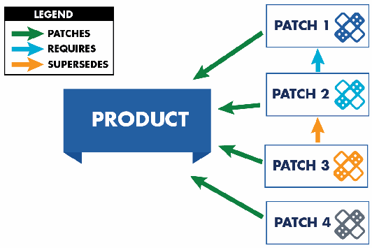
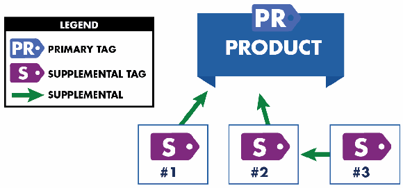

NIST IR 8060 日本語訳
英語タイトル : Guidelines for the Creation of Interoperable Software Identification (SWID) Tags日本語タイトル : 相互運用可能なソフトウェア識別（SWID）タグの作成に関するガイドライン
公開日 : 2016-04-22
原文URL : https://csrc.nist.gov/pubs/ir/8060/final
翻訳編集 : 自動生成（有志による非公式の日本語訳）, 原文取得日 : 2026-10-31, 訳文 : 857 / 887 ブロック
[要約] NIST IR 8060 は、包括的なソフトウェアライフサイクルの一部としてのソフトウェア識別（SWID）タグの機能と用法を概説する報告書です。SWID タグは ISO/IEC 19770-2 規格で規定されており、ソフトウェア資産管理や情報セキュリティ管理の多くの用途を支えるとされています。本書は、SWID タグを運用の文脈で紹介し、相互運用可能な SWID タグを作成するためのガイドラインを示し、タグが適用できる主な利用シナリオを取り上げます。構成は、SWID タグの概要と構造、すべてのタグ作成者向けの実装ガイダンス、タグの種類に固有の実装ガイダンス、利用シナリオです。
NISTIR 8060
NISTIR 8060
Guidelines for the Creation of Interoperable Software Identification (SWID) Tags
相互運用可能なソフトウェア識別（SWID）タグの作成に関するガイドライン
David Waltermire
Brant A. Cheikes
Larry Feldman
Greg Witte
David Waltermire
Brant A. Cheikes
Larry Feldman
Greg Witte
This publication is available free of charge from: http://dx.doi.org/10.6028/NIST.IR.8060
本刊行物は、次の場所から無料で入手できます: http://dx.doi.org/10.6028/NIST.IR.8060
［NIST のロゴ。公的な標章のため、この非公式サイトには掲載していません。原本 PDF を参照してください。］
NISTIR 8060
NISTIR 8060
Guidelines for the Creation of Interoperable Software Identification (SWID) Tags
相互運用可能なソフトウェア識別（SWID）タグの作成に関するガイドライン
David Waltermire
Computer Security Division
Information Technology Laboratory
David Waltermire
Computer Security Division
Information Technology Laboratory
Brant A. Cheikes
The MITRE Corporation
Bedford, Massachusetts
Brant A. Cheikes
The MITRE Corporation
Bedford, Massachusetts
Larry Feldman
Greg Witte
G2, Inc.
Annapolis Junction, Maryland
Larry Feldman
Greg Witte
G2, Inc.
Annapolis Junction, Maryland
This publication is available free of charge from: http://dx.doi.org/10.6028/NIST.IR.8060
本刊行物は、次の場所から無料で入手できます: http://dx.doi.org/10.6028/NIST.IR.8060
April 2016
2016年4月
U.S. Department of Commerce
Penny Pritzker, Secretary
米国商務省
Penny Pritzker 長官
National Institute of Standards and Technology
国立標準技術研究所
Willie May, Under Secretary of Commerce for Standards and Technology and Director
Willie May、NIST 所長兼商務次官（標準・技術担当）
National Institute of Standards and Technology Internal Report 8060
86 pages (April 2016)
国立標準技術研究所 内部報告書 8060
86 ページ（2016年4月）
This publication is available free of charge from: http://dx.doi.org/10.6028/NIST.IR.8060
本刊行物は、次の場所から無料で入手できます: http://dx.doi.org/10.6028/NIST.IR.8060
Certain commercial entities, equipment, or materials may be identified in this document in order to describe an experimental procedure or concept adequately. Such identification is not intended to imply recommendation or endorsement by NIST, nor is it intended to imply that the entities, materials, or equipment are necessarily the best available for the purpose.
本文書では、実験の手順や概念を適切に説明するために、特定の商業事業体、機器、または資材が記載されている場合があります。こうした記載は、NIST による推奨や支持を意味するものではなく、それらの事業体、資材、機器が当該目的にとって必ずしも最良のものであることを意味するものでもありません。
There may be references in this publication to other publications currently under development by NIST in accordance with its assigned statutory responsibilities. The information in this publication, including concepts and methodologies, may be used by federal agencies even before the completion of such companion publications. Thus, until each publication is completed, current requirements, guidelines, and procedures, where they exist, remain operative. For planning and transition purposes, federal agencies may wish to closely follow the development of these new publications by NIST.
本刊行物には、NIST が法令により割り当てられた責務に従って現在策定中の他の刊行物への言及が含まれている場合があります。概念や方法論を含む本刊行物の情報は、そうした関連刊行物の完成前であっても、連邦機関が使用してもよいです。したがって、各刊行物が完成するまでは、現行の要件、ガイドライン、手順が存在する場合には、それらが引き続き有効です。計画および移行のため、連邦機関は、NIST によるこれらの新しい刊行物の策定状況を注意深く追うことを検討してもよいです。
Organizations are encouraged to review all draft publications during public comment periods and provide feedback to NIST. Many NIST cybersecurity publications, other than the ones noted above, are available at http://csrc.nist.gov/publications.
組織は、パブリックコメント期間中にすべてのドラフト刊行物を確認し、NIST にフィードバックを提供することが奨励されています。上記のものを除く多くの NIST サイバーセキュリティ刊行物は、http://csrc.nist.gov/publications で入手できます。
Comments on this publication may be submitted to:
本刊行物に対するコメントの提出先:
National Institute of Standards and Technology
Attn: Computer Security Division, Information Technology Laboratory
100 Bureau Drive (Mail Stop 8930) Gaithersburg, MD 20899-8930
Email: nistir8060-comments@nist.gov
National Institute of Standards and Technology
Attn: Computer Security Division, Information Technology Laboratory
100 Bureau Drive (Mail Stop 8930) Gaithersburg, MD 20899-8930
Email: nistir8060-comments@nist.gov
All comments are subject to release under the Freedom of Information Act (FOIA).
すべてのコメントは、情報自由法（FOIA）に基づく公開の対象となります。
Reports on Computer Systems Technology
コンピュータシステム技術に関する報告書
The Information Technology Laboratory (ITL) at the National Institute of Standards and Technology (NIST) promotes the U.S. economy and public welfare by providing technical leadership for the Nation’s measurement and standards infrastructure. ITL develops tests, test methods, reference data, proof of concept implementations, and technical analyses to advance the development and productive use of information technology. ITL’s responsibilities include the development of management, administrative, technical, and physical standards and guidelines for the cost-effective security and privacy of other than national security-related information in federal information systems.
国立標準技術研究所（NIST）の情報技術ラボラトリー（ITL）は、国の測定・標準のインフラストラクチャに対して技術的なリーダーシップを提供することにより、米国の経済と公共の福祉を促進しています。ITL は、情報技術の開発と生産的な利用を進めるために、テスト、テスト方法、参照データ、概念実証の実装、技術分析を開発しています。ITL の責務には、連邦情報システムにおける国家安全保障関連以外の情報について、費用対効果の高いセキュリティとプライバシーのための管理上、事務上、技術上、物理上の標準およびガイドラインの策定が含まれます。
Abstract
要旨
This report provides an overview of the capabilities and usage of software identification (SWID) tags as part of a comprehensive software lifecycle. As instantiated in the International Organization for Standardization/International Electrotechnical Commission 19770-2 standard, SWID tags support numerous applications for software asset management and information security management. This report introduces SWID tags in an operational context, provides guidelines for the creation of interoperable SWID tags, and highlights key usage scenarios for which SWID tags are applicable.
本報告書は、包括的なソフトウェアライフサイクルの一部としての、ソフトウェア識別（SWID）タグの能力と使用方法の概要を示します。国際標準化機構/国際電気標準会議（ISO/IEC）19770-2 標準として具体化された SWID タグは、ソフトウェア資産管理と情報セキュリティ管理のための数多くの用途を支えます。本報告書は、運用の文脈で SWID タグを紹介し、相互運用可能な SWID タグを作成するためのガイドラインを示し、SWID タグが適用できる主要な使用シナリオを取り上げます。
Keywords
キーワード
software; software asset management; software identification (SWID); software identification tag
software; software asset management; software identification (SWID); software identification tag
Acknowledgments
謝辞
The authors would like to thank Harold Booth, Bob Byers, Christopher Johnson, and Alex J. Nelson of the National Institute of Standards and Technology (NIST); Steve Klos of TagVault.org and 1E; Christine Deal and Charles Schmidt of The MITRE Corporation; Piotr Godowski and Brian Turner of IBM; Hopeton Smalling of OQI Cares, Inc.; Sharon Hope of NASA Jet Propulsion Laboratory; and John Richardson of Veritas for their reviews and contributions of feedback to this report. The authors would also like to thank Dr. Peter Fonash and Juan Gonzalez from the U.S. Department of Homeland Security (DHS) for their ongoing support for and contributions to this report. The authors would also like to thank Jessica Fitzgerald-McKay from the National Security Agency (NSA) for supporting the development of this report.
著者らは、本報告書のレビューとフィードバックによる貢献に対して、国立標準技術研究所（NIST）の Harold Booth、Bob Byers、Christopher Johnson、Alex J. Nelson の各氏、TagVault.org および 1E の Steve Klos 氏、The MITRE Corporation の Christine Deal 氏と Charles Schmidt 氏、IBM の Piotr Godowski 氏と Brian Turner 氏、OQI Cares, Inc. の Hopeton Smalling 氏、NASA ジェット推進研究所の Sharon Hope 氏、Veritas の John Richardson 氏に感謝します。また、著者らは、米国国土安全保障省（DHS）の Dr. Peter Fonash 氏と Juan Gonzalez 氏による、本報告書への継続的な支援と貢献にも感謝します。さらに、著者らは、本報告書の策定を支援してくださった国家安全保障局（NSA）の Jessica Fitzgerald-McKay 氏にも感謝します。
Trademark Information
商標情報
Any mention of commercial products or reference to commercial organizations is for information only; it does not imply recommendation or endorsement by NIST, nor does it imply that the products mentioned are necessarily the best available for the purpose.
商用製品への言及や商業組織への言及は、情報提供のみを目的としたものであり、NIST による推奨や支持を意味するものではなく、言及された製品が当該目的にとって必ずしも最良のものであることを意味するものでもありません。
All names are trademarks or registered trademarks of their respective owners.
すべての名称は、それぞれの所有者の商標または登録商標です。
Document Conventions
文書の表記規則
This report provides both informative and normative guidance supporting the use of SWID tags. The key words “MUST”, “MUST NOT”, “REQUIRED”, “SHALL”, “SHALL NOT”, “SHOULD”, “SHOULD NOT”, “RECOMMENDED”, “MAY”, and “OPTIONAL” in this report are to be interpreted as described in Request for Comment (RFC) 2119 [RFC 2119]. When these words appear in regular case, such as “should” or “may”, they are not intended to be interpreted as RFC 2119 key words.
本報告書は、SWID タグの使用を支える、参考情報としてのガイダンスと規範的なガイダンスの両方を提供します。本報告書における “MUST”、“MUST NOT”、“REQUIRED”、“SHALL”、“SHALL NOT”、“SHOULD”、“SHOULD NOT”、“RECOMMENDED”、“MAY”、“OPTIONAL” というキーワードは、Request for Comment（RFC）2119 [RFC 2119] に記載されたとおりに解釈されます。これらの語が “should” や “may” のように通常の大文字小文字で現れる場合は、RFC 2119 のキーワードとして解釈することを意図していません。
Some of the requirements and conventions used in this report reference Extensible Markup Language (XML) content. These references come in two forms, inline and indented. An example of an inline reference is: A patch tag is differentiated by the fact that the value of the @patch attribute within the <SoftwareIdentity> element is “true”.
本報告書で使用する要件や表記規則の一部は、Extensible Markup Language（XML）の内容を参照しています。これらの参照には、インラインとインデントの 2 つの形式があります。インライン参照の例は次のとおりです。パッチタグは、<SoftwareIdentity> 要素内の @patch 属性の値が “true” であることによって区別されます。
In this example, the notation <SoftwareIdentity> can be replaced by the more verbose equivalent “the XML element whose qualified name is SoftwareIdentity”.
この例では、表記 <SoftwareIdentity> は、より冗長な同等の表現である「修飾名が SoftwareIdentity である XML 要素」に置き換えることができます。
The general convention used when describing XML attributes within this report is to reference the attribute as well as its associated element, employing the general form “@attributeName for the <prefix:localName>”. Attribute values are indicated in quotations, such as the example “true” above.
本報告書で XML 属性を説明する際の一般的な表記規則は、属性とそれに関連する要素を、「<prefix:localName> の @attributeName」という一般的な形式を用いて参照するものです。属性値は、上記の “true” の例のように引用符で示します。
In cases where any valid value may be provided for an XML attribute, this report specifies “<any>” as the attribute value.
XML 属性に任意の有効な値を指定できる場合、本報告書は属性値として “<any>” を指定します。
This report defines a number of new XML attributes that are extensions to the SWID specification. These extension attributes are defined in a new XML namespace, http://csrc.nist.gov/ns/swid/2015-extensions/1.0. These new attributes will be assigned the prefix “n8060” mapped to this namespace. In guidelines and examples, extension attributes will be provided in the form “@n8060:attributeName”. The schema for these extensions can be downloaded at http://csrc.nist.gov/schema/swid/2015-extensions/swid-2015-extensions-1.0.xsd.
本報告書は、SWID 仕様の拡張である新しい XML 属性をいくつか定義します。これらの拡張属性は、新しい XML 名前空間 http://csrc.nist.gov/ns/swid/2015-extensions/1.0 で定義されます。これらの新しい属性には、この名前空間に対応付けられた接頭辞 “n8060” が割り当てられます。ガイドラインと例では、拡張属性は “@n8060:attributeName” の形式で示されます。これらの拡張のスキーマは、http://csrc.nist.gov/schema/swid/2015-extensions/swid-2015-extensions-1.0.xsd からダウンロードできます。
Indented references are intended to represent the form of actual XML content. Indented references represent literal content by the use of a fixed-length font, and parametric (freely replaceable) content by the use of an italic font. Square brackets “[]” are used to designate optional content.
インデント形式の参照は、実際の XML の内容の形式を表すことを意図しています。インデント形式の参照は、固定幅フォントを用いてリテラルな内容を、イタリック体を用いてパラメトリックな（自由に置き換えられる）内容を表します。角括弧 “[]” は、省略可能な内容を示すために使用します。
Both inline and indented forms use qualified names to refer to specific XML elements. A qualified name associates a named element with a namespace. The namespace identifies the XML model, and the XML schema is a definition and implementation of that model. A qualified name declares this schema to element association using the format “prefix:element-name”. The association of prefix to namespace is defined in the metadata of an XML document and varies from document to document.
インライン形式とインデント形式の両方で、特定の XML 要素を参照するために修飾名を使用します。修飾名は、名前付きの要素を名前空間に関連付けます。名前空間は XML モデルを識別し、XML スキーマはそのモデルの定義と実装です。修飾名は、“prefix:element-name” という形式を用いて、このスキーマと要素の関連付けを宣言します。接頭辞と名前空間の対応付けは XML 文書のメタデータで定義され、文書ごとに異なります。
Many portions of this document include cross references to other sections. Such references are often indicated by the use of the “section symbol” (§), with two symbols indicating multiple sections (§§).
本文書の多くの部分には、他の節への相互参照が含まれています。こうした参照は、多くの場合「節記号」（§）を用いて示され、複数の節を示す場合は 2 つの記号（§§）を用います。
Table of Contents
目次
List of Appendices
付録一覧
List of Figures
図一覧
List of Tables
表一覧
1 Introduction
1 はじめに
The International Organization for Standardization (ISO) and the International Electrotechnical Commission (IEC) has published ISO/IEC 19770-2, an international standard for software identification tags, also referred to as SWID tags. A SWID tag is a structured set of data elements that identify and describe a software product. The first version of the standard, ISO/IEC 19770-2:2009 [ISO/IEC 19770-2:2009], was published in November 2009. A significantly revised version of the standard, ISO/IEC 19770-2:2015 [ISO/IEC 19770-2:2015], was published in October 2015, and is referenced herein as the SWID specification.
国際標準化機構（ISO）と国際電気標準会議（IEC）は、ソフトウェア識別タグ（SWID タグとも呼ばれます）に関する国際標準 ISO/IEC 19770-2 を発行しました。SWID タグとは、ソフトウェア製品を識別し記述する、構造化されたデータ要素の集合です。この標準の初版である ISO/IEC 19770-2:2009 [ISO/IEC 19770-2:2009] は 2009 年 11 月に発行されました。大幅に改訂された版である ISO/IEC 19770-2:2015 [ISO/IEC 19770-2:2015] は 2015 年 10 月に発行され、本報告書では SWID 仕様として参照します。
This report provides an overview of the capabilities and usage of SWID tags defined by the ISO/IEC 19770-2:2015 standard. Additionally, this report describes the use of SWID tags as part of comprehensive software asset management lifecycles and cybersecurity procedures. Section 1.1 discusses the software asset management and cybersecurity problems that motivated the development of SWID tags. Section 1.2 highlights the stakeholder benefits that can be gained as SWID tags become more widely produced and consumed within the software marketplace. Section 1.3 describes the purpose and target audiences of this report. Section 1.4 summarizes this section’s key points, and Section 1.5 describes how the rest of this report is organized.
本報告書は、ISO/IEC 19770-2:2015 標準で定義される SWID タグの能力と使用方法の概要を示します。加えて、本報告書は、包括的なソフトウェア資産管理のライフサイクルとサイバーセキュリティの手順の一部としての SWID タグの使用について説明します。1.1 節では、SWID タグの開発の動機となった、ソフトウェア資産管理とサイバーセキュリティの問題を論じます。1.2 節では、ソフトウェア市場で SWID タグがより広く作成・利用されるようになるにつれて、ステークホルダーが得られる利点を取り上げます。1.3 節では、本報告書の目的と対象読者を説明します。1.4 節では、本節の要点をまとめ、1.5 節では、本報告書の残りの構成を説明します。
1.1 Problem Statement
1.1 問題の提示
Software is part of the critical infrastructure for the modern world. Enterprises and individuals routinely acquire software products and deploy them on the physical and/or virtual computing devices they own or operate. This report refers to an instance of such a computing device as a device. ISO/IEC 19770-5 [ISO/IEC 19770-5:2013], a companion standard to the SWID specification, defines software asset management (SAM) as “control and protection of software and related assets within an organization, and control and protection of information about related assets which are needed in order to control and protect software assets.” A core SAM process is software inventory management—the process of building and maintaining an accurate and complete inventory of all software products deployed on all of the devices under an organization’s or individual’s operational control.
ソフトウェアは、現代世界の重要インフラストラクチャの一部です。エンタープライズや個人は、日常的にソフトウェア製品を入手し、自らが所有または運用する物理的および/または仮想的なコンピューティングデバイスに配備しています。本報告書では、そのようなコンピューティングデバイスのインスタンスをデバイスと呼びます。SWID 仕様の関連標準である ISO/IEC 19770-5 [ISO/IEC 19770-5:2013] は、ソフトウェア資産管理（SAM）を「組織内のソフトウェアおよび関連資産の制御と保護、ならびにソフトウェア資産を制御し保護するために必要な、関連資産に関する情報の制御と保護」と定義しています。SAM の中核となるプロセスは、ソフトウェアインベントリ管理、すなわち、組織または個人の運用管理下にあるすべてのデバイスに配備されたすべてのソフトウェア製品について、正確かつ完全なインベントリを構築し維持するプロセスです。
Accurate software inventories of managed devices are needed to support higher-level business, information technology, and cybersecurity functions. For example, enterprises need to know how many copies of a given product are installed in order to ensure compliance with software license agreements. To ensure they are not paying for unneeded licenses, enterprises also need to know where specific copies are installed. As another example, operations personnel need accurate and complete software inventories to ensure that all deployed software assets are authorized, appropriately patched, free of known exploitable weaknesses, and configured according to their organizations’ security policies. Organizations may also use software inventory information to plan software investments and resources needed to support upgrades to and replacement of legacy systems.
管理対象デバイスの正確なソフトウェアインベントリは、より上位のビジネス、情報技術、サイバーセキュリティの機能を支えるために必要です。たとえば、エンタープライズは、ソフトウェアライセンス契約の遵守を確保するために、ある製品が何本インストールされているかを把握する必要があります。不要なライセンスの費用を支払わないようにするためにも、エンタープライズは、特定のコピーがどこにインストールされているかを把握する必要があります。別の例として、運用担当者は、配備されたすべてのソフトウェア資産が、承認されており、適切にパッチが適用され、既知の悪用可能な弱点がなく、組織のセキュリティ方針に従って構成されていることを確保するために、正確で完全なソフトウェアインベントリを必要とします。組織は、ソフトウェアインベントリ情報を用いて、レガシーシステムのアップグレードや置き換えを支えるために必要なソフトウェア投資やリソースを計画することもあります。
Effective software inventory management depends on the ability to discover, identify, and contextualize software products installed on managed devices. Software discovery processes analyze observable states of a managed device to detect and enumerate discrete units of installed software. Discovery is technically challenging due to the enormous variation across the software industry in what it means to be a unit of software. For example, a single unit of software may consist of a combination of executable files, data files, configuration files, library files, and so forth. A single unit of software may also include supporting software units which may be independently installed and executed, as well as changes to the underlying operating environment, such as the addition of device drivers and entries in operating-system maintained tables and databases. Discovery processes need to be able to handle all these sources of variation while avoiding “false positives” (i.e., erroneous reports that a unit of software is present) as well as “false negatives” (i.e., failures to report discovery of a unit of software that is, in fact, present).
効果的なソフトウェアインベントリ管理は、管理対象デバイスにインストールされたソフトウェア製品を発見し、識別し、文脈化する能力に依存します。ソフトウェア発見のプロセスは、管理対象デバイスの観測可能な状態を分析して、インストールされた個々のソフトウェア単位を検出し列挙します。ソフトウェアの単位とは何かについては、ソフトウェア業界全体で非常に大きな差異があるため、発見は技術的に困難です。たとえば、1 つのソフトウェア単位が、実行可能ファイル、データファイル、構成ファイル、ライブラリファイルなどの組み合わせで構成されている場合があります。1 つのソフトウェア単位には、独立してインストールおよび実行できる補助的なソフトウェア単位や、デバイスドライバーの追加、オペレーティングシステムが保守するテーブルやデータベースへのエントリの追加といった、基盤となる動作環境への変更が含まれることもあります。発見のプロセスは、これらすべての差異の要因を扱えなければならず、同時に「偽陽性」（すなわち、ソフトウェア単位が存在するという誤った報告）と「偽陰性」（すなわち、実際に存在するソフトウェア単位の発見を報告できないこと）を避けなければなりません。
Once the discrete units of software have been enumerated on a device, software identification processes assign identifying labels to those units. These labels are used in various contexts to refer to the products, report their presence, and correlate with other sources of information. A key requirement of the labeling process is that when the same unit of software is discovered on different devices, it must be assigned the same label. Identification is technically challenging because the identifying labels are not physically part of the software units, nor can they be discovered in the same manner. Instead, the labels are assigned using inferential techniques based on observable features which vary widely by software provider, operating environment, and device. These inferential techniques may be inaccurate, unreliable, and/or proprietary.
デバイス上の個々のソフトウェア単位が列挙されると、ソフトウェア識別のプロセスが、それらの単位に識別ラベルを割り当てます。これらのラベルは、さまざまな文脈で、製品を参照し、その存在を報告し、他の情報源と突き合わせるために使用されます。ラベル付けプロセスの重要な要件は、同じソフトウェア単位が異なるデバイスで発見された場合には、同じラベルが割り当てられなければならないことです。識別ラベルはソフトウェア単位に物理的に含まれているわけではなく、同じ方法で発見できるものでもないため、識別は技術的に困難です。代わりに、ラベルは、ソフトウェア提供者、動作環境、デバイスによって大きく異なる観測可能な特徴に基づく推論的な手法を用いて割り当てられます。これらの推論的な手法は、不正確であったり、信頼できなかったり、独自仕様であったりする場合があります。
Assuming software units can be discovered and identified, software contextualization processes associate the identifying label with other sources of enriching information. For example, the label of a software unit may be used to collect key descriptive characteristics, such as the software unit’s exact version, license keys, patch level, associated files in device storage areas, and associated configuration settings. As another example, the assigned software identifier may also be used to search for related patches, upgrades, vulnerabilities and remedies, and configuration checklists. Contextualization is technically challenging to the extent that it depends on widespread agreement on, and dissemination of, the identifying labels to be assigned to units of software.
ソフトウェア単位を発見して識別できると仮定すると、ソフトウェアの文脈化のプロセスは、識別ラベルを、情報を補強する他の情報源に関連付けます。たとえば、ソフトウェア単位のラベルは、そのソフトウェア単位の正確なバージョン、ライセンスキー、パッチレベル、デバイスの記憶領域内の関連ファイル、関連する構成設定といった、主要な記述的特性を収集するために使用できます。別の例として、割り当てられたソフトウェア識別子は、関連するパッチ、アップグレード、脆弱性と是正策、構成チェックリストを検索するためにも使用できます。文脈化は、ソフトウェア単位に割り当てる識別ラベルについての広範な合意とその普及に依存する限りにおいて、技術的に困難です。
The SWID tag standard was developed to help overcome the technical challenges associated with software discovery, identification, and contextualization, and thereby enhance the accuracy and reliability of software asset management processes. SWID tags aid discovery by furnishing a standardized indicator of a software product’s presence on a device. Tags aid identification by including a consistent label for a product within its tag. Finally, tags aid contextualization by allowing a wide variety of related product details to be supplied, including the product’s full name and version.
SWID タグの標準は、ソフトウェアの発見、識別、文脈化に伴う技術的課題を克服する一助として、またそれによってソフトウェア資産管理プロセスの正確性と信頼性を高めるために策定されました。SWID タグは、デバイス上にソフトウェア製品が存在することの標準化された指標を提供することにより、発見を助けます。タグは、製品について一貫したラベルをタグ内に含めることにより、識別を助けます。最後に、タグは、製品の正式名称やバージョンを含む、さまざまな関連する製品の詳細を提供できるようにすることにより、文脈化を助けます。
1.2 SWID Tag Benefits
1.2 SWID タグの利点
SWID tags offer benefits to creators and publishers of software products, as well as those who acquire and use those software products. The SWID specification identifies these stakeholders as:
SWID タグは、ソフトウェア製品の作成者や発行者、およびそれらのソフトウェア製品を入手して使用する者に利点をもたらします。SWID 仕様は、これらのステークホルダーを次のように特定しています。
•Tag producers: Organizations and entities that create SWID tags for use by others in the market. Examples of tag-producing organizations include the organizations (or their authorized agents) involved in creating, licensing, packaging, and/or distributing software products. These organizations are best able to ensure that tags contain correct, complete, and consistent data when describing software products. Tag producers are responsible for establishing a norm for data values in the tags they produce, with a goal of ensuring that the same data values are used, where possible and appropriate, across tags for similar products or product versions they produce. Tags may also be produced and distributed by third parties, as well as by automated discovery tools.
•タグ提供者（tag producers）: 市場で他者が使用するために SWID タグを作成する組織とエンティティです。タグを提供する組織の例には、ソフトウェア製品の作成、ライセンス供与、パッケージ化、および/または配布に関わる組織（またはその正式な代理人）があります。これらの組織は、ソフトウェア製品を記述する際に、タグに正しく、完全で、一貫したデータが含まれていることを最もよく確保できます。タグ提供者は、自らが提供するタグ内のデータ値の標準を確立する責任を負い、可能かつ適切な場合には、自らが提供する類似の製品や製品バージョンのタグ全体で同じデータ値が使用されるようにすることを目標とします。タグは、第三者や、自動発見ツールによって提供され、配布されることもあります。
•Tag consumers: Organizations and entities that use information contained in SWID tags to support higher-level, software-related business and cybersecurity functions. Categories of tag consumers include software consumers, inventory/discovery tools, inventory-based cybersecurity tool providers (e.g., providers of software vulnerability management products, which rely on accurate inventory information to support accurate vulnerability assessment), and organizations that use these tools.
•タグ利用者（tag consumers）: SWID タグに含まれる情報を、より上位のソフトウェア関連のビジネスおよびサイバーセキュリティの機能を支えるために使用する組織とエンティティです。タグ利用者の区分には、ソフトウェアの利用者、インベントリ/発見ツール、インベントリに基づくサイバーセキュリティツールの提供者（たとえば、正確な脆弱性評価を支えるために正確なインベントリ情報に依存する、ソフトウェア脆弱性管理製品の提供者）、およびこれらのツールを使用する組織があります。
The implementation of SWID tags supports these stakeholders throughout the entire software lifecycle—from software creation and release through software installation, management, and de-installation. As more software creators also become tag producers and release their products with SWID tags, more consumers of software products are enabled to consume the associated tags. This gives rise to a “virtuous cycle” where all stakeholders gain a variety of benefits, including the abilities to:
SWID タグの実装は、ソフトウェアの作成とリリースから、インストール、管理、アンインストールに至るまで、ソフトウェアライフサイクル全体を通じて、これらのステークホルダーを支えます。より多くのソフトウェア作成者がタグ提供者にもなり、SWID タグ付きで製品をリリースするようになるほど、より多くのソフトウェア製品の利用者が、関連するタグを利用できるようになります。これにより、すべてのステークホルダーがさまざまな利点を得る「好循環」が生まれます。その利点には、次のことができるようになることが含まれます。
•Consistently and accurately identify software products that need to be managed for purposes such as inventory, licensing, and cybersecurity, or for the management of software and software dependencies.
•インベントリ、ライセンス、サイバーセキュリティなどの目的のため、またはソフトウェアとソフトウェアの依存関係の管理のために、管理が必要なソフトウェア製品を、一貫して正確に識別します。
•Use stable software identifiers to report changes to a device’s software load as products are installed, patched, upgraded, and removed.
•製品のインストール、パッチ適用、アップグレード、削除に伴うデバイスのソフトウェア構成の変化を、安定したソフトウェア識別子を用いて報告します。
•Exchange software information between software producers and consumers in a standardized format, regardless of software creator, platform, or management tool.
•ソフトウェアの作成者、プラットフォーム、管理ツールにかかわらず、ソフトウェア提供者と利用者の間で、標準化された形式でソフトウェア情報を交換します。
•Identify and manage software products equally well at any level of abstraction, regardless of whether a product consists of a single application or one or more groups or bundles.
•製品が単一のアプリケーションで構成されているか、1 つ以上のグループやバンドルで構成されているかにかかわらず、どの抽象化レベルでも同様にうまくソフトウェア製品を識別し管理します。
•Correlate information about installed software with other information, including list(s) of authorized software, related patches, configuration settings, security policies, and threat advisories.
•インストールされたソフトウェアに関する情報を、承認済みソフトウェアの一覧、関連するパッチ、構成設定、セキュリティ方針、脅威に関する勧告などの他の情報と突き合わせます。
•Automatically track and manage software license compliance and usage by combining information within a SWID tag with independently-collected software entitlement data.
•SWID タグ内の情報を、独立して収集されたソフトウェア利用権データと組み合わせることにより、ソフトウェアのライセンス遵守と使用状況を自動的に追跡し管理します。
•Aggregate deployed software asset information across an enterprise, providing the organization with knowledge of what software is deployed on specific devices.
•エンタープライズ全体で配備されたソフトウェア資産情報を集約し、どのソフトウェアが特定のデバイスに配備されているかという知識を組織に提供します。
•Record details about the deployed footprint of installed products on devices, such as the list of supporting software components, executable and data files, system processes, and generic resources that may be included in the installation (e.g., device drivers, registry settings, accounts).
•インストールに含まれる可能性のある、補助的なソフトウェアコンポーネント、実行可能ファイルとデータファイル、システムプロセス、汎用的なリソース（たとえば、デバイスドライバー、レジストリ設定、アカウント）の一覧など、デバイスにインストールされた製品の配備フットプリントの詳細を記録します。
•Identify all organizational entities associated with the installation, licensing, maintenance, and management of a software product on an ongoing basis. This identification includes entities external to the software consumer (e.g., software creators, software licensors, packagers, and distributors), and those internal to the software consumer’s organization.
•ソフトウェア製品のインストール、ライセンス供与、保守、管理に継続的に関わる、すべての組織上のエンティティを特定します。この識別には、ソフトウェア利用者の外部のエンティティ（たとえば、ソフトウェア作成者、ソフトウェアのライセンサー、パッケージ担当者、配布者）と、ソフトウェア利用者の組織内部のエンティティが含まれます。
•Use digital signatures to validate that information within a tag comes from a known source and has not been corrupted.
•デジタル署名を用いて、タグ内の情報が既知の出所からのものであり、破損していないことを検証します。
1.3 Purpose and Audience
1.3 目的と対象読者
This report has three purposes. First, it provides a high-level description of SWID tags in order to increase familiarity with the standard. Second, it provides tag implementation guidelines that supplement the SWID tag specification. Third, it presents a set of operational usage scenarios, which illustrate how SWID tags conforming to these guidelines can be used to achieve a variety of cybersecurity goals. By following the guidelines in this report, tag producers can have confidence they are providing all the necessary data, with the requisite data quality, to support the operational goals of each tag usage scenario. Additionally, tag consumers can have confidence that the tags they are using adequately support each tag usage scenario.
本報告書には 3 つの目的があります。第一に、標準への理解を深めるため、SWID タグの高水準な説明を提供します。第二に、SWID タグ仕様を補完する、タグ実装のガイドラインを提供します。第三に、これらのガイドラインに適合した SWID タグを、さまざまなサイバーセキュリティ上の目標を達成するためにどのように使用できるかを示す、運用上の使用シナリオの集合を提示します。本報告書のガイドラインに従うことで、タグ提供者は、各タグ使用シナリオの運用上の目標を支えるために必要なすべてのデータを、必要なデータ品質で提供していることに確信を持てます。加えて、タグ利用者は、自らが使用しているタグが各タグ使用シナリオを適切に支えていることに確信を持てます。
This report addresses four distinct audiences. The first audience is software providers – the individuals and organizations that develop, license, and/or distribute commercial, open source, and custom software products, to include software developed solely for in-house use. This report helps providers understand the problems addressed by SWID tags, why providers’ participation is essential to solving those problems, and how providers may produce and distribute tags that support a wide range of usage scenarios.
本報告書は、4 種類の異なる対象読者を想定しています。第 1 の対象読者は、ソフトウェア提供者、すなわち、社内利用のみを目的として開発されたソフトウェアを含め、商用、オープンソース、およびカスタムのソフトウェア製品を開発、ライセンス供与、および/または配布する個人と組織です。本報告書は、提供者が、SWID タグが対処する問題、それらの問題の解決に提供者の参加が不可欠である理由、および提供者が幅広い使用シナリオを支えるタグをどのように作成し配布できるかを理解する助けとなります。
The second audience is providers of software build, packaging, and installation tools – the individuals and organizations that develop tools used by software providers to build, package, release, and support installation of software. These tools can provide much of the information needed for SWID tag creation. If these tools provide the ability to generate SWID tags as part of their native functionality, SWID tags can be produced by software providers with minimal effort. Using this approach, SWID tags can be generated automatically for any software release managed by the tool, increasing the availability of SWID tags for related products. Support for such a SWID tag generation capability is critical for ensuring that SWID tags are provided as part of all commercial and open source software releases. Furthermore, it is important that installation tools support the consistent management of installed tags on devices during software installation, upgrade, patch, and removal processes. The guidance in this report identifies the SWID tag information needed to ensure that tags generated by these tools support the usage scenarios required by software consumers.
第 2 の対象読者は、ソフトウェアのビルド、パッケージ化、インストールのツールの提供者、すなわち、ソフトウェア提供者がソフトウェアのビルド、パッケージ化、リリース、インストールの支援に使用するツールを開発する個人と組織です。これらのツールは、SWID タグの作成に必要な情報の多くを提供できます。これらのツールが、固有の機能の一部として SWID タグを生成する能力を備えていれば、ソフトウェア提供者は最小限の労力で SWID タグを作成できます。この方法を用いると、ツールが管理するあらゆるソフトウェアリリースについて SWID タグを自動的に生成でき、関連製品の SWID タグの入手可能性が高まります。このような SWID タグ生成機能のサポートは、すべての商用およびオープンソースのソフトウェアリリースの一部として SWID タグが提供されるようにするうえで、きわめて重要です。さらに、インストール用ツールが、ソフトウェアのインストール、アップグレード、パッチ適用、削除のプロセスにおいて、デバイスにインストールされたタグの一貫した管理をサポートすることが重要です。本報告書のガイダンスは、これらのツールが生成するタグが、ソフトウェア利用者に必要な使用シナリオを支えるようにするために必要な SWID タグの情報を特定します。
The third audience is providers of inventory-based products and services – the individuals and organizations that develop tools for discovering, monitoring, and managing software assets for any reason, including securing enterprise networks using standardized inventory information. This audience needs consistency in the content and interpretation of data in SWID tags collected from computing devices to make full use of this information. This report offers guidance to software providers on how to consistently implement tags to support SWID tag usage scenarios. The degree of consistency supported by this guidance helps inventory-based product providers to use tag data to materially enhance the quality and coverage of software information collected and utilized by their products.
第 3 の対象読者は、インベントリに基づく製品およびサービスの提供者、すなわち、標準化されたインベントリ情報を用いたエンタープライズネットワークの保護を含め、何らかの理由でソフトウェア資産を発見、監視、管理するためのツールを開発する個人と組織です。この対象読者は、コンピューティングデバイスから収集した SWID タグ内のデータの内容と解釈に一貫性があることを、この情報を十分に活用するために必要としています。本報告書は、SWID タグの使用シナリオを支えるタグを一貫して実装する方法について、ソフトウェア提供者にガイダンスを提供します。このガイダンスが支える一貫性の程度は、インベントリに基づく製品の提供者が、タグのデータを用いて、自らの製品が収集し利用するソフトウェア情報の品質と網羅範囲を大幅に高める助けとなります。
The fourth audience is software consumers – the individuals and organizations that install and use commercial, open source, and/or in-house developed software products, and inventory-based products and services. This report helps software consumers understand the benefits of software products that are delivered with SWID tags, and why they should encourage software providers to deliver products with SWID tags that meet their anticipated usage scenarios. The guidance provided in this report to software providers also promotes the production of tags that are useful in meeting the usage scenarios of software consumers.
第 4 の対象読者は、ソフトウェア利用者、すなわち、商用、オープンソース、および/または社内開発のソフトウェア製品や、インベントリに基づく製品およびサービスをインストールして使用する個人と組織です。本報告書は、ソフトウェア利用者が、SWID タグ付きで提供されるソフトウェア製品の利点と、想定される使用シナリオを満たす SWID タグ付きで製品を提供するよう、ソフトウェア提供者に働きかけるべき理由を理解する助けとなります。本報告書がソフトウェア提供者に提供するガイダンスは、ソフトウェア利用者の使用シナリオを満たすのに役立つタグの作成も促進します。
Using a set of well-defined usage scenarios, this report identifies how the goals of these four audiences are interrelated. Consumers are trying to cope with software management and cybersecurity challenges that require accurate software inventory. Consumers also are seeking solutions that help to reduce the total cost of ownership for the software they manage. Consumers need to understand how SWID tags can help them, need providers to supply high-quality tags, and need implementers of inventory-based tools to collect and use tags.
本報告書は、明確に定義された一連の使用シナリオを用いて、これら 4 つの対象読者の目標がどのように相互に関連しているかを明らかにします。利用者は、正確なソフトウェアインベントリを必要とする、ソフトウェア管理とサイバーセキュリティの課題に対処しようとしています。利用者は、自らが管理するソフトウェアの総所有コストを削減するのに役立つソリューションも求めています。利用者は、SWID タグが自らにどのように役立つかを理解する必要があり、提供者に高品質のタグを提供してもらう必要があり、インベントリに基づくツールの実装者にタグを収集して利用してもらう必要があります。
Providers need to recognize that adding tags to their products will make their products more useful and more manageable, and also need this recognition to be reinforced by consumer demand for tag support. Software build and installation tool providers can assist software providers with producing tags for software releases and managing tags as part of software installation processes. Inventory-based tool implementers are uniquely positioned to recognize how tags can make their products more reliable and effective, and to work constructively with both consumers and providers to promote software tagging practices.
提供者は、製品にタグを追加すれば製品がより有用で管理しやすくなることを認識する必要があり、またこの認識が、タグのサポートに対する利用者の需要によって強化される必要もあります。ソフトウェアのビルドおよびインストールのツールの提供者は、ソフトウェアリリース向けのタグの作成と、ソフトウェアのインストールプロセスの一部としてのタグの管理について、ソフトウェア提供者を支援できます。インベントリに基づくツールの実装者は、タグが自らの製品をどのようにより信頼でき効果的にできるかを認識し、ソフトウェアのタグ付けの実践を促進するために利用者と提供者の両方と建設的に協力できる、特有の立場にあります。
1.4 Section Summary
1.4 節の要約
The following are the key points of this section:
本節の要点は次のとおりです。
•The ISO/IEC 19770-2:2015 international standard specifies the data format for SWID tags described by this report.
•ISO/IEC 19770-2:2015 国際標準は、本報告書で説明する SWID タグのデータ形式を規定しています。
•SWID tags were developed to help enterprises meet the need for accurate and complete software inventories to support higher-level business and cybersecurity functions.
•SWID タグは、より上位のビジネスおよびサイバーセキュリティの機能を支えるために、エンタープライズが正確で完全なソフトウェアインベントリを必要としていることに応えるために開発されました。
•SWID tags provide benefits to organizations that create and use tags.
•SWID タグは、タグを作成し使用する組織に利点をもたらします。
•Four audiences have interrelated goals pertaining to SWID tags and tagging practices:
•4 つの対象読者は、SWID タグとタグ付けの実践に関して、相互に関連する目標を持っています。
•Software providers often want to increase the manageability of their products for their customers. To justify investing the resources necessary to become tag providers, they need consumers to send clear signals that they value product manageability as much as features, functions, and usability.
•ソフトウェア提供者は、顧客に対して自らの製品の管理しやすさを高めたいと考えることがよくあります。タグ提供者になるために必要なリソースへの投資を正当化するには、利用者が、製品の管理しやすさを、機能、機能性、使いやすさと同じくらい重視していることをはっきりと示す必要があります。
•Providers of software build, packaging, and installation tools often want to support SWID tags in their tools. This support can assist software providers that use their tools with generating tags during product build and release processes. Additionally, these tools can support the management of installed tags on devices during software installation, upgrade, patch, and removal processes. Providers need clear guidance on what information needs to be included in a SWID tag to ensure that they generate useful tags for software consumers.
•ソフトウェアのビルド、パッケージ化、インストールのツールの提供者は、自らのツールで SWID タグをサポートしたいと考えることがよくあります。このサポートは、自らのツールを使用するソフトウェア提供者が、製品のビルドとリリースのプロセス中にタグを生成するのを助けることができます。加えて、これらのツールは、ソフトウェアのインストール、アップグレード、パッチ適用、削除のプロセスにおいて、デバイスにインストールされたタグの管理をサポートできます。提供者は、ソフトウェア利用者にとって有用なタグを生成するために、SWID タグにどのような情報を含める必要があるかについて、明確なガイダンスを必要とします。
•Providers of inventory-based products and services often want to use SWID tags as their primary method for identifying software. These providers need tags to become more widely available in order to make their specialized tools more reliable and effective based on tag data. They act as software providers as well as software consumers, and thus have the needs and goals of both audiences.
•インベントリに基づく製品およびサービスの提供者は、ソフトウェアを識別する主要な方法として SWID タグを使用したいと考えることがよくあります。これらの提供者は、タグのデータに基づいて自らの専門的なツールをより信頼でき効果的なものにするために、タグがより広く利用可能になることを必要としています。彼らは、ソフトウェア提供者としてもソフトウェア利用者としても行動するため、両方の対象読者のニーズと目標を持っています。
•Software consumers often want software providers to supply tags along with their products as a common practice. Consumers need tags to be routinely provided in order to cope with the challenges of maintaining an accurate software inventory, and to address software-related management and cybersecurity issues.
•ソフトウェア利用者は、ソフトウェア提供者が通常の慣行として製品とともにタグを提供することを望むことがよくあります。利用者は、正確なソフトウェアインベントリを維持するという課題に対処し、ソフトウェア関連の管理とサイバーセキュリティの問題に対処するために、タグが日常的に提供されることを必要としています。
•This report seeks to raise awareness of the SWID tag standard, promote understanding of the business and cybersecurity benefits that may be obtained through increased adoption of software tagging standards and practices, and provide detailed guidance to both producers and consumers of SWID tags to promote consistency and interoperability.
•本報告書は、SWID タグ標準に対する認識を高め、ソフトウェアのタグ付け標準と実践の採用拡大によって得られるビジネス上およびサイバーセキュリティ上の利点への理解を促進し、一貫性と相互運用性を促進するために、SWID タグの提供者と利用者の両方に詳細なガイダンスを提供することを目指しています。
1.5 Report Structure
1.5 報告書の構成
The remainder of this report is organized into the following sections and appendices:
本報告書の残りは、次の節と付録で構成されています。
•Section 2 presents general SWID tag concepts that are helpful for understanding the different types of tags, how tags are created, and how tags are made available for use.
•第 2 節では、さまざまな種類のタグ、タグの作成方法、およびタグを利用可能にする方法を理解するのに役立つ、SWID タグの一般的な概念を示します。
•Section 3 presents the SWID tag data elements described in the SWID specification, and discusses specific data elements that support the authentication of tags.
•第 3 節では、SWID 仕様に記載された SWID タグのデータ要素を示し、タグの認証を支える特定のデータ要素について論じます。
•Section 4 provides implementation guidelines that address common issues related to tag deployment and processing on information systems.
•第 4 節では、情報システムへのタグの配備と処理に関する一般的な問題に対処する実装ガイドラインを提供します。
•Section 5 provides implementation guidelines for specific types of tags.
•第 5 節では、特定の種類のタグに対する実装ガイドラインを提供します。
•Section 6 presents usage scenarios for software asset management and software integrity management processes which are enhanced through the use of SWID tags.
•第 6 節では、SWID タグの使用によって強化される、ソフトウェア資産管理とソフトウェア完全性管理のプロセスの使用シナリオを示します。
•Appendix A presents a list of acronyms used in this report.
•付録 A では、本報告書で使用する略語の一覧を示します。
•Appendix B provides the references for the report.
•付録 B では、本報告書の参考文献を示します。
2 SWID Tag Overview
2 SWID タグの概要
A SWID tag is a standardized XML format for a set of data elements that identify and describe a software product. This report uses the term tagged software product (or, simply, tagged product) to refer to a software product that is installed on a device along with one or more discoverable tags describing that product.
SWID タグは、ソフトウェア製品を識別し記述するデータ要素の集合のための、標準化された XML 形式です。本報告書では、タグ付き（ソフトウェア）製品（または単にタグ付き製品）という用語を、その製品を記述する 1 つ以上の発見可能なタグとともにデバイスにインストールされているソフトウェア製品を指すために使用します。
This section provides a general overview of concepts related to SWID tags and is organized as follows. Section 2.1 describes the four types of SWID tags and the distinct role each type of tag plays at key points in the software lifecycle. Section 2.2 discusses common methods for creating tags. Section 2.3 discusses expectations regarding the deployment of SWID tags. Finally, Section 2.4 concludes with a summary of key points from this section.
本節は、SWID タグに関連する概念の一般的な概要を示すもので、次のように構成されています。2.1 節では、4 種類の SWID タグと、ソフトウェアライフサイクルの主要な時点で各種類のタグが果たす固有の役割を説明します。2.2 節では、タグを作成する一般的な方法を論じます。2.3 節では、SWID タグの配備に関する期待事項を論じます。最後に、2.4 節で、本節の要点をまとめて締めくくります。
2.1 SWID Tag Types and the Software Lifecycle
2.1 SWID タグの種類とソフトウェアライフサイクル
The SWID specification defines four types of SWID tags: corpus, primary, patch, and supplemental. Corpus, primary, and patch tags have similar functions in that they describe the existence and/or presence of different types of software, and, potentially, different states of software products. In contrast, supplemental tags furnish additional information not contained in corpus, primary, or patch tags. All four tag types come into play at various points in the software lifecycle, and support software management processes that depend on the ability to accurately determine where each software product is in its lifecycle. Figure 1 illustrates the steps in the software lifecycle and the relationships among those lifecycle events supported by the four types of SWID tags, as follows:
SWID 仕様は、コーパスタグ、プライマリタグ、パッチタグ、補足タグという 4 種類の SWID タグを定義しています。コーパスタグ、プライマリタグ、パッチタグは、異なる種類のソフトウェアの存在および／または有無、そして場合によってはソフトウェア製品の異なる状態を記述するという点で、類似した機能を持っています。これに対し、補足タグは、コーパスタグ、プライマリタグ、パッチタグに含まれていない追加情報を提供します。4 種類のタグはすべて、ソフトウェアライフサイクルのさまざまな時点で使われ、各ソフトウェア製品がそのライフサイクルのどこにあるかを正確に判断する能力に依存するソフトウェア管理プロセスを支えます。図 1 は、ソフトウェアライフサイクルの各ステップと、4 種類の SWID タグが支えるそれらのライフサイクルイベント間の関係を、次のように示します。
•Software Deployment. Before the software product is installed (i.e., pre-installation), and while the product is being deployed, a corpus tag provides information about the installation files and distribution media (e.g., CD/DVD, distribution package).
•ソフトウェアの配備。ソフトウェア製品がインストールされる前（すなわち、インストール前）、および製品が配備されている間、コーパスタグは、インストールファイルと配布媒体（たとえば、CD/DVD、配布パッケージ）に関する情報を提供します。
•Software Installation. A primary tag will be installed with the software product (or subsequently created) to uniquely identify and describe the software product. Supplemental tags are created to augment primary tags with additional site-specific or extended information. Patch tags may also be installed during software installation to provide information about software fixes deployed along with the base software installation.
•ソフトウェアのインストール。プライマリタグは、ソフトウェア製品を一意に識別し記述するために、ソフトウェア製品とともにインストールされます（または後で作成されます）。補足タグは、サイト固有の情報や拡張情報を加えてプライマリタグを補強するために作成されます。パッチタグも、基本となるソフトウェアのインストールとともに配備された修正に関する情報を提供するために、ソフトウェアのインストール中にインストールされる場合があります。
•Software Patching. When a new patch is applied to the software product, a new patch tag is provided, supplying details about the patch and its dependencies.
•ソフトウェアへのパッチ適用。新しいパッチがソフトウェア製品に適用されると、そのパッチとその依存関係の詳細を提供する新しいパッチタグが提供されます。
•Software Upgrading. As a software product is upgraded to a new version, new primary and supplemental tags replace existing tags, enabling timely and accurate tracking of updates to software inventory.
•ソフトウェアのアップグレード。ソフトウェア製品が新しいバージョンにアップグレードされると、新しいプライマリタグと補足タグが既存のタグを置き換え、ソフトウェアインベントリに対する更新の適時で正確な追跡が可能になります。
•Software Removal. Upon removal of the software product, relevant SWID tags are removed. This removal event can trigger timely updates to software inventory reflecting the product’s removal.
•ソフトウェアの削除。ソフトウェア製品が削除されると、関連する SWID タグが削除されます。この削除イベントは、製品の削除を反映するソフトウェアインベントリの適時な更新の契機となることがあります。
![Figure 1 diagram: five lifecycle stages shown as arrow-shaped column headers — "Installation Media Deployed", "Product Installed", "Product Patched", "Product Upgraded", "Product Removed". Under Installation Media Deployed is a corpus tag (C); under Product Installed, a primary tag (PR) and a supplemental tag (S); under Product Patched, a patch tag (P); under Product Upgraded, an "Old Version" box with PR, S and P tags crossed out and a "New Version" box with PR and S tags; under Product Removed, a box with PR and S tags crossed out. A legend identifies C = Corpus, PR = Primary, S = Supplemental, P = Patch.](assets/ir-8060/p0016-figure-01.png)
図1の図です。矢印形の列見出しでライフサイクルの5段階「インストール媒体の配備（Installation Media Deployed）」「製品のインストール（Product Installed）」「製品へのパッチ適用（Product Patched）」「製品のアップグレード（Product Upgraded）」「製品の削除（Product Removed）」を示します。インストール媒体の配備の下にはコーパスタグ（C）、製品のインストールの下にはプライマリタグ（PR）と補足タグ（S）、パッチ適用の下にはパッチタグ（P）があります。アップグレードの下には、PR・S・P のタグに斜線を引いた「旧バージョン（Old Version）」の枠と、PR・S のタグを含む「新バージョン（New Version）」の枠があります。削除の下には、PR・S のタグに斜線を引いた枠があります。凡例は C＝コーパス（Corpus）、PR＝プライマリ（Primary）、S＝補足（Supplemental）、P＝パッチ（Patch）です。
Figure 1: SWID Tags and the Software Lifecycle
図 1: SWID タグとソフトウェアライフサイクル
The software lifecycle events described in Figure 1 represent typical uses of tags within the software deployment lifecycle. While not depicted in Figure 1, software discovery, configuration management, and vulnerability management processes generate other lifecycle events which may create and use primary, patch, and supplemental tags. The four tag types related to software lifecycle events are discussed in the following subsections.
図 1 に示すソフトウェアライフサイクルのイベントは、ソフトウェアの配備ライフサイクルにおけるタグの典型的な使用を表しています。図 1 には示されていませんが、ソフトウェアの発見、構成管理、脆弱性管理のプロセスは、プライマリタグ、パッチタグ、補足タグを作成し使用する可能性のある他のライフサイクルイベントを生み出します。ソフトウェアライフサイクルのイベントに関連する 4 種類のタグについては、以降の小節で論じます。
2.1.1 Corpus Tags
2.1.1 コーパスタグ
Before software is installed, it is typically delivered or otherwise made available to a computing device in the form of a software installation package. The installation package contains the software in a pre-installation condition, often compressed in some manner. Common formats for installation packages include TAR and ZIP files, and “self-unpacking” executable files. In all cases, an installation procedure must be run to cause the software contained in an installation package to be unpacked and deployed on a target device. The SWID specification defines corpus tags for vendors and distributors to use to identify and describe products in such a pre-installation state. The availability of software identification and descriptive information for a software installation package enables verification of the software package and authentication of the organization releasing the package.
ソフトウェアは、インストールされる前は、通常、ソフトウェアインストールパッケージの形でコンピューティングデバイスに配信されるか、または利用可能にされます。インストールパッケージには、インストール前の状態のソフトウェアが、多くの場合何らかの方法で圧縮されて含まれています。インストールパッケージの一般的な形式には、TAR ファイルと ZIP ファイル、および「自己解凍型」の実行可能ファイルがあります。どの場合も、インストールパッケージに含まれるソフトウェアを展開して対象デバイスに配備するには、インストール手順を実行しなければなりません。SWID 仕様は、ベンダーや配布者がこのようなインストール前の状態の製品を識別し記述するために使用する、コーパスタグを定義しています。ソフトウェアインストールパッケージについてのソフトウェア識別情報と記述情報が利用できることにより、ソフトウェアパッケージの検証と、パッケージをリリースする組織の認証が可能になります。
Corpus tags are intended to be used as inputs to software installation tools and processes; they are not installed on devices as part of an installation procedure. Corpus tags may be used by installation tools to verify the integrity of an installable product, and to authenticate the issuer of an installation package before executing the installation procedure (see §3.2). If a manifest of the installation files is included in the corpus tag (see §3.1.6 on the <Payload> element), installation package tampering can be detected and the installation procedure aborted if the payload data and the actual files do not match. When combined with other licensing data, corpus tags may aid consumers in confirming whether they have a valid license for a product before they install it. All of this information can be used as part of an automated policy decision to allow or prevent the software installation (see §6.2.1) on a device.
コーパスタグは、ソフトウェアインストール用のツールとプロセスへの入力として使用されることを意図しており、インストール手順の一部としてデバイスにインストールされることはありません。コーパスタグは、インストールツールが、インストール可能な製品の完全性を検証し、インストール手順を実行する前にインストールパッケージの発行者を認証するために使用できます（§3.2 を参照）。インストールファイルのマニフェストがコーパスタグに含まれている場合（<Payload> 要素に関する §3.1.6 を参照）、ペイロードのデータと実際のファイルが一致しなければ、インストールパッケージの改ざんを検出し、インストール手順を中止できます。他のライセンスデータと組み合わせると、コーパスタグは、利用者が製品をインストールする前に、その製品の有効なライセンスを持っているかどうかを確認する助けとなります。これらの情報はすべて、デバイスへのソフトウェアのインストールを許可または防止する自動化された方針決定の一部として使用できます（§6.2.1 を参照）。
2.1.2 Primary Tags
2.1.2 プライマリタグ
As previously illustrated in Figure 1, primary tags are involved in different software lifecycle events. The SWID specification defines primary tags to identify and describe software products once they have been successfully installed on a computing device. The primary tag for each tagged product needs to furnish values for all data elements that are designated “mandatory” in the SWID specification. A minimal primary tag supplies the name of the product (as a string), a globally unique identifier for the tag, and basic information identifying the tag’s creator.
図 1 で先に示したとおり、プライマリタグは、さまざまなソフトウェアライフサイクルのイベントに関わります。SWID 仕様は、ソフトウェア製品がコンピューティングデバイスに正常にインストールされた後に、その製品を識別し記述するものとして、プライマリタグを定義しています。各タグ付き製品のプライマリタグは、SWID 仕様で「必須（mandatory）」と指定されているすべてのデータ要素の値を提供する必要があります。最小限のプライマリタグは、製品名（文字列として）、タグのグローバルに一意な識別子、およびタグの作成者を識別する基本情報を提供します。
Ideally, the software provider is also the creator of that product’s primary tag; however, the SWID specification allows other parties (including automated tools) to create tags for products in cases where software providers have declined to do so or have delegated this responsibility to another party. The SWID specification recognizes a number of alternative roles for creators of tags, including organizations and individuals which aggregate, distribute, and license software products (see §3.1.2).
理想的には、ソフトウェア提供者がその製品のプライマリタグの作成者でもあります。ただし、SWID 仕様は、ソフトウェア提供者がタグの作成を辞退した場合や、この責任を他の当事者に委任した場合には、他の当事者（自動化ツールを含む）が製品のタグを作成することを認めています。SWID 仕様は、ソフトウェア製品の集約、配布、ライセンス供与を行う組織や個人を含め、タグの作成者に関する複数の代替的な役割を認めています（§3.1.2 を参照）。
A globally unique tag identifier is essential information in many usage scenarios because it may be used as a globally unique proxy identifier for the software installation. The tag identifier of a primary tag can be considered a proxy identifier for the tagged product because there is a one-to-one relationship between the primary tag and the installed software it identifies. For increased processing efficiency, inventory and discovery tools may choose to identify and report tagged products using just their tag identifiers rather than their fully populated primary tags.
グローバルに一意なタグ識別子は、多くの使用シナリオで不可欠な情報です。これは、ソフトウェアのインストールのグローバルに一意な代理識別子として使用できるためです。プライマリタグのタグ識別子は、プライマリタグと、それが識別するインストール済みソフトウェアとの間に一対一の関係があるため、タグ付き製品の代理識別子とみなせます。処理効率を高めるために、インベントリツールや発見ツールは、完全に記入されたプライマリタグではなく、タグ識別子のみを用いてタグ付き製品を識別し報告することを選択してもよいです。
When a product is upgraded, the primary tag(s) associated with the old version are removed and replaced with primary tag(s) for the new version. When a product is removed from a device, its primary tag(s) are removed as well. By strictly maintaining the one-to-one association between installed software and associated tags, it is possible to continuously monitor installed software inventory and track software updates using SWID tag data (see §6.1.1).
製品がアップグレードされると、旧バージョンに関連付けられたプライマリタグは削除され、新バージョンのプライマリタグに置き換えられます。製品がデバイスから削除されると、そのプライマリタグも削除されます。インストール済みソフトウェアと関連タグとの一対一の対応付けを厳密に維持することにより、SWID タグのデータを用いて、インストール済みソフトウェアのインベントリを継続的に監視し、ソフトウェアの更新を追跡できます（§6.1.1 を参照）。
Because software products may be furnished as suites or bundles or as add-on components for other products, the SWID specification defines a <Link> element (see §3.1.4), which may be used within a SWID tag to indicate relationships between the product described by the tag and other products or items that may be available. Two noteworthy relationships are:
ソフトウェア製品は、スイートやバンドルとして、あるいは他の製品のアドオンコンポーネントとして提供される場合があるため、SWID 仕様は <Link> 要素（§3.1.4 を参照）を定義しています。この要素は、SWID タグ内で、そのタグが記述する製品と、利用可能な他の製品や項目との関係を示すために使用できます。注目すべき 2 つの関係は次のとおりです。
•Component. Indicates that the product described by the primary tag has a separately installable software product as one of its components. In such situations, the product’s primary tag points to the primary tag of the component product using a <Link> element where the @rel attribute is set to “component”.
•Component。プライマリタグが記述する製品が、別個にインストール可能なソフトウェア製品を構成要素の 1 つとして持つことを示します。このような場合、その製品のプライマリタグは、@rel 属性が “component” に設定された <Link> 要素を用いて、構成要素となる製品のプライマリタグを指します。
•Requires. Indicates that the product described by the primary tag depends on a separately installable software product. In such situations, the primary tag points to the primary tag of the required product using a <Link> element where the @rel attribute is set to “requires”.
•Requires。プライマリタグが記述する製品が、別個にインストール可能なソフトウェア製品に依存することを示します。このような場合、プライマリタグは、@rel 属性が “requires” に設定された <Link> 要素を用いて、必要とされる製品のプライマリタグを指します。
The relationships that may be expressed in primary tags are illustrated in Figure 2 below. This illustration shows how primary SWID tags may indicate the associations among several software components. The figure shows an overarching Productivity Suite that has a component relationship with each of its supporting applications. The figure also shows how the two subsidiary products may require other component software (e.g., language pack, spell checking software).
プライマリタグで表現できる関係を、以下の図 2 に示します。この図は、プライマリ SWID タグが、複数のソフトウェアコンポーネント間の関連付けをどのように示せるかを表しています。この図には、それぞれの補助アプリケーションとコンポーネントの関係を持つ、包括的な Productivity Suite が示されています。この図には、2 つの下位製品が、他のコンポーネントソフトウェア（たとえば、言語パック、スペルチェックソフトウェア）をどのように必要とする場合があるかも示されています。
Figure 2: Primary Tag Relationships
図 2: プライマリタグの関係
図2の図です。「生産性スイート（Productivity Suite）」のプライマリタグ（PR）から、灰色の「コンポーネント（component）」の矢印が、プライマリタグを持つ2つの製品「ワードプロセッサー（Word Processor）」と「プレゼンテーションソフトウェア（Presentation Software）」に向かいます。この2つからは、赤い「必要とする（requires）」の矢印が「共通コンポーネント（Common Components）」のプライマリタグに向かいます。凡例は PR＝プライマリタグ（Primary Tag）、灰色の矢印＝コンポーネント（Component）、赤い矢印＝必要とする（Requires）です。
2.1.3 Patch Tags
2.1.3 パッチタグ
A software provider may release patches to correct errors in, or add new features to, a product. When a patch is installed on a device, changes are made to a product’s installation footprint. Since a patch augments an existing installation, these changes need to be tracked separately. The SWID specification defines patch tags for software providers to identify and describe each patch. When a patch is installed, a patch tag is placed on the device in a location associated with the patched product. When a patch tag is not provided by a software provider, discovery tools can create a patch tag to indicate the previous application of a patch. In contrast with a patch, an upgrade is defined as a complete replacement of a product’s installation footprint. An upgrade typically changes the product’s version number and/or release details.
ソフトウェア提供者は、製品の誤りを修正したり、新しい機能を追加したりするために、パッチをリリースする場合があります。パッチがデバイスにインストールされると、製品のインストールフットプリントに変更が加えられます。パッチは既存のインストールを補強するものであるため、これらの変更は別途追跡する必要があります。SWID 仕様は、ソフトウェア提供者が各パッチを識別し記述するためのパッチタグを定義しています。パッチがインストールされると、パッチタグが、パッチ適用された製品に関連付けられた場所のデバイス上に置かれます。ソフトウェア提供者がパッチタグを提供していない場合、発見ツールは、パッチの適用が以前に行われたことを示すパッチタグを作成できます。パッチとは対照的に、アップグレードは、製品のインストールフットプリントの完全な置き換えと定義されます。アップグレードでは、通常、製品のバージョン番号および/またはリリースの詳細が変更されます。
The data elements contained in a patch tag identify and describe the patch, rather than the product to which the patch is applied. For example, the product name and version recorded in a patch tag need not match the product name and version recorded in the patched product’s primary tag. Instead, these attributes can be used to record the name and version of the patch assigned by the software provider.
パッチタグに含まれるデータ要素は、パッチが適用される製品ではなく、パッチを識別し記述します。たとえば、パッチタグに記録される製品名とバージョンは、パッチ適用された製品のプライマリタグに記録される製品名とバージョンと一致する必要はありません。代わりに、これらの属性を、ソフトウェア提供者が割り当てたパッチの名前とバージョンを記録するために使用できます。
A patch tag can indicate relationships between the patch described by the patch tag and other products or patches that may be available using the <Link> element (see §3.1.4). Three types of relationships are worth noting here:
パッチタグは、<Link> 要素を用いて、そのパッチタグが記述するパッチと、利用可能な他の製品やパッチとの関係を示すことができます（§3.1.4 を参照）。ここで注目すべき関係は 3 種類あります。
•Patches. Indicates that a patch applies to a patched product. In such situations, the patch’s patch tag points to the primary tag of the patched product using a <Link> element where the @rel attribute is set to “patches”.
•Patches。パッチが、パッチ適用された製品に適用されることを示します。このような場合、そのパッチのパッチタグは、@rel 属性が “patches” に設定された <Link> 要素を用いて、パッチ適用された製品のプライマリタグを指します。
•Requires. Indicates that a patch requires the prior installation or co-existence of another patch. In such situations, the patch’s patch tag points to the patch tag of the required patch using a <Link> element where the @rel attribute is set to “requires”.
•Requires。パッチが、別のパッチを事前にインストールするか、または共存させることを必要とすることを示します。このような場合、そのパッチのパッチタグは、@rel 属性が “requires” に設定された <Link> 要素を用いて、必要とされるパッチのパッチタグを指します。
•Supersedes. Indicates that a patch can entirely replace another patch. In such situations, if the other patch is installed, it might be removed or overwritten when the new patch is installed. This is expressed using a <Link> element where the @rel attribute of the superseding patch tag is set to “supersedes” with a pointer to the patch tag of the superseded patch.
•Supersedes。パッチが、別のパッチを完全に置き換えられることを示します。このような場合、他のパッチがインストールされていれば、新しいパッチのインストール時に、それが削除または上書きされる場合があります。これは、置き換えるパッチのパッチタグの @rel 属性を “supersedes” に設定し、置き換えられるパッチのパッチタグへのポインターを持たせた <Link> 要素を用いて表現されます。
When used in this way, patch tags may assist in determining whether an installed product has all required patches applied (see §6.1.2). Figure 3 illustrates the tag relationships for four product patches that can be applied over time.
このように使用すると、パッチタグは、インストール済みの製品に必要なパッチがすべて適用されているかどうかの判断を助けることができます（§6.1.2 を参照）。図 3 は、時間をかけて適用できる 4 つの製品パッチのタグの関係を示しています。

図3の図です。「パッチ1（Patch 1）」から「パッチ4（Patch 4）」までの4つのパッチの枠から、それぞれ緑の「パッチ適用（patches）」の矢印が「製品（Product）」の枠に向かいます。パッチ2からパッチ1へ青い「必要とする（requires）」の矢印が、パッチ3からパッチ2へオレンジの「置き換える（supersedes）」の矢印があります。凡例は 緑＝Patches、青＝Requires、オレンジ＝Supersedes です。
Figure 3: Patch Tag Relationships
図 3: パッチタグの関係
All patches have @rel=patches Product, since they all patch the same product.
すべてのパッチは、同じ製品にパッチを適用するため、@rel=patches Product を持ちます。
Patch 2 has @rel=requires Patch 1, since Patch 1 must be installed before Patch 2.
Patch 2 は、Patch 2 の前に Patch 1 をインストールしなければならないため、@rel=requires Patch 1 を持ちます。
Patch 3 has @rel=supersedes Patch 2, since Patch 3 entirely replaces Patch 2. Although not depicted here, Patch 3 could also require or supersede Patch 1 depending on the specific scenario. Such additional relationships would be indicated by additional <Link> elements.
Patch 3 は、Patch 3 が Patch 2 を完全に置き換えるため、@rel=supersedes Patch 2 を持ちます。ここには示されていませんが、Patch 3 は、具体的なシナリオによっては、Patch 1 を必要としたり置き換えたりする場合もあります。そのような追加の関係は、追加の <Link> 要素によって示されます。
Patches 1 and 4 are completely independent of the other two patches, so their patch tags do not include any <Link> elements pointing to any of the other patch tags.
Patch 1 と Patch 4 は、他の 2 つのパッチから完全に独立しているため、それらのパッチタグには、他のパッチタグを指す <Link> 要素は含まれません。
A patch can include a manifest of the new and/or changed files (see §3.1.6 for discussion on the <Payload> element), which can be used to verify that the actual patched files are present on the device. This allows for confirmation that the patch has been correctly installed and remains installed, preventing a malicious actor from deploying files that misrepresent the installation status of a patch.
パッチには、新規および/または変更されたファイルのマニフェストを含めることができ（<Payload> 要素に関する議論は §3.1.6 を参照）、これを用いて、実際にパッチ適用されたファイルがデバイス上に存在することを検証できます。これにより、パッチが正しくインストールされ、インストールされたままであることを確認でき、悪意ある行為者が、パッチのインストール状況を偽るファイルを配備することを防げます。
2.1.4 Supplemental Tags
2.1.4 補足タグ
The SWID specification allows tags to be modified only by the tag creator. To provide a mechanism whereby consumers and software management tools may add arbitrary post-installation information of local utility, the SWID specification allows for any number of supplemental tags to be installed, either at the same time the primary tag is installed, or at any time thereafter.
SWID 仕様は、タグの変更をタグの作成者のみに認めています。利用者やソフトウェア管理ツールが、ローカルで有用なインストール後の任意の情報を追加できる仕組みを提供するため、SWID 仕様は、プライマリタグのインストールと同時か、その後いつでも、任意の数の補足タグをインストールできるようにしています。
Any entity may create a supplemental tag for any purpose. For example, supplemental tags may be created by automated tools in order to augment an existing primary tag with additional site-specific information, such as license keys and contact information for local responsible parties.
どのエンティティも、任意の目的で補足タグを作成できます。たとえば、補足タグは、ライセンスキーや、現地の責任者の連絡先情報などの、サイト固有の追加情報で既存のプライマリタグを補強するために、自動化ツールによって作成される場合があります。
Each supplemental tag contains a pointer to the tagged product’s primary tag using a <Link> element where the @rel attribute is set to “supplemental”. When supplemental tags are present, a tag consumer may create a complete record of the information describing a product by combining the data elements in the product’s primary tag with the data elements in any linked supplemental tags.
各補足タグは、@rel 属性が “supplemental” に設定された <Link> 要素を用いて、タグ付き製品のプライマリタグへのポインターを含みます。補足タグが存在する場合、タグ利用者は、製品のプライマリタグのデータ要素と、リンクされた補足タグのデータ要素を組み合わせることにより、その製品を記述する情報の完全な記録を作成できます。
The relationships that may be expressed in supplemental tags are illustrated in Figure 4.
補足タグで表現できる関係を、図 4 に示します。

図4の図です。上部に「製品（Product）」のプライマリタグ（PR）があります。補足タグ「#1」と「#2」からはそれぞれ緑の「補足（supplemental）」の矢印が製品に向かい、補足タグ「#3」からは緑の矢印が補足タグ #2 に向かいます。凡例は PR＝プライマリタグ（Primary Tag）、S＝補足タグ（Supplemental Tag）、緑の矢印＝補足（Supplemental）です。
Figure 4: Supplemental Tag Relations
図 4: 補足タグの関係
Supplemental tags may also be employed to augment non-primary tags. For example, a supplemental tag could add local information about a patch tag (e.g., to record a timestamp indicating when the patch was applied), or even about another supplemental tag (as illustrated in #3 above). In such situations, the supplemental tag also contains a <Link> element pointing to the tag that is having its information augmented.
補足タグは、プライマリタグ以外のタグを補強するためにも使用できます。たとえば、補足タグは、パッチタグについてのローカルな情報（たとえば、パッチが適用された時点を示すタイムスタンプの記録）を追加したり、さらには（上記の #3 に示すように）別の補足タグについての情報を追加したりできます。このような場合、補足タグには、情報が補強されるタグを指す <Link> 要素も含まれます。
A supplemental tag is intended to furnish data values that augment and do not conflict with data values provided by the primary tag and any of the product’s other supplemental tags. If conflicts are detected, data in the primary tag, if provided by the software producer, is considered the most reliable, and tools can be expected to ignore conflicting data or to report all conflicting data as exceptions. For example, the mandatory product name recorded in a supplemental tag is expected to match the product name recorded in the product’s primary tag; if they are different, the name recorded in the primary tag is considered the preferred name.
補足タグは、プライマリタグや、その製品の他の補足タグが提供するデータ値を補強し、それらと矛盾しないデータ値を提供することを意図しています。矛盾が検出された場合、ソフトウェア提供者によって提供されたプライマリタグのデータが最も信頼できるとみなされ、ツールは、矛盾するデータを無視するか、矛盾するすべてのデータを例外として報告することが期待できます。たとえば、補足タグに記録された必須の製品名は、その製品のプライマリタグに記録された製品名と一致することが期待されます。異なる場合は、プライマリタグに記録された名前が優先される名前とみなされます。
As previously illustrated in Figure 1, after a software product is upgraded, all primary, patch, and supplemental tags associated with the pre-upgrade version of the product will be removed. If needed, new supplemental tags associated with the upgraded version may be deployed. When a software product is removed, all primary, patch, and supplemental tags associated with the product will be removed.
図 1 で先に示したとおり、ソフトウェア製品がアップグレードされた後は、その製品のアップグレード前のバージョンに関連付けられたすべてのプライマリタグ、パッチタグ、補足タグが削除されます。必要に応じて、アップグレード後のバージョンに関連付けられた新しい補足タグを配備できます。ソフトウェア製品が削除されると、その製品に関連付けられたすべてのプライマリタグ、パッチタグ、補足タグが削除されます。
2.2 SWID Tag Creation
2.2 SWID タグの作成
A SWID tag for a software package, product, or patch can be created in a number of ways. The following subsections describe the circumstances under which SWID tags are created and how the method of SWID tag creation impacts their use.
ソフトウェアパッケージ、製品、またはパッチの SWID タグは、さまざまな方法で作成できます。以下の小節では、SWID タグが作成される状況と、SWID タグの作成方法がその使用にどのような影響を与えるかを説明します。
2.2.1 Corpus Tags
2.2.1 コーパスタグ
Corpus tags provide information about a software installation package. To ensure that the most complete and accurate information is provided, a corpus tag is ideally created through an automated process when the software installation package is created. Generation of a corpus tag is typically done as part of the software build and release process thereby ensuring that the tag is included with the software installation package and available for use during the installation processes described in Section 2.1.1. Additionally, the corpus tag can be signed to enable authentication of the tag provider as the software provider, verification of the tag’s integrity, and verification of the software installation package footprint (see §3.2).
コーパスタグは、ソフトウェアインストールパッケージに関する情報を提供します。最も完全で正確な情報が提供されるようにするには、コーパスタグは、ソフトウェアインストールパッケージが作成される際に、自動化されたプロセスによって作成されるのが理想的です。コーパスタグの生成は通常、ソフトウェアのビルドおよびリリースプロセスの一部として行われ、それによってタグがソフトウェアインストールパッケージに含まれ、2.1.1 節で説明したインストールプロセス中に使用できることが保証されます。加えて、タグ提供者がソフトウェア提供者であることの認証、タグの完全性の検証、およびソフトウェアインストールパッケージのフットプリントの検証を可能にするため、コーパスタグに署名を付けることができます（§3.2 を参照）。
In cases where a corpus tag is not created by the software provider as part of the package creation process, a secondary party may generate a corpus tag using information gathered by analyzing an existing software installation package provided by another organization. This type of creation pattern is not ideal, since the secondary party may not have all the needed information, resulting in a corpus tag that contains incomplete or inaccurate information. Furthermore, while the tag can still be signed, the organization signing the tag will differ from the software installation package provider. This means that although the signed tag can still be used to authenticate the tag provider, to verify the tag’s integrity, and to verify the software installation package footprint, the tag’s signature cannot be used to authenticate that the tag provider is the software provider. This results in a lesser degree of assurance.
コーパスタグが、パッケージ作成プロセスの一部としてソフトウェア提供者によって作成されない場合、第二の当事者が、別の組織が提供する既存のソフトウェアインストールパッケージを分析して収集した情報を用いて、コーパスタグを生成する場合があります。この種の作成パターンは、第二の当事者が必要な情報をすべて持っていない場合があり、不完全または不正確な情報を含むコーパスタグになるため、理想的ではありません。さらに、タグに署名することは依然として可能ですが、タグに署名する組織は、ソフトウェアインストールパッケージの提供者とは異なります。これは、署名付きタグを、タグ提供者の認証、タグの完全性の検証、ソフトウェアインストールパッケージのフットプリントの検証に使用することは依然としてできるものの、タグの署名を、タグ提供者がソフトウェア提供者であることの認証に使用することはできないことを意味します。その結果、保証の度合いは低くなります。
2.2.2 Primary and Patch Tags
2.2.2 プライマリタグとパッチタグ
To maximize the availability, accuracy, and completeness of information contained within a primary or patch tag, it is important that such a SWID tag be created during a product’s build and/or release process by an authoritative source such as the software provider. As software is being prepared for release, build and packaging processes can automatically generate primary and patch tags using authoritative information made available during these processes. This is the ideal case for tag creation since the information available during these processes tends to be the most accurate and authoritative. Additionally, a primary or patch tag can be signed, enabling the authentication of the tag provider as the software provider, verification of the tag’s integrity, and verification of the software’s installed footprint (see §3.2).
プライマリタグまたはパッチタグに含まれる情報の入手可能性、正確性、完全性を最大化するには、そのような SWID タグを、ソフトウェア提供者などの権威ある情報源が、製品のビルドおよび/またはリリースのプロセス中に作成することが重要です。ソフトウェアがリリースの準備をされている間、ビルドとパッケージ化のプロセスは、これらのプロセス中に利用できる権威ある情報を用いて、プライマリタグとパッチタグを自動的に生成できます。これらのプロセス中に利用できる情報は、最も正確で権威があることが多いため、これがタグ作成の理想的なケースです。加えて、プライマリタグまたはパッチタグには署名を付けることができ、これにより、タグ提供者がソフトウェア提供者であることの認証、タグの完全性の検証、およびソフトウェアのインストール済みフットプリントの検証が可能になります（§3.2 を参照）。
If creation of a primary or patch tag at build or release time is not possible, a second approach is to create a SWID tag after the software is installed using authoritative information from a software package database. While this information may be equivalent to the information available during a build or packaging process, signing of these tags is not possible, since the software provider’s signing key cannot be distributed. This limitation greatly reduces the assurance of the SWID tag since the tag provider cannot be authenticated, and neither the tag’s integrity nor the integrity of the software’s installed footprint can be verified.
ビルド時またはリリース時にプライマリタグまたはパッチタグを作成できない場合、第二の方法は、ソフトウェアがインストールされた後に、ソフトウェアパッケージデータベースからの権威ある情報を用いて SWID タグを作成することです。この情報は、ビルドまたはパッケージ化のプロセス中に利用できる情報と同等である場合がありますが、ソフトウェア提供者の署名鍵を配布することはできないため、これらのタグに署名することはできません。この制約により、タグ提供者を認証できず、タグの完全性もソフトウェアのインストール済みフットプリントの完全性も検証できないため、SWID タグの保証が大きく低下します。
Lastly, a primary or patch tag can be created as the result of a technical analysis process. This type of creation can be performed by an entity that obtains a copy of a product after its release to market or by an automated software discovery tool that analyzes software installed on a device. In both cases, the resulting tag will likely contain incomplete or inaccurate information due to a lack of authoritative information. In the latter case, either the tag will be a matching tag retrieved from a store of previously analyzed tags, or the tag will be generated directly from the information available on the device. If a stored tag is used, it may be signed by the discovery tool vendor, allowing the signature to be used to authenticate the tag provider, verify the tag’s integrity, and verify the installed footprint of the software discovered. However, the installed footprint might not be completely accurate, and the tag’s signature cannot be used to authenticate that the tag provider is the software provider, resulting in a lesser degree of assurance.
最後に、プライマリタグまたはパッチタグは、技術的な分析プロセスの結果として作成することもできます。この種の作成は、市場へのリリース後に製品のコピーを入手したエンティティや、デバイスにインストールされたソフトウェアを分析する自動ソフトウェア発見ツールによって実行できます。どちらの場合も、権威ある情報が不足しているため、結果として得られるタグには、不完全または不正確な情報が含まれる可能性が高くなります。後者の場合、タグは、以前に分析されたタグの保管場所から取得した一致するタグであるか、デバイス上で利用できる情報から直接生成されたものです。保管されたタグを使用する場合、それには発見ツールのベンダーが署名している場合があり、その署名を、タグ提供者の認証、タグの完全性の検証、および発見されたソフトウェアのインストール済みフットプリントの検証に使用できます。ただし、インストール済みフットプリントは完全に正確ではない可能性があり、タグの署名を、タグ提供者がソフトウェア提供者であることの認証に使用することはできないため、保証の度合いは低くなります。
2.2.3 Supplemental Tags
2.2.3 補足タグ
Supplemental tags provide a flexible and extensible means to augment the information provided in a corpus, primary, or patch tag to assist with the overall management of software, supporting related processes (e.g., configuration management, vulnerability management). The creators of supplemental tags can vary along with the uses of the supplemented information. The assurance of a supplemental tag can be improved through the application of a tag signature in the same ways as previous examples; however, in many cases, supplemental tags will be generated directly on the device, making signing impractical.
補足タグは、ソフトウェアの全体的な管理と、それに関連するプロセス（たとえば、構成管理、脆弱性管理）を支援するために、コーパスタグ、プライマリタグ、パッチタグで提供される情報を補強する、柔軟で拡張可能な手段を提供します。補足タグの作成者は、補足される情報の用途に応じてさまざまです。補足タグの保証は、前の例と同じ方法でタグの署名を適用することによって向上できますが、多くの場合、補足タグはデバイス上で直接生成されるため、署名は実用的ではありません。
2.3 SWID Tag Deployment
2.3 SWID タグの配備
This section describes various factors regarding the deployment of SWID tags. Section 2.3.1 describes how and where SWID tags should be deployed as the result of installing new software, applying a patch, or performing an update to existing software. Section 2.3.2 describes the deployment of SWID tags that are generated from existing package management data. Section 2.3.3 provides information about storing SWID tags within a repository separate from a software installation.
本節では、SWID タグの配備に関するさまざまな要因を説明します。2.3.1 節では、新しいソフトウェアのインストール、パッチの適用、または既存のソフトウェアの更新の結果として、SWID タグをどのように、どこに配備すべきかを説明します。2.3.2 節では、既存のパッケージ管理データから生成された SWID タグの配備について説明します。2.3.3 節では、ソフトウェアのインストールとは別のリポジトリに SWID タグを保存することに関する情報を提供します。
2.3.1 Deployment during Installation
2.3.1 インストール時の配備
The most common method of tag deployment is for a tag to be incorporated into a product’s installation package, which then installs the tag on a device during the installation procedure. Such a procedure may be run during the installation of new software, when applying a patch, or when updating existing software. This method of tag deployment is available when the tag creator is able to ensure that the tag is included in the installation package. The SWID specification makes the following statements about SWID tag deployment in this situation:
タグ配備の最も一般的な方法は、タグを製品のインストールパッケージに組み込み、インストール手順の際にそのインストールパッケージがデバイスにタグをインストールする方法です。このような手順は、新しいソフトウェアのインストール時、パッチの適用時、または既存のソフトウェアの更新時に実行される場合があります。このタグ配備の方法は、タグの作成者が、タグがインストールパッケージに含まれることを保証できる場合に利用できます。この状況での SWID タグの配備について、SWID 仕様は次のように述べています。
On devices with a file system, but no API [application programming interface] defined to retrieve SWID tags, the SWID tag data shall be stored in an XML file and shall be located on a device’s file system in a sub-directory named “swidtag” (all lower case) that is located in the same file directory or sub-directory of the install location of the software component with which they are installed. It is recommended, but not required, that the swidtag directory is located at the top of the application installation directory tree. Any payload information provided must reference files using a relative path of the location where the SWID tag is stored. On devices that do not have a file system, the SWID tag data shall be stored in a data storage location defined and managed by the platform provider for that device. […] On devices that utilize both a file system for software installation as well as API access to the SWID tag files, it is recommended that the SWID tag data be stored in the API managed repository as well as stored as a file on the system. […] Finally, the SWID tag data may also be accessible via a URI, or other means […] [ISO/IEC 19770-2:2015, pp. 6-7].
ファイルシステムを持ちますが、SWID タグを取得するために定義された API [アプリケーションプログラミングインターフェース] がないデバイスでは、SWID タグのデータは XML ファイルに保存されなければならず、そのタグがインストールされるソフトウェアコンポーネントのインストール場所と同じファイルディレクトリまたはサブディレクトリにある、“swidtag”（すべて小文字）という名前のサブディレクトリに、デバイスのファイルシステム上で配置されなければなりません。swidtag ディレクトリは、アプリケーションのインストールディレクトリツリーの最上位に配置することが推奨されますが、必須ではありません。提供されるペイロード情報は、SWID タグが保存されている場所からの相対パスを用いてファイルを参照しなければなりません。ファイルシステムを持たないデバイスでは、SWID タグのデータは、そのデバイスのプラットフォーム提供者が定義し管理するデータ保存場所に保存されなければなりません。[…] ソフトウェアのインストールにファイルシステムを使用し、かつ SWID タグファイルへの API アクセスも利用するデバイスでは、SWID タグのデータを、API が管理するリポジトリに保存するとともに、システム上のファイルとしても保存することが推奨されます。[…] 最後に、SWID タグのデータは、URI やその他の手段でアクセスできる場合があります […] [ISO/IEC 19770-2:2015, pp. 6-7]。
The SWID specification provides the following rules and recommendations when creating names for SWID tag files:
SWID 仕様は、SWID タグファイルの名前を作成する際の次の規則と推奨事項を示しています。
Filenames should be restricted to use only the characters listed in the Portable Filename Character Set defined in IEEE 1003.1:2013, 3.278 to maximize interoperability between platforms. If this limitation is too restrictive, the tag creator shall ensure that the characters used in the filename are valid characters for all platforms where their SWID tags may be stored on a file system. SWID tag base filenames (i.e., the filename without the .swidtag extension) shall be structured to be globally unique for the tag creator and product. SWID tag creators may use different approaches to defining the base portion of the SWID tag filename; however, if the filename aligns with the following structure, the filename will be unique for the product and recognizable by a system administrator <name of the tag creator> + <product name>.swidtag. The .swidtag file extension shall be used for all software identification tags. [ISO/IEC 19770-2:2015, p. 8]
ファイル名は、プラットフォーム間の相互運用性を最大化するために、IEEE 1003.1:2013, 3.278 で定義されている Portable Filename Character Set に列挙された文字のみを使用するように制限すべきです。この制限が厳しすぎる場合、タグの作成者は、ファイル名に使用する文字が、自らの SWID タグがファイルシステムに保存される可能性のあるすべてのプラットフォームで有効な文字であることを保証しなければなりません。SWID タグの基本ファイル名（すなわち、.swidtag 拡張子を除くファイル名）は、タグの作成者と製品についてグローバルに一意になるように構成されなければなりません。SWID タグの作成者は、SWID タグのファイル名の基本部分を定義するために異なるアプローチを用いてもよいですが、ファイル名が次の構造に沿っていれば、そのファイル名は製品について一意であり、システム管理者にも認識できます。<タグの作成者の名前> + <製品名>.swidtag。.swidtag ファイル拡張子は、すべてのソフトウェア識別タグに使用されなければなりません。[ISO/IEC 19770-2:2015, p. 8]
Following this guidance, for example, the SWID tag referencing product name “ACME Roadrunner” from the software creator “acme.com” could be stored in a file named “acme.com.acmeroadrunner.swidtag”.
このガイダンスに従うと、たとえば、ソフトウェア作成者 “acme.com” の製品名 “ACME Roadrunner” を参照する SWID タグは、“acme.com.acmeroadrunner.swidtag” という名前のファイルに保存できます。
As a general rule, after a tag has been installed on a device, software discovery processes are able to recover the tag from that device. This allows the product described by the tag to be listed in the software inventory associated with the device.
一般的な規則として、タグがデバイスにインストールされた後は、ソフトウェア発見のプロセスは、そのデバイスからタグを回収できます。これにより、タグが記述する製品を、そのデバイスに関連付けられたソフトウェアインベントリに記載できます。
2.3.2 SWID Tag Generation from Existing Package Management Data
2.3.2 既存のパッケージ管理データからの SWID タグの生成
The second method of tag deployment is implicit and may be applicable in situations where software products are not accompanied by vendor-provided tags. Some operating environments furnish a standard package management system that automatically maintains a database of detailed product information as software products are installed or updated. In such cases, it may be possible to generate SWID tags dynamically by mapping fields in the package manager’s database to tag data elements. Depending on the richness of the package manager’s database, dynamically generated tags may contain highly reliable information, including all of the required data elements and many optional data elements.
タグ配備の第二の方法は暗黙的なものであり、ソフトウェア製品にベンダー提供のタグが付属していない状況に適用できる場合があります。一部の動作環境は、ソフトウェア製品がインストールまたは更新される際に、詳細な製品情報のデータベースを自動的に維持する標準のパッケージ管理システムを備えています。そのような場合、パッケージマネージャーのデータベースのフィールドをタグのデータ要素に対応付けることにより、SWID タグを動的に生成できる場合があります。パッケージマネージャーのデータベースの充実度によっては、動的に生成されたタグには、すべての必須データ要素と多くの任意のデータ要素を含む、きわめて信頼できる情報が含まれる場合があります。
When a tag is produced dynamically on the installation host in this way, digital signing of the tag is not possible. As a result, the integrity of the tag cannot be verified based on a digital signature unless an equivalent tag is also produced using the first method described above. Absent a verified tag signature, processes on the device and downstream consumers of the information within a SWID tag may have less assurance of the tag’s authenticity and integrity, limiting the use of the SWID tag information in usage scenarios that require a high degree of assurance.
このようにインストール先のホスト上でタグを動的に生成する場合、タグへのデジタル署名はできません。その結果、上記の第一の方法で同等のタグも生成されない限り、デジタル署名に基づいてタグの完全性を検証することはできません。検証されたタグの署名がない場合、デバイス上のプロセスや、SWID タグ内の情報の下流の利用者は、タグの真正性と完全性についての保証が低くなる可能性があり、高い保証の度合いを必要とする使用シナリオでの SWID タグ情報の使用が制限されます。
2.3.3 Deployment of SWID Tags in a Repository
2.3.3 リポジトリでの SWID タグの配備
A third method of tag deployment is to store SWID tags in accessible repositories. By retrieving specific tags from an appropriate repository, software consumers can do the following:
タグ配備の第三の方法は、アクセス可能なリポジトリに SWID タグを保存することです。適切なリポジトリから特定のタグを取得することにより、ソフトウェア利用者は次のことができます。
•Confirm that a tag discovered on a device has not been modified; this can be done by comparing the tag on the device with the corresponding tag found in the repository.
•デバイス上で発見されたタグが改変されていないことを確認します。これは、デバイス上のタグと、リポジトリにある対応するタグを比較することで行えます。
•Restore a tag that has been inadvertently deleted.
•誤って削除されたタグを復元します。
•Repair a tag that has been improperly modified.
•不適切に改変されたタグを修復します。
•Utilize the information in the tag to support various software-related management and analysis processes.
•タグ内の情報を、ソフトウェア関連のさまざまな管理および分析のプロセスを支えるために利用します。
2.4 Summary
2.4 要約
The SWID specification defines four different types of tags to support various portions of the software lifecycle, including software deployment, installation, patching, upgrading, and removal.
SWID 仕様は、ソフトウェアの配備、インストール、パッチ適用、アップグレード、削除を含む、ソフトウェアライフサイクルのさまざまな部分を支えるために、4 つの異なる種類のタグを定義しています。
•Corpus tags provide information about a software distribution, such as information about the files that it includes. This information may be used to verify the integrity and/or authenticity of the software distribution during software deployment.
•コーパスタグは、ソフトウェア配布物に関する情報（たとえば、含まれるファイルに関する情報）を提供します。この情報は、ソフトウェアの配備中に、ソフトウェア配布物の完全性および/または真正性を検証するために使用できます。
•Primary tags provide specific information (e.g., product naming information, the software creator, lists of files expected to be included) regarding a software product that has been installed or patched.
•プライマリタグは、インストールまたはパッチ適用されたソフトウェア製品に関する具体的な情報（たとえば、製品の名称に関する情報、ソフトウェア作成者、含まれると想定されるファイルの一覧）を提供します。
•Patch tags provide specific information about a software patch that has been provided to correct errors in, or add new features to, a product. A patch tag supplies information about the changes that a patch makes to the patched software product’s installation footprint including files added, removed, or changed.
•パッチタグは、製品の誤りを修正したり新しい機能を追加したりするために提供されたソフトウェアパッチに関する具体的な情報を提供します。パッチタグは、追加、削除、変更されたファイルを含め、パッチがパッチ適用されたソフトウェア製品のインストールフットプリントに加える変更についての情報を提供します。
•Supplemental tags provide a mechanism to describe additional information related to other tags.
•補足タグは、他のタグに関連する追加情報を記述する仕組みを提供します。
Any entity may create a supplemental tag for any purpose. For example, supplemental tags may be created by automated tools in order to augment an existing primary tag with additional site-specific information, such as license keys and contact information for local responsible parties.
どのエンティティも、任意の目的で補足タグを作成できます。たとえば、補足タグは、ライセンスキーや、現地の責任者の連絡先情報などの、サイト固有の追加情報で既存のプライマリタグを補強するために、自動化ツールによって作成される場合があります。
By deploying tags in consistent locations, inventory processes and automated tools are able to reliably and accurately determine and maintain software inventory.
タグを一貫した場所に配備することにより、インベントリのプロセスと自動化ツールは、ソフトウェアインベントリを信頼性高く正確に判断し維持できます。
Tags may also be deployed in accessible repositories to make tag information available for use by other management and cybersecurity processes.
タグは、他の管理およびサイバーセキュリティのプロセスがタグ情報を利用できるようにするために、アクセス可能なリポジトリに配備してもよいです。
3 SWID Tag Structure
3 SWID タグの構造
This section reviews the structure of SWID tags. Section 3.1 presents an overview of the basic tag data elements that are used to identify and describe software products. Section 3.2 discusses how SWID tags may be authenticated. Section 3.3 presents an example of the primary tag type, and Section 3.4 concludes with a summary of key points from this section.
本節では、SWID タグの構造を確認します。3.1 節では、ソフトウェア製品を識別し記述するために使用される、基本的なタグのデータ要素の概要を示します。3.2 節では、SWID タグをどのように認証できるかを論じます。3.3 節では、プライマリタグの種類の例を示し、3.4 節で、本節の要点をまとめて締めくくります。
To correctly implement tags, interested readers may obtain the SWID specification and the corresponding XML schema definition (XSD). When used with a validating XML parser, the XSD can be used to check that a SWID tag is conformant with the SWID specification. An up-to-date and extensively documented XSD may be downloaded at no cost from:
タグを正しく実装するために、関心のある読者は、SWID 仕様と、対応する XML スキーマ定義（XSD）を入手できます。XSD は、検証機能を持つ XML パーサーとともに使用すると、SWID タグが SWID 仕様に適合しているかどうかの確認に使用できます。最新で詳細に文書化された XSD は、次の場所から無料でダウンロードできます。
http://standards.iso.org/iso/19770/-2/2015-current/schema.xsd
http://standards.iso.org/iso/19770/-2/2015-current/schema.xsd
3.1 SWID Tag Data Elements
3.1 SWID タグのデータ要素
This section discusses the basic data elements of a SWID tag, and explains how the four tag types described in Section 2.1 are distinguished from each other.
本節では、SWID タグの基本的なデータ要素を論じ、2.1 節で説明した 4 種類のタグが互いにどのように区別されるかを説明します。
A SWID tag (whether corpus, primary, patch, or supplemental) is represented as an XML root element with several sub-elements. <SoftwareIdentity> is the root element, and it is described in Section 3.1.1. The following sub-elements are used to express distinct categories of product information: <Entity> (see §3.1.2), <Evidence> (see §3.1.3), <Link> (see §3.1.4), <Meta> (see §3.1.5), and <Payload> (see §3.1.6).
SWID タグ（コーパスタグ、プライマリタグ、パッチタグ、補足タグのいずれであっても）は、いくつかの子要素を持つ XML のルート要素として表現されます。<SoftwareIdentity> がルート要素であり、3.1.1 節で説明します。次の子要素は、製品情報の個別のカテゴリを表現するために使用されます。<Entity>（§3.1.2 を参照）、<Evidence>（§3.1.3 を参照）、<Link>（§3.1.4 を参照）、<Meta>（§3.1.5 を参照）、<Payload>（§3.1.6 を参照）です。
3.1.1 <SoftwareIdentity>: The Root of a SWID Tag
3.1.1 <SoftwareIdentity>: SWID タグのルート
Besides serving as the container for all the sub-elements described in later subsections, the <SoftwareIdentity> element provides attributes to record the following descriptive properties of a software product:
<SoftwareIdentity> 要素は、後の小節で説明するすべての子要素のコンテナーとして機能するほか、ソフトウェア製品の次の記述的な特性を記録するための属性を提供します。
•@name: the string name of the software product or component as it would normally be referenced, e.g., “ACME Roadrunner Management Suite”. A value for @name is required according to the SWID specification.
•@name: 通常参照される形でのソフトウェア製品またはコンポーネントの文字列名。たとえば “ACME Roadrunner Management Suite” です。SWID 仕様では、@name の値は必須です。
•@version: the detailed version of the product, e.g., “4.1.5”. In the SWID specification, a value for @version is optional and defaults to “0.0”. Sections 5.1.2 and 5.2.2 of this report provide guidelines that require a value for @version in corpus and primary tags.
•@version: 製品の詳細なバージョン。たとえば “4.1.5” です。SWID 仕様では、@version の値は任意であり、既定値は “0.0” です。本報告書の 5.1.2 節と 5.2.2 節は、コーパスタグとプライマリタグで @version の値を必須とするガイドラインを示しています。
•@versionScheme: a label describing how version information is encoded, e.g., “semver”. In the SWID specification, a value for @versionScheme is optional and defaults to “multipartnumeric”. Sections 5.1.2 and 5.2.2 of this report provide guidelines that require a value for @versionScheme in corpus and primary tags.
•@versionScheme: バージョン情報がどのように符号化されているかを説明するラベル。たとえば “semver” です。SWID 仕様では、@versionScheme の値は任意であり、既定値は “multipartnumeric” です。本報告書の 5.1.2 節と 5.2.2 節は、コーパスタグとプライマリタグで @versionScheme の値を必須とするガイドラインを示しています。
•@tagId: a globally unique identifier that may be used as a proxy identifier in other contexts to refer to the tagged product. A value for @tagId is required according to the SWID specification.
•@tagId: タグ付き製品を参照するために他の文脈で代理識別子として使用できる、グローバルに一意な識別子。SWID 仕様では、@tagId の値は必須です。
•@tagVersion: an integer that allows one tag for a software product to supersede another without suggesting any change to the underlying software product being described. Typical reasons for an increment in @tagVersion include correcting erroneous information in an older version of a tag, or adding new information that was not included in a previously deployed tag. A value for @tagVersion is optional and defaults to “0” according to the SWID specification.
•@tagVersion: ソフトウェア製品の 1 つのタグが、記述されている基礎となるソフトウェア製品の変更を示唆することなく、別のタグに取って代わることを可能にする整数。@tagVersion を増やす典型的な理由には、タグの古いバージョンにある誤った情報の訂正や、以前に配備されたタグに含まれていなかった新しい情報の追加があります。SWID 仕様では、@tagVersion の値は任意であり、既定値は “0” です。
Under normal conditions, it would be unexpected to discover multiple tags in the same location on a device that all identify the same installed product by having the same @tagId attribute value, but different @tagVersion attribute values. Such a situation likely reflects a failure to properly maintain the device’s inventory of SWID tags. Nevertheless, should such a situation be encountered, the tag with the highest @tagVersion is considered to be the most up-to-date tag, and the others may be ignored. When considering tags in this situation, it is important to verify tag signatures, if available, to ensure that the most up-to-date tag being considered contains a valid XML signature (see §3.2). Furthermore, it is important that this signature contains a valid certificate to avoid using a tag that might have been produced by an unauthorized party. For example, if a tag with a @tagVersion value of x is found to contain an invalid signature, a safer choice would be a valid tag with a @tagVersion value that is lower than but as close to x as possible (e.g., x-1), and that also has a valid signature.
通常の状況では、デバイス上の同じ場所に、@tagId 属性の値が同じで @tagVersion 属性の値が異なることにより、同じインストール済み製品を識別する複数のタグが見つかることは想定されません。このような状況は、デバイスの SWID タグのインベントリを適切に維持できていないことを反映している可能性があります。それでも、このような状況に遭遇した場合、@tagVersion が最も高いタグが最新のタグとみなされ、他のタグは無視してもよいです。この状況でタグを検討する際には、検討対象の最新のタグに有効な XML 署名が含まれていることを確認するため、署名がある場合はタグの署名を検証することが重要です（§3.2 を参照）。さらに、権限のない当事者が作成した可能性のあるタグを使用することを避けるため、この署名に有効な証明書が含まれていることが重要です。たとえば、@tagVersion の値が x のタグに無効な署名が含まれていることが判明した場合、より安全な選択は、@tagVersion の値が x より低いが x にできるだけ近く（たとえば x-1）、有効な署名も持つ有効なタグです。
•@supplemental: a boolean value that, if set to “true”, indicates that the tag type is supplemental (see §2.1.4). A value for @supplemental is optional and defaults to “false” according to the SWID specification.
•@supplemental: 真偽値。“true” に設定されている場合、タグの種類が補足であること（§2.1.4 を参照）を示します。SWID 仕様では、@supplemental の値は任意であり、既定値は “false” です。
•@patch: a boolean value that, if set to “true”, indicates that the tag type is patch (see §2.1.3). A value for @patch is optional and defaults to “false” according to the SWID specification.
•@patch: 真偽値。“true” に設定されている場合、タグの種類がパッチであること（§2.1.3 を参照）を示します。SWID 仕様では、@patch の値は任意であり、既定値は “false” です。
•@corpus: a boolean value that, if set to “true”, indicates that the tag type is corpus (see §2.1.1). A value for @corpus is optional and defaults to “false” according to the SWID specification.
•@corpus: 真偽値。“true” に設定されている場合、タグの種類がコーパスであること（§2.1.1 を参照）を示します。SWID 仕様では、@corpus の値は任意であり、既定値は “false” です。
Table 1 illustrates how the tag type may be determined by inspecting the values of @corpus, @patch, and @supplemental. If all these values are false, the tag type is primary. This report provides guidelines requiring that, at most, one of @corpus, @patch, or @supplemental be set to true (see §§ 5.1.1, 5.2.1, 5.3.1, and 5.4.1). The SWID specification requires that patch tags explicitly link to the primary tag(s) of the product(s) that are patched, using the “patches” relation in the <Link> @rel attribute. Section 5.4.2 of this document provides a guideline requiring supplemental tags to explicitly link to the supplemented tag(s) using the “supplemental” relation in the <Link> @rel attribute. Although they may link to other tags, there are no requirements that corpus or primary tags do so.
表 1 は、@corpus、@patch、@supplemental の値を調べることで、タグの種類をどのように判断できるかを示しています。これらの値がすべて false であれば、タグの種類はプライマリです。本報告書は、@corpus、@patch、@supplemental のうち、true に設定される値が多くとも 1 つとなることを求めるガイドラインを示しています（§§ 5.1.1、5.2.1、5.3.1、5.4.1 を参照）。SWID 仕様は、パッチタグが、<Link> @rel 属性の “patches” の関係を用いて、パッチ適用される製品のプライマリタグに明示的にリンクすることを求めています。本文書の 5.4.2 節は、補足タグが、<Link> @rel 属性の “supplemental” の関係を用いて、補足されるタグに明示的にリンクすることを求めるガイドラインを示しています。コーパスタグやプライマリタグは、他のタグにリンクしてもよいですが、そうすることを求める要件はありません。
Table 1: How Tag Types Are Indicated
表 1: タグの種類の示し方
| Tag Type | @supplemental | @patch | @corpus | <Link> required @rel |
|---|---|---|---|---|
| Corpus | false | false | true | N/A |
| Primary | false | false | false | N/A |
| Patch | false | true | false | patches |
| Supplemental | true | false | false | supplemental |
| タグの種類 | @supplemental | @patch | @corpus | 必須の <Link> @rel |
|---|---|---|---|---|
| コーパス | false | false | true | N/A |
| プライマリ | false | false | false | N/A |
| パッチ | false | true | false | patches |
| 補足 | true | false | false | supplemental |
3.1.1.1 Example 1—Primary Product Tag
3.1.1.1 例 1—プライマリ製品タグ
This example illustrates a primary tag for version 4.1.5 of a product named “ACME Roadrunner Management Suite Coyote Edition.” The globally unique tag identifier, or @tagId, is “com.acme.rms-ce-v4-1-5-0”. The <Entity> element (see §3.1.2) is included so the example illustrates all data values required in a minimal tag that conforms to the SWID specification. Any additional identifying data (not shown) would appear in place of the ellipsis.
この例は、“ACME Roadrunner Management Suite Coyote Edition” という名前の製品のバージョン 4.1.5 のプライマリタグを示しています。グローバルに一意なタグ識別子、すなわち @tagId は、“com.acme.rms-ce-v4-1-5-0” です。<Entity> 要素（§3.1.2 を参照）が含まれているため、この例は、SWID 仕様に適合する最小限のタグに必要なすべてのデータ値を示しています。追加の識別データ（図示していません）は、省略記号の位置に現れます。
<SoftwareIdentity
xmlns="http://standards.iso.org/iso/19770/-2/2015/schema.xsd"
name="ACME Roadrunner Management Suite Coyote Edition"
tagId="com.acme.rms-ce-v4-1-5-0"
tagVersion="0"
version="4.1.5">
<Entity
name="The ACME Corporation"
regid="acme.com"
role="tagCreator softwareCreator"/>
…
</SoftwareIdentity>3.1.1.2 Example 2—Supplemental Tag
3.1.1.2 例 2—補足タグ
This example illustrates a supplemental tag for an installed product. The globally unique identifier of the supplemental tag is “com.acme.rms-sensor-1”. The <Entity> element (see §3.1.2) is included so the example illustrates all data values required in a minimal tag that conforms to the standard. The <Link> element (see §3.1.4) is included to illustrate how a supplemental tag may be associated with the primary tag shown above in Section 3.1.1.1. This supplemental tag may supply additional installation details that are not included in the product’s primary tag (e.g., site-specific information such as contact information for the information steward.) These details would appear in place of the ellipsis.
この例は、インストール済み製品の補足タグを示しています。この補足タグのグローバルに一意な識別子は、“com.acme.rms-sensor-1” です。<Entity> 要素（§3.1.2 を参照）が含まれているため、この例は、標準に適合する最小限のタグに必要なすべてのデータ値を示しています。<Link> 要素（§3.1.4 を参照）は、補足タグを、3.1.1.1 節に示した上記のプライマリタグとどのように関連付けられるかを示すために含まれています。この補足タグは、製品のプライマリタグに含まれていない追加のインストールの詳細（たとえば、情報の管理責任者の連絡先情報などのサイト固有の情報）を提供する場合があります。これらの詳細は、省略記号の位置に現れます。
<SoftwareIdentity
xmlns="http://standards.iso.org/iso/19770/-2/2015/schema.xsd"
name="ACME Roadrunner Management Suite Coyote Edition"
tagId="com.acme.rms-sensor-1"
supplemental="true">
<Entity
name="The ACME Corporation"
regid="acme.com"
role="tagCreator softwareCreator"/>
<Link
rel="related"
href="swid:com.acme.rms-ce-v4-1-5-0">
…
</SoftwareIdentity>3.1.1.3 Example 3—Patch Tag
3.1.1.3 例 3—パッチタグ
This example illustrates a patch tag for a previously installed product. The name of the patch is “ACME Roadrunner Service Pack 1”, and its globally unique tag identifier is “com.acme.rms-ce-sp1-v1-0-0”. <Entity> and <Link> elements are illustrated as before. Any additional identifying data (not shown) would appear in place of the ellipsis.
この例は、以前にインストールされた製品のパッチタグを示しています。パッチの名前は “ACME Roadrunner Service Pack 1” で、そのグローバルに一意なタグ識別子は “com.acme.rms-ce-sp1-v1-0-0” です。<Entity> 要素と <Link> 要素は、前と同様に示されています。追加の識別データ（図示していません）は、省略記号の位置に現れます。
<SoftwareIdentity
xmlns="http://standards.iso.org/iso/19770/-2/2015/schema.xsd"
name="ACME Roadrunner Service Pack 1"
tagId="com.acme.rms-ce-sp1-v1-0-0"
patch="true"
version="1.0.0">
<Entity
name="The ACME Corporation"
regid="acme.com"
role="tagCreator softwareCreator"/>
<Link
rel="patches"
href="swid:com.acme.rms-ce-v4-1-5-0">
…
</SoftwareIdentity>3.1.2 <SoftwareIdentity> Sub-Element: <Entity>
3.1.2 <SoftwareIdentity> の子要素: <Entity>
Every SWID tag identifies, at minimum, the organization or individual that created the tag. Entities having other roles associated with the identified software product, such as its creator, licensor(s), or distributor(s), may optionally be identified using <Entity> elements contained within the <SoftwareIdentity> element. Each <Entity> element provides the following attributes:
すべての SWID タグは、少なくとも、そのタグを作成した組織または個人を識別します。識別されたソフトウェア製品に関連する他の役割を持つエンティティ（たとえば、その作成者、ライセンサー、配布者）は、<SoftwareIdentity> 要素内に含まれる <Entity> 要素を用いて、任意で識別してもよいです。各 <Entity> 要素は、次の属性を提供します。
•@name: the string name of the entity, e.g., “The ACME Corporation”. A value for @name is required according to the SWID specification.
•@name: エンティティの文字列名。たとえば “The ACME Corporation” です。SWID 仕様では、@name の値は必須です。
•@regid: the “registration identifier” of the entity. A value for @regid is required when the <Entity> element is used to identify the tag creator (e.g., @role=“tagCreator”), otherwise @regid is optional and defaults to “invalid.unavailable” according to the SWID specification. Additional information about creation of @regid values is provided below.
•@regid: エンティティの「登録識別子」。<Entity> 要素をタグの作成者の識別に使用する場合（たとえば、@role=“tagCreator”）は、@regid の値が必須です。それ以外の場合、SWID 仕様では、@regid は任意であり、既定値は “invalid.unavailable” です。@regid の値の作成に関する追加情報は、以下に示します。
•@role: the role of the entity with respect to the tag and/or the product identified by the tag. Every <Entity> element contains a value for @role, and additionally, every tag contains an <Entity> element identifying the tag creator. The @role attribute can list multiple roles with a space separating each role. Values for @role can be selected from an extensible set of allowed tokens, including:
•@role: タグおよび/またはタグが識別する製品に関するエンティティの役割。すべての <Entity> 要素には @role の値が含まれ、さらに、すべてのタグには、タグの作成者を識別する <Entity> 要素が含まれます。@role 属性には、各役割を空白で区切って、複数の役割を列挙できます。@role の値は、拡張可能な許容トークンの集合から選択でき、次のものがあります。
•aggregator: An organization or system that encapsulates software from its own and/or other organizations into a different distribution process (as in the case of virtualization), or as a completed bundle to accomplish a specific task (as in the case of a value-added reseller)
•aggregator: 自らおよび/または他の組織のソフトウェアを、（仮想化の場合のように）別の配布プロセスに、または（付加価値再販業者の場合のように）特定のタスクを達成するための完成したバンドルとして、まとめる組織またはシステム
•distributor: An entity that furthers the marketing, selling, and/or distribution of software from the original place of manufacture to the ultimate user without modifying the software, its packaging, or its labeling
•distributor: ソフトウェア、その梱包、そのラベル付けを変更することなく、元の製造場所から最終利用者に至るまで、ソフトウェアのマーケティング、販売、および/または配布を促進するエンティティ
•licensor: A person or organization that owns or holds the rights to issue a software license for a specific software package
•licensor: 特定のソフトウェアパッケージについて、ソフトウェアライセンスを発行する権利を所有または保持する個人または組織
•softwareCreator: A person or organization that creates a software product
•softwareCreator: ソフトウェア製品を作成する個人または組織
•tagCreator: The entity that creates a given SWID tag
•tagCreator: 特定の SWID タグを作成するエンティティ
•@thumbprint: a hexadecimal string containing a hash of the entity’s signing certificate for SWID tags which are digitally signed (see §3.2). This allows the digital signature to be directly related to the entity specified.
•@thumbprint: デジタル署名された SWID タグ（§3.2 を参照）について、エンティティの署名用証明書のハッシュを含む 16 進数の文字列。これにより、デジタル署名を指定されたエンティティに直接関連付けることができます。
Values for @regid are uniform resource identifiers (URIs) as described in RFC 3986 [RFC 3986]. Values for @regid are not required to be dereferenceable on the Internet. To ensure interoperability and to allow for open source project support, Section 6.1.5.2 of the SWID specification recommends that tag creators do the following when creating a value for @regid:
@regid の値は、RFC 3986 [RFC 3986] に記載されている uniform resource identifier（URI）です。@regid の値は、インターネット上で参照解決可能である必要はありません。相互運用性を確保し、オープンソースプロジェクトを支援できるようにするため、SWID 仕様の 6.1.5.2 節は、タグの作成者が @regid の値を作成する際に次のようにすることを推奨しています。
•Unless otherwise required, the URI should utilize the http scheme.
•別途必要とされない限り、URI は http スキームを利用すべきです。
•If the http scheme is used, the “http://” may be left off the regid string (a string without a URI scheme specified is defined to use the “http://” scheme.)
•http スキームを使用する場合、regid の文字列から “http://” を省いてもよいです（URI スキームが指定されていない文字列は、“http://” スキームを使用するものと定義されています）。
•Unless otherwise required, the URI should use an absolute URI that includes an authority part, such as a domain name.
•別途必要とされない限り、URI は、ドメイン名などの権限部を含む絶対 URI を使用すべきです。
•To ensure consistency, the absolute URI should use the minimum string required (for example, example.com should be used instead of www.example.com).
•一貫性を確保するため、絶対 URI は、必要な最小限の文字列を使用すべきです（たとえば、www.example.com ではなく example.com を使用すべきです）。
For tag creators that do not have a domain name, the mailto scheme can be used in place of the http scheme to identify the tag creator by email address, e.g., mailto:foo@bar.com.
ドメイン名を持たないタグの作成者は、http スキームの代わりに mailto スキームを使用して、電子メールアドレス（たとえば mailto:foo@bar.com）でタグの作成者を識別できます。
The example below illustrates a SWID tag containing two <Entity> elements. The first <Entity> element identifies the single organization that is both the software creator and the tag creator, and the second element identifies the organization that is the software’s distributor:
以下の例は、2 つの <Entity> 要素を含む SWID タグを示しています。最初の <Entity> 要素は、ソフトウェア作成者とタグの作成者の両方である単一の組織を識別し、2 番目の要素は、ソフトウェアの配布者である組織を識別します。
<SoftwareIdentity …>
…
<Entity
name="The ACME Corporation"
regid="acme.com"
role="tagCreator softwareCreator"/>
<Entity
name="Coyote Services, Inc."
regid="mycoyote.com"
role="distributor"/>
…
</SoftwareIdentity>3.1.3 <SoftwareIdentity> Sub-Element: <Evidence>
3.1.3 <SoftwareIdentity> の子要素: <Evidence>
Not every software product installed on a device will be supplied with a tag. When a tag is not found for an installed product, third-party software inventory and discovery tools will continue to be used to discover untagged products residing on devices. In these situations, the inventory or discovery tool may generate a primary tag on the fly to record the newly discovered product. The optional <Evidence> element may then be used to store results from the scan that explain why the product is believed to be installed. To that end, the <Evidence> element provides two attributes and four sub-elements, all of which are optional according to the SWID specification:
デバイスにインストールされたすべてのソフトウェア製品にタグが提供されるわけではありません。インストール済み製品のタグが見つからない場合、サードパーティのソフトウェアインベントリツールや発見ツールは、デバイス上に存在するタグなし製品を発見するために引き続き使用されます。このような状況では、インベントリツールや発見ツールは、新たに発見された製品を記録するために、その場でプライマリタグを生成する場合があります。その場合、任意の <Evidence> 要素を使用して、その製品がインストールされていると考えられる理由を説明するスキャン結果を保存できます。そのために、<Evidence> 要素は 2 つの属性と 4 つの子要素を提供し、SWID 仕様ではそのすべてが任意です。
•@date: the date the evidence was collected.
•@date: エビデンスが収集された日付。
•@deviceId: the identifier of the device from which the evidence was collected.
•@deviceId: エビデンスが収集されたデバイスの識別子。
•<Directory>: filesystem root and directory information for discovered files. If no absolute directory is provided, the directory is considered to be relative to the directory location of the SWID tag.
•<Directory>: 発見されたファイルのファイルシステムのルートとディレクトリの情報。絶対ディレクトリが提供されない場合、ディレクトリは SWID タグのディレクトリの場所からの相対とみなされます。
•<File>: files discovered and believed to be part of the product. If no absolute directory path is provided, the file location is assumed to be relative to the location of the SWID tag. If a parent <Directory> includes a nested <File>, the indicated file is relative to the parent location.
•<File>: 発見され、製品の一部であると考えられるファイル。絶対ディレクトリパスが提供されない場合、ファイルの場所は SWID タグの場所からの相対であると想定されます。親の <Directory> が入れ子の <File> を含む場合、示されたファイルは親の場所からの相対です。
•<Process>: related processes discovered on the device.
•<Process>: デバイス上で発見された関連プロセス。
•<Resource>: other general information that may be included as part of the product.
•<Resource>: 製品の一部として含まれる可能性のある他の一般的な情報。
Note that <Evidence> is represented in a SWID tag in the same manner as <Payload> (see §3.1.6). There is a key difference, however, between <Evidence> and <Payload> data. The <Evidence> element is used by discovery tools that identify untagged software. Here, the discovery tool creates a SWID tag based on data discovered on a device. In this case, the <Evidence> element indicates only what was discovered on the device, but this data cannot be used to determine whether discovered files match what a software provider originally released or what was originally installed. In contrast, <Payload> data supplies information from an authoritative source (typically the software provider or a delegate), and thus may be used, for example, to determine if files in a directory match the files that were designated as being installed with a software component or software product.
<Evidence> は、SWID タグ内で <Payload>（§3.1.6 を参照）と同じ方法で表現されることに注意してください。ただし、<Evidence> と <Payload> のデータには重要な違いがあります。<Evidence> 要素は、タグなしのソフトウェアを識別する発見ツールによって使用されます。ここでは、発見ツールが、デバイス上で発見されたデータに基づいて SWID タグを作成します。この場合、<Evidence> 要素は、デバイス上で発見されたものだけを示し、このデータを、発見されたファイルがソフトウェア提供者が当初リリースしたもの、あるいは当初インストールされたものと一致するかどうかの判断に使用することはできません。これに対して、<Payload> のデータは、権威ある情報源（通常はソフトウェア提供者またはその委任先）からの情報を提供するため、たとえば、ディレクトリ内のファイルが、ソフトウェアコンポーネントやソフトウェア製品とともにインストールされるものとして指定されたファイルと一致するかどうかの判断に使用できます。
The example below illustrates a SWID tag containing an <Evidence> element. The evidence consists of one file discovered in a folder named “rrdetector” within the device’s standard program data area:
以下の例は、<Evidence> 要素を含む SWID タグを示しています。エビデンスは、デバイスの標準のプログラムデータ領域内の “rrdetector” という名前のフォルダーで発見された 1 つのファイルで構成されています。
<SoftwareIdentity …>
…
<Evidence date="11-28-2014" deviceId="mm123-pc.acme.com">
<Directory location=".." name="rrdetector">
<File name="rrdetector.exe" size="532712”
SHA256:hash="a314fc2dc663ae7a6b6bc6787594057396e
6b3f569cd50fd5ddb4d1bbafd2b6a"/>
</Directory>
</Evidence>
…
</SoftwareIdentity>In cases where the evidence is collected from a shared location (e.g., a Network Attached Storage [NAS] device), the provided @deviceId could reference that shared location, rather than the device where the discovery occurs. Using this approach helps to prevent a situation where software installed in a shared location is tagged multiple times with conflicting @deviceId values.
エビデンスが共有された場所（たとえば、Network Attached Storage [NAS] デバイス）から収集される場合、提供される @deviceId は、発見が行われるデバイスではなく、その共有された場所を参照できます。この方法を用いると、共有された場所にインストールされたソフトウェアが、矛盾する @deviceId の値で複数回タグ付けされる状況を防ぐのに役立ちます。
3.1.4 <SoftwareIdentity> Sub-Element: <Link>
3.1.4 <SoftwareIdentity> の子要素: <Link>
Modeled on the [LINK] element from the Hypertext Markup Language (HTML), SWID tag <Link> elements are used to record a variety of relationships between tags and other items. A typical use of the <Link> element is to document a relation that exists between a product or patch described by a source tag (the tag containing the <Link> element) and a product or patch described by a target tag (the tag to which the <Link> element points). <Link> elements may also be used to associate a source tag with other arbitrary information elements.
Hypertext Markup Language（HTML）の [LINK] 要素を手本とした、SWID タグの <Link> 要素は、タグと他の項目の間のさまざまな関係を記録するために使用されます。<Link> 要素の典型的な使用は、ソースタグ（<Link> 要素を含むタグ）が記述する製品またはパッチと、ターゲットタグ（<Link> 要素が指すタグ）が記述する製品またはパッチとの間に存在する関係を文書化することです。<Link> 要素は、ソースタグを他の任意の情報要素と関連付けるためにも使用できます。
A <Link> element is often used to associate a patch tag or supplemental tag to a primary tag (see §§2.1.3 and 2.1.4). Other uses include pointing to documents containing applicable licenses, vendor support pages, and installation media. The <Link> element has a number of attributes, two of which are required, as follows:
<Link> 要素は、パッチタグや補足タグをプライマリタグに関連付けるためによく使用されます（§§2.1.3 と 2.1.4 を参照）。その他の用途として、適用されるライセンスを含む文書、ベンダーのサポートページ、インストールメディアを指すことが挙げられます。<Link> 要素には複数の属性があり、そのうち次の 2 つは必須です。
•@href: the value is a URI pointing to the item to be referenced. It can point to several different values, including:
•@href: 値は、参照される項目を指す URI です。次のものを含む、いくつかの異なる値を指すことができます。
•a relative URI
•相対 URI
•a physical file location with any system-acceptable URI scheme (e.g., file://, http://, https://, ftp://)
•システムが受け入れる任意の URI スキームによる物理的なファイルの場所（たとえば、file://、http://、https://、ftp://）
•a URI with "swid:…" as the scheme, which refers to another SWID tag by @tagId
•スキームが "swid:…" の URI。@tagId によって別の SWID タグを参照します
•a URI with “swidpath:...” as the scheme, which contains an XPATH query [XPATH 2.0]. This XPATH would need to be resolved in the context of the system by software that can look up other SWID tags and select the appropriate tag based on the query.
•スキームが “swidpath:...” の URI。XPATH クエリ [XPATH 2.0] を含みます。この XPATH は、他の SWID タグを検索し、クエリに基づいて適切なタグを選択できるソフトウェアによって、システムの文脈で解決される必要があります。
•@rel: the value specifies the type of relationship between the SWID tag and the item referenced by @href.
•@rel: 値は、SWID タグと @href が参照する項目との間の関係の種類を指定します。
Table 2 lists some of the pre-defined values of the @rel attribute used this report. A more complete list of values is presented in Section 8.6.7 of the SWID specification, and also in the schema. Note that this list may be extended to support future needs.
表 2 は、本報告書で使用する @rel 属性の事前定義された値の一部を示しています。より完全な値の一覧は、SWID 仕様の 8.6.7 節とスキーマにも示されています。この一覧は、将来のニーズを支えるために拡張される場合があることに注意してください。
Table 2: <Link> Relations
表 2: <Link> の関係
| Relation | Meaning |
|---|---|
component | Defines a link to a component of the product. A component could be an independently functioning application that is part of a product suite or bundle, as well as a shared library, language pack, etc. |
patches | Defines a link to the product to which the patch was applied. |
requires | Defines a link to a required patch, or to any other software product that is required in order for the product described by the source tag to function properly. |
supersedes | Defines a link to a superseded patch. |
supplemental | Defines a link to a supplemental tag. |
<any> | Additional relationships can be specified by referencing the Internet Assigned Numbers Authority (IANA) Link Relations registration library.1 |
| 関係 | 意味 |
|---|---|
component | 製品の構成要素へのリンクを定義します。構成要素は、製品スイートやバンドルの一部として独立して機能するアプリケーションのほか、共有ライブラリ、言語パックなどでもかまいません。 |
patches | パッチが適用された製品へのリンクを定義します。 |
requires | 必要なパッチ、またはソースタグが記述する製品が正しく機能するために必要な他のソフトウェア製品へのリンクを定義します。 |
supersedes | 置き換えられたパッチへのリンクを定義します。 |
supplemental | 補足タグへのリンクを定義します。 |
<any> | 追加の関係は、Internet Assigned Numbers Authority（IANA）の Link Relations 登録ライブラリを参照することで指定できます。1 |
The example below illustrates how a <Link> element may be used to associate a patch tag with the tag for the patched product:
以下の例は、<Link> 要素を使用して、パッチタグをパッチ適用対象製品のタグに関連付けてもよいことを示しています。
<SoftwareIdentity
…
name="ACME Roadrunner Service Pack 1"
tagId="com.acme.rms-ce-sp1-v1-0-0"
patch="true"
version="1.0.0">
…
<Link
rel="patches"
href="swid:com.acme.rms-ce-v4-1-5-0"/>
…
</SoftwareIdentity>The patch in this example is linked to the patched product’s tag using that product’s @tagId.
この例のパッチは、パッチ適用された製品の @tagId を用いて、その製品のタグにリンクされています。
3.1.5 <SoftwareIdentity> Sub-Element: <Meta>
3.1.5 <SoftwareIdentity> の子要素: <Meta>
<Meta> elements are used to record an array of optional metadata attributes related to the tag or the product. Several <Meta> attributes of interest are:
<Meta> 要素は、タグまたは製品に関連する、任意のメタデータ属性の配列を記録するために使用されます。注目すべき <Meta> 属性には、次のものがあります。
•@activationStatus: identifies the activation status of the product. The SWID specification provides several example values (e.g., “Trial”, “Serialized”, “Licensed”, and “Unlicensed”), but any string value may be supplied. Valid values for @activationStatus are expected to be worked out over time by tag implementers.
•@activationStatus: 製品のアクティベーション状態を識別します。SWID 仕様は、いくつかの値の例（たとえば、“Trial”、“Serialized”、“Licensed”、“Unlicensed”）を示していますが、任意の文字列値を提供できます。@activationStatus の有効な値は、タグの実装者によって時間をかけて練り上げられていくことが期待されます。
•@colloquialVersion: the informal version of the product (e.g., 2013). The colloquial version may be the same through multiple releases of a software product where the @version specified in <SoftwareIdentity> is much more specific and will change for each software release.
•@colloquialVersion: 製品の非公式なバージョン（たとえば 2013）。通俗的なバージョンは、ソフトウェア製品の複数のリリースを通じて同じである場合がありますが、<SoftwareIdentity> で指定される @version ははるかに具体的であり、ソフトウェアのリリースごとに変わります。
•@edition: the variation of the product (e.g., “Home”, “Enterprise”, “Student”).
•@edition: 製品の種別（たとえば、“Home”、“Enterprise”、“Student”）。
•@product: the base name of the product, exclusive of vendor, colloquial version, edition, etc.
•@product: ベンダー、通俗的なバージョン、エディションなどを除いた、製品の基本名。
•@revision: the informal or colloquial representation of the sub-version of the product (e.g., “SP1”, “R2”, “Beta 2”). Whereas the <SoftwareIdentity> element’s @version attribute will provide exact version details, the @revision attribute is intended for use in environments where reporting on the informal or colloquial representation of the software is important. For example, if, for a certain business process, an organization decides that it requires Service Pack 1 or later of a specific product installed on all devices, the organization can use the revision data value to quickly identify any devices that do not meet this requirement.
•@revision: 製品のサブバージョンの非公式または通俗的な表現（たとえば、“SP1”、“R2”、“Beta 2”）。<SoftwareIdentity> 要素の @version 属性は正確なバージョンの詳細を提供しますが、@revision 属性は、ソフトウェアの非公式または通俗的な表現についての報告が重要となる環境で使用することを意図しています。たとえば、ある業務プロセスについて、特定の製品の Service Pack 1 以降がすべてのデバイスにインストールされている必要があると組織が決定した場合、組織は、revision のデータ値を用いて、この要件を満たさないデバイスを迅速に識別できます。
In the example below, a <Meta> element is used to record the fact that the product is installed on a trial basis, and to break out the full product name into its component parts:
以下の例では、<Meta> 要素を使用して、製品が試用としてインストールされているという事実を記録し、完全な製品名をその構成部分に分解しています。
<SoftwareIdentity …>
…
name="ACME Roadrunner Detector 2013 Coyote Edition SP1"
tagId="com.acme.rd2013-ce-sp1-v4-1-5-0"
version="4.1.5">
…
<Meta
activationStatus="trial"
product="Roadrunner Detector"
colloquialVersion="2013"
edition="coyote"
revision="sp1"/>
…
</SoftwareIdentity>3.1.6 <SoftwareIdentity> Sub-Element: <Payload>
3.1.6 <SoftwareIdentity> の子要素: <Payload>
The optional <Payload> element is used to enumerate the items (e.g., files, folders, license keys) that may be installed on a device during software product installation. In general, <Payload> lists the files that may be installed with a software product, and could be a superset of those files (e.g., because some optional files might not be installed on the device).
任意の <Payload> 要素は、ソフトウェア製品のインストール中にデバイスにインストールされる可能性のある項目（たとえば、ファイル、フォルダー、ライセンスキー）を列挙するために使用されます。一般に、<Payload> は、ソフトウェア製品とともにインストールされる可能性のあるファイルを列挙し、それらのファイルの上位集合である場合があります（たとえば、一部の任意のファイルがデバイスにインストールされない可能性があるため）。
The <Payload> element is a container for <Directory>, <File>, <Process>, and/or <Resource> elements, similar to the <Evidence> element (see §3.1.3). When the <Payload> element is used, information contained in the element is considered to be authoritative information about the software. This differs from the use of the <Evidence> element, which is used to store results from a scan that indicate why the product is believed to be installed. The following example illustrates a primary tag with a <Payload> element describing one file in a single directory:
<Payload> 要素は、<Evidence> 要素（§3.1.3 を参照）と同様に、<Directory>、<File>、<Process>、および/または <Resource> 要素のコンテナーです。<Payload> 要素が使用される場合、その要素に含まれる情報は、ソフトウェアに関する権威ある情報とみなされます。これは、製品がインストールされていると考えられる理由を示すスキャン結果を保存するために使用される <Evidence> 要素の使用とは異なります。次の例は、単一のディレクトリにある 1 つのファイルを記述する <Payload> 要素を持つプライマリタグを示しています。
<SoftwareIdentity …>
…
<Payload>
<Directory root="%programdata%" name="rrdetector">
<File name="EPV12.cab" size="1024000"
SHA256:hash="a314fc2dc663ae7a6b6bc6787594057396e
6b3f569cd50fd5ddb4d1bbafd2b6a"/>
</Directory>
</Payload>
…
</SoftwareIdentity>3.2 Authenticating SWID Tags
3.2 SWID タグの認証
Because SWID tags are XML documents discoverable on a device (see §2.3.1, §2.3.2) or by retrieving a tag from a repository (see §2.3.3), they are vulnerable to unauthorized or inadvertent modification like any other document. To recognize such tag modifications, it is necessary to validate that a SWID tag was produced by a known, trusted entity and has not been altered after creation. XML digital signatures embedded within a SWID tag can be used to prove the authenticity of the tag signer and to validate that changes have not been made to the original signed tag.
SWID タグは、デバイス上で発見できる（§2.3.1、§2.3.2 を参照）か、リポジトリからタグを取得する（§2.3.3 を参照）ことで入手できる XML 文書であるため、他の文書と同様に、不正なまたは不注意による改変に対して脆弱です。このようなタグの改変を認識するには、SWID タグが既知の信頼できるエンティティによって作成されたものであり、作成後に変更されていないことを検証する必要があります。SWID タグに埋め込まれた XML デジタル署名は、タグの署名者の真正性を証明し、署名された元のタグに変更が加えられていないことを検証するために使用できます。
Applying an XML digital signature to a tag directly after it is created addresses the following risks:
タグの作成直後に XML デジタル署名をタグに適用することは、次のリスクに対処します。
•Creation of a tag by an unauthorized creator. Any entity can create a tag for a software product. By including a certificate acquired from a trusted certificate authority in the tag’s digital signature, it is possible to validate the certificate, ensure that it has not been revoked, and determine that the signature was produced while the certificate was valid. By linking the signature to the <Entity> element having a @role value of “tagCreator” and using the @thumbprint attribute (see §3.1.2) to record the thumbprint of the certificate, it is possible to identify that the tag creator is also the tag signer. This provides a method for source authentication of a tag’s creator.
•権限のない作成者によるタグの作成。どのエンティティも、ソフトウェア製品のタグを作成できます。信頼できる認証局から取得した証明書をタグのデジタル署名に含めることにより、その証明書を検証し、失効していないことを確認し、証明書が有効な間に署名が作成されたことを判断できます。署名を、@role の値が “tagCreator” である <Entity> 要素にリンクし、@thumbprint 属性（§3.1.2 を参照）を用いて証明書のサムプリントを記録することにより、タグの作成者がタグの署名者でもあることを識別できます。これは、タグの作成者の出所認証の方法を提供します。
•Detecting unauthorized changes to a tag. Changes made to a tag after it is created can be detected by validating the tag’s signature. Such changes may occur due to accidental modification, incomplete copying, network errors, filesystem corruption, or an attacker wishing to misrepresent the software installation state or the information contained within a tag. The use of an XML digital signature in this way provides a means to validate the integrity of a tag. When coupled with authenticating the creator of a tag, this greatly increases the assurance of the tag data.
•タグに対する不正な変更の検出。タグの作成後に加えられた変更は、タグの署名を検証することで検出できます。このような変更は、誤った改変、不完全なコピー、ネットワークエラー、ファイルシステムの破損、または、ソフトウェアのインストール状態やタグに含まれる情報を偽ろうとする攻撃者によって生じる場合があります。このように XML デジタル署名を使用することは、タグの完全性を検証する手段を提供します。タグの作成者の認証と組み合わせると、これはタグのデータの保証を大きく高めます。
•Detecting unauthorized changes to software installation media and packages. If the creator of a corpus tag can be authenticated and the integrity of the tag can be verified, it is then possible to use the information in the tag’s <Payload> element, if provided, to measure the integrity of software installation media or packages. This can be useful for detecting unauthorized changes to software installation media and packages, and can inform policy decisions pertaining to authorizing software installations (see §6.2.1).
•ソフトウェアのインストールメディアやパッケージに対する不正な変更の検出。コーパスタグの作成者を認証でき、タグの完全性を検証できる場合には、タグの <Payload> 要素の情報（提供されていれば）を用いて、ソフトウェアのインストールメディアやパッケージの完全性を測定できます。これは、ソフトウェアのインストールメディアやパッケージに対する不正な変更の検出に役立ち、ソフトウェアのインストールの承認に関する方針決定に情報を提供できます（§6.2.1 を参照）。
•Detecting unauthorized changes to installed software. If the creators of primary and patch tags related to an installed software product can be authenticated and the integrity of the tags can be verified, it is then possible to use the information in each tag’s <Payload> element, if provided, to measure the integrity of the related installed software product. This can be useful for detecting unauthorized changes to installed software and can inform policy decisions pertaining to authorizing software execution (see §6.2.2).
•インストール済みソフトウェアに対する不正な変更の検出。インストール済みのソフトウェア製品に関連するプライマリタグとパッチタグの作成者を認証でき、それらのタグの完全性を検証できる場合には、各タグの <Payload> 要素の情報（提供されていれば）を用いて、関連するインストール済みのソフトウェア製品の完全性を測定できます。これは、インストール済みソフトウェアに対する不正な変更の検出に役立ち、ソフトウェアの実行の承認に関する方針決定に情報を提供できます（§6.2.2 を参照）。
When considering the totality of these risks, SWID tags can enhance the assurance of software before and after it is installed in a standardized way, regardless of the target platform or software product installed.
これらのリスクを総合的に考えると、SWID タグは、対象プラットフォームやインストールされたソフトウェア製品にかかわらず、インストールの前後にわたって、標準化された方法でソフトウェアの保証を強化できます。
Section 6.1.10 of the SWID specification states that:
SWID 仕様の 6.1.10 節は、次のように述べています。
Signatures are not a mandatory part of the software identification tag standard, and can be used as required by any tag producer to ensure that sections of a tag are not modified and/or to provide authentication of the signer. If signatures are included in the software identification tag, they shall follow the W3C recommendation defining the XML signature syntax which provides message integrity authentication as well as signer authentication services for data of any type.
署名は、ソフトウェア識別タグ標準の必須の部分ではなく、タグの各部分が変更されないことを確保するため、および/または署名者の認証を提供するために、どのタグ提供者も必要に応じて使用できます。署名がソフトウェア識別タグに含まれる場合、署名は、任意の種類のデータについて、メッセージの完全性の認証と署名者の認証のサービスを提供する XML 署名構文を定義する W3C 勧告に従わなければなりません。
Digital signatures use the <Signature> element as described in the World Wide Web Consortium (W3C) XML Signature Syntax and Processing (Second Edition) specification [xmldsig-core] and the associated schema.2 Users may also include a hexadecimal hash string (i.e., the “thumbprint”) to document the relationship between the tag entity and the signature, using the <Entity> @thumbprint attribute.
デジタル署名は、World Wide Web Consortium（W3C）の XML Signature Syntax and Processing (Second Edition) 仕様 [xmldsig-core] と関連するスキーマに記載されている <Signature> 要素を使用します。2 利用者は、<Entity> の @thumbprint 属性を用いて、タグのエンティティと署名の関係を文書化するために、16 進数のハッシュ文字列（すなわち「サムプリント」）を含めることもできます。
Section 6.1.10 of the SWID specification also requires that a digitally-signed SWID tag enable tag consumers to:
SWID 仕様の 6.1.10 節は、デジタル署名された SWID タグが、タグ利用者が次のことを行えるようにすることも求めています。
Utilize the data encapsulated by the SWID tag to ensure that the digital signature was validated by a trusted certificate authority (CA), that the SWID tag was signed during the validity period for that signature, and that no signed data in the SWID tag has been modified. All of these validations shall be able to be accomplished without requiring access to an external network. If a SWID tag consumer needs to validate that the digital certificate has not been revoked, then it is expected that there be access to an external network or a data source that can provide [access to the necessary] revocation information.
SWID タグにカプセル化されたデータを利用して、デジタル署名が信頼できる認証局（CA）によって検証されたこと、SWID タグがその署名の有効期間中に署名されたこと、および SWID タグ内の署名されたデータが変更されていないことを確認します。これらの検証はすべて、外部ネットワークへのアクセスを必要とせずに実施できなければなりません。SWID タグの利用者がデジタル証明書が失効していないことを検証する必要がある場合は、外部ネットワーク、または [必要な] 失効情報へのアクセスを提供できるデータソースへのアクセスが想定されます。
Additional information on digital signatures, how they work, and the minimum requirements for digital signatures used for U.S. Federal Government processing can be found in the Federal Information Processing Standards (FIPS) Publication 186-4, Digital Signature Standard (DSS) [FIPS-186-4].
デジタル署名、その仕組み、および米国連邦政府の処理で使用されるデジタル署名の最小要件に関する追加情報は、Federal Information Processing Standards（FIPS）Publication 186-4, Digital Signature Standard (DSS) [FIPS-186-4] にあります。
3.3 A Complete Primary Tag Example
3.3 完全なプライマリタグの例
A complete tag is illustrated below, combining examples from the preceding subsections. This example illustrates a primary tag that contains all mandatory data elements as well as a number of optional data elements. This example does not illustrate the use of digital signatures.
前の小節の例を組み合わせて、完全なタグを以下に示します。この例は、すべての必須データ要素と、いくつかの任意のデータ要素を含むプライマリタグを示しています。この例は、デジタル署名の使用を示していません。
<SoftwareIdentity
xmlns="http://standards.iso.org/iso/19770/-2/2015/schema.xsd"
name="ACME Roadrunner Detector 2013 Coyote Edition SP1"
tagId="com.acme.rrd2013-ce-sp1-v4-1-5-0"
version="4.1.5">
<Entity
name="The ACME Corporation"
regid="acme.com"
role="tagCreator softwareCreator"/>
<Entity
name="Coyote Services, Inc."
regid="mycoyote.com"
role="distributor"/>
<Link
rel="license"
href="www.gnu.org/licenses/gpl.txt"/>
<Meta
activationStatus="trial"
product="Roadrunner Detector"
colloquialVersion="2013"
edition="coyote"
revision="sp1"/>
<Payload>
<Directory root="%programdata%" name="rrdetector">
<File name="rrdetector.exe" size="532712"
SHA256:hash="a314fc2dc663ae7a6b6bc6787594057396e6b3f569c
d50fd5ddb4d1bbafd2b6a"/>
</Directory>
</Payload>
</SoftwareIdentity>3.4 Summary
3.4 要約
SWID tags are rich sources of information useful for identifying and describing software products, whether in a pre-installation state or installed on devices. A relatively small number of elements and attributes is required in order for a tag to be considered valid and conforming to the specification. The SWID specification defines other optional data elements and attributes that support a wide range of usage scenarios.
SWID タグは、インストール前の状態であってもデバイスにインストールされていても、ソフトウェア製品を識別し記述するのに有用な、豊富な情報源です。タグが有効で仕様に適合していると見なされるために必要な要素と属性は、比較的少数です。SWID 仕様は、幅広い使用シナリオを支える他の任意のデータ要素と属性を定義しています。
A minimal valid and conforming tag uses a <SoftwareIdentity> element to record a product’s name and the tag’s globally unique identifier, and contains an <Entity> element to record the name and registration identifier of the tag creator. While such a minimal tag is better than no tag at all in terms of enhancing the ability of SAM tools to discover and account for installed products, it falls short of satisfying many higher-level business and cybersecurity needs. To meet those needs, the SWID specification offers several additional elements, such as <Evidence> for use by scanning tools to record results of the discovery process; <Link> to associate tags with other items, including other tags; <Meta> to record a variety of metadata values; and <Payload> to enumerate files, etc., that comprise the installed product. Finally, digital signatures may optionally be used by any tag producer to ensure that the contents of a tag are not accidentally or deliberately modified after installation, and to provide authentication of the signer.
最小限の有効で適合したタグは、<SoftwareIdentity> 要素を使用して製品の名前とタグのグローバルに一意な識別子を記録し、<Entity> 要素を含めて、タグの作成者の名前と登録識別子を記録します。このような最小限のタグは、SAM ツールがインストール済み製品を発見して把握する能力を強化するという点では、タグがまったくないよりは優れていますが、より上位のビジネスおよびサイバーセキュリティの多くのニーズを満たすには不十分です。それらのニーズを満たすために、SWID 仕様は、いくつかの追加の要素を提供しています。たとえば、スキャンツールが発見プロセスの結果を記録するために使用する <Evidence>、タグを他のタグを含む他の項目と関連付けるための <Link>、さまざまなメタデータの値を記録するための <Meta>、インストール済み製品を構成するファイルなどを列挙するための <Payload> です。最後に、デジタル署名は、インストール後にタグの内容が偶発的または意図的に改変されないことを確保し、署名者の認証を提供するために、どのタグ提供者も任意で使用できます。
4 Implementation Guidance for All Tag Creators
4 すべてのタグ作成者向けの実装ガイダンス
Sections 4 and 5 provide implementation guidance for creators of SWID tags that is broadly applicable to common IT usage scenarios of interest to both public and private sector organizations. The primary purpose of this guidance is to help tag creators understand how to implement SWID tags in a consistent manner that will address common cybersecurity and operational IT usage scenarios, such as those defined in Section 6.
第 4 節と第 5 節は、公共部門と民間部門の両方の組織が関心を持つ一般的な IT の使用シナリオに広く適用できる、SWID タグの作成者向けの実装ガイダンスを提供します。このガイダンスの主な目的は、第 6 節で定義されているような、一般的なサイバーセキュリティと運用上の IT の使用シナリオに対応する一貫した方法で SWID タグを実装する方法を、タグの作成者が理解できるようにすることです。
Each guideline in the next two sections is prefixed with a coded identifier for ease of reference. Such identifiers have the following format: CAT-NUM, where CAT is a three-letter symbol indicating the guideline category, and NUM is a number. Guidelines are grouped into the following categories:
次の 2 つの節の各ガイドラインには、参照しやすいように、コード化された識別子が接頭辞として付いています。この識別子は CAT-NUM という形式を持ちます。CAT はガイドラインのカテゴリを示す 3 文字の記号で、NUM は番号です。ガイドラインは、次のカテゴリに分類されています。
•GEN: General guidelines applicable to all types of SWID tags (see §4.1 through §4.7),
•GEN: すべての種類の SWID タグに適用される一般的なガイドライン（§4.1 から §4.7 を参照）、
•COR: Guidelines specific to corpus tags (see §5.1),
•COR: コーパスタグに固有のガイドライン（§5.1 を参照）、
•PRI: Guidelines specific to primary tags (see §5.2),
•PRI: プライマリタグに固有のガイドライン（§5.2 を参照）、
•PAT: Guidelines specific to patch tags (see §5.3), and
•PAT: パッチタグに固有のガイドライン（§5.3 を参照）、
•SUP: Guidelines specific to supplemental tags (see §5.4).
•SUP: 補足タグに固有のガイドライン（§5.4 を参照）。
This section provides implementation guidelines that address issues common to all situations in which tags are deployed and processed. Section 5 provides guidelines that vary according to the type of tag being implemented.
本節は、タグが配備され処理されるすべての状況に共通する問題に対処する実装ガイドラインを提供します。第 5 節は、実装されるタグの種類に応じて異なるガイドラインを提供します。
4.1 Limits on Scope of Guidelines
4.1 ガイドラインの適用範囲の限定
This report assumes that tag creators are familiar with the SWID specification and ensure that implemented tags satisfy all requirements contained therein.
本報告書は、タグの作成者が SWID 仕様に精通しており、実装されたタグがそこに含まれるすべての要件を満たすことを確保していることを前提としています。
GEN-1. When producing SWID tags, tag creators MUST produce SWID tags that conform to all requirements defined in the ISO/IEC 19770-2:2015 specification.
GEN-1. SWID タグを作成する際、タグの作成者は、ISO/IEC 19770-2:2015 仕様で定義されたすべての要件に適合する SWID タグを作成しなければなりません（MUST）。
Guideline GEN-1 establishes a baseline of interoperability that is needed by all adopters of SWID tags.
ガイドライン GEN-1 は、SWID タグのすべての採用者が必要とする相互運用性のベースラインを確立します。
All guidelines in this report are intended solely to extend, and not to conflict with, guidelines provided by the SWID specification. Guidelines in this report either:
本報告書のすべてのガイドラインは、SWID 仕様が提供するガイドラインを拡張することのみを意図しており、それと矛盾するものではありません。本報告書のガイドラインは、次のいずれかです。
•Strengthen existing guidelines contained in the SWID specification by elevating “SHOULD” clauses contained in the SWID specification to “MUST” clauses, or
•SWID 仕様に含まれる “SHOULD” 条項を “MUST” 条項に引き上げることにより、SWID 仕様に含まれる既存のガイドラインを強化するもの、または
•Add guidelines to address implementation issues where the SWID specification is silent or ambiguous by adding new “SHOULD” or “MUST” clauses.
•SWID 仕様が言及していない、または曖昧な実装上の問題に対処するために、新しい “SHOULD” 条項または “MUST” 条項を追加することにより、ガイドラインを追加するもの。
In no cases should this report’s guidelines be construed as either weakening or eliminating existing guidelines in the SWID specification.
いかなる場合も、本報告書のガイドラインを、SWID 仕様の既存のガイドラインを弱めたり排除したりするものと解釈してはなりません。
4.2 Authoritative and Non-Authoritative Tag Creators
4.2 権威あるタグ作成者と権威のないタグ作成者
SWID tags may be created by individuals, organizations, or automated tools under different conditions. The entity that creates a tag, as well as the conditions under which a tag is created, profoundly affect how a tag can be used. The quality, accuracy, completeness, and trustworthiness of the data in a tag will determine its suitability for specific usage scenarios.
SWID タグは、個人、組織、または自動化ツールによって、さまざまな条件のもとで作成される場合があります。タグを作成するエンティティ、およびタグが作成される条件は、タグをどのように使用できるかに深く影響します。タグ内のデータの品質、正確性、完全性、信頼性が、特定の使用シナリオへの適合性を決定します。
Tags may be created by authoritative or non-authoritative entities. For the purposes of this report, an authoritative tag creator is a first- or second-party that creates a tag as part of the process of releasing software. A first-party authoritative tag creator is the software creator. A second-party authoritative tag creator aggregates, distributes, or licenses software on behalf of the software creator. Such parties typically possess accurate, complete, and detailed technical knowledge that is needed for creation of authoritative tags containing reliable information.
タグは、権威あるエンティティまたは権威のないエンティティによって作成される場合があります。本報告書では、権威あるタグ作成者とは、ソフトウェアをリリースするプロセスの一部としてタグを作成する、第一または第二の当事者を指します。第一の当事者である権威あるタグ作成者は、ソフトウェア作成者です。第二の当事者である権威あるタグ作成者は、ソフトウェア作成者に代わってソフトウェアを集約、配布、またはライセンス供与します。このような当事者は、通常、信頼できる情報を含む権威あるタグの作成に必要な、正確で完全かつ詳細な技術的知識を持っています。
A non-authoritative tag creator is defined as an entity that has a third-party relation to the creation, maintenance, and distribution of the software. Non-authoritative tag creators typically create tags using product information that is gathered using forensic methods while discovering installed software on devices (e.g., through use of a discovery tool).
権威のないタグ作成者とは、ソフトウェアの作成、保守、配布に関して第三者にあたるエンティティと定義されます。権威のないタグ作成者は通常、デバイスにインストールされたソフトウェアを発見する際（たとえば、発見ツールを使用する際）に、フォレンジック手法で収集した製品情報を用いてタグを作成します。
As a shorthand, this report uses the term “authoritative tag” to refer to tags created by authoritative entities, and “non-authoritative tag” to refer to tags created by non-authoritative entities. Unless otherwise specified, guidelines in this report are directed equally at both authoritative and non-authoritative tag creators. Guidelines prefixed with “[Auth]” are directed specifically at authoritative tag creators, and guidelines prefixed with “[Non-Auth]” are directed specifically at non-authoritative tag creators.
略記として、本報告書では、権威あるエンティティが作成したタグを指して「権威あるタグ」、権威のないエンティティが作成したタグを指して「権威のないタグ」という用語を使用します。特に指定がない限り、本報告書のガイドラインは、権威あるタグ作成者と権威のないタグ作成者の両方に等しく向けられています。接頭辞 “[Auth]” が付いたガイドラインは、権威あるタグ作成者に特に向けられ、接頭辞 “[Non-Auth]” が付いたガイドラインは、権威のないタグ作成者に特に向けられています。
4.3 Implementing <SoftwareIdentity> Elements
4.3 <SoftwareIdentity> 要素の実装
This section provides guidelines to be observed by tag creators when implementing SWID tag <SoftwareIdentity> elements.
本節は、SWID タグの <SoftwareIdentity> 要素を実装する際に、タグの作成者が守るべきガイドラインを提供します。
The SWID specification defines an international standard intended to be adopted and used worldwide. To support an international audience, it is necessary to permit tag creators to provide language-dependent attribute values in region-specific human languages. For example, a Japanese software provider may want to specify the value of a particular product’s <SoftwareIdentity> @name attribute as a string of Japanese characters.
SWID 仕様は、世界中で採用され使用されることを意図した国際標準を定義しています。国際的な利用者に対応するには、タグ作成者が地域固有の言語で、言語に依存する属性値を提供できるようにする必要があります。たとえば、日本のソフトウェア提供者は、特定の製品の <SoftwareIdentity> @name 属性の値を日本語の文字列で指定したい場合があります。
The SWID tag XML schema provides multi-language support in two ways. First, the schema specifies UTF-8 as the allowed character encoding scheme for SWID tag files. Second, the schema allows the optional @xml:lang attribute to be included on all tag elements. By taking advantage of these features, a Japanese software provider could issue a SWID tag like this:
SWID タグの XML スキーマは、2 つの方法で多言語をサポートしています。第一に、スキーマは、SWID タグファイルに許される文字符号化方式として UTF-8 を指定しています。第二に、スキーマは、任意の @xml:lang 属性をすべてのタグ要素に含めることを認めています。これらの機能を活用することにより、日本のソフトウェア提供者は、次のような SWID タグを発行できます。
<SoftwareIdentity
xmlns="http://standards.iso.org/iso/19770/-2/2015/schema.xsd"
xml:lang="ja-jp"
name="コンピュータ管理システム2015"
tagId="jp.largecomputerco.タグ番号1"
version="1.0">
<Entity
name="大型コンピュータ会社"
regid="largecomputerco.jp"
role="tagCreator softwareCreator"/>
…
</SoftwareIdentity>According to W3C documentation, language tags “are used to indicate the language of text or other items in HTML and XML documents” [W3C-langtags]. By supplying the language tag “ja-jp” as the value of the <SoftwareIdentity> @xml:lang attribute, the tag creator signals to tag consumers that various language-dependent attributes, such as the <SoftwareIdentity> @name attribute, are provided in Japanese. Additionally, the SWID schema is designed so that any value of @xml:lang specified on any tag element is inherited by all of that element’s child elements, unless explicitly overridden. As a result, the value specified for the <SoftwareIdentity> @xml:lang attribute will, in effect, establish the preferred language that is used for all language-dependent attributes within the tag.
W3C の文書によれば、言語タグは「HTML 文書と XML 文書におけるテキストやその他の項目の言語を示すために使用される」ものです [W3C-langtags]。タグの作成者は、<SoftwareIdentity> @xml:lang 属性の値として言語タグ “ja-jp” を提供することにより、<SoftwareIdentity> @name 属性などの、言語に依存するさまざまな属性が日本語で提供されていることを、タグ利用者に知らせます。加えて、SWID スキーマは、任意のタグ要素に指定された @xml:lang の値が、明示的に上書きされない限り、その要素のすべての子要素に継承されるように設計されています。その結果、<SoftwareIdentity> @xml:lang 属性に指定された値は、実質的に、タグ内のすべての言語依存の属性に使用される優先言語を確立します。
Knowing the preferred language of SWID tag attribute values can be very useful to tag consumers, and can relieve them of the need to attempt to perform language auto-detection. The following guideline requires that tag creators always specify the preferred language of a tag:
SWID タグの属性値の優先言語を知ることは、タグ利用者にとってきわめて有用であり、言語の自動検出を試みる必要をなくせます。次のガイドラインは、タグの作成者が、常にタグの優先言語を指定することを求めています。
GEN-2. The <SoftwareIdentity> element MUST specify an @xml:lang attribute with a non-blank value to indicate the default human language used for expressing all language-dependent attribute values.
GEN-2. <SoftwareIdentity> 要素は、言語に依存するすべての属性値を表現するために使用される既定の人間の言語を示すために、空白でない値を持つ @xml:lang 属性を指定しなければなりません（MUST）。
Guideline GEN-2 is directed towards both authoritative and non-authoritative tag creators. While authoritative tag creators can always be expected to know the default language of the tag, non-authoritative creators may need to use local knowledge to ascertain the most appropriate default language. This document recommends that non-authoritative tag creators supply the default language of the device where the tagged product resides.
ガイドライン GEN-2 は、権威あるタグ作成者と権威のないタグ作成者の両方を対象としています。権威あるタグ作成者には、タグの既定の言語を常に把握していることが期待できますが、権威のない作成者は、最も適切な既定の言語を確かめるために、その場の知識を用いる必要がある場合があります。本書では、権威のないタグ作成者が、タグ付けされた製品が存在するデバイスの既定の言語を指定することを推奨します。
GEN-3. [Non-Auth] When specifying a value for the <SoftwareIdentity> @xml:lang attribute, non-authoritative tag creators SHOULD use the language tag corresponding to the default language of the device where the tagged product resides.
GEN-3. [Non-Auth] <SoftwareIdentity> @xml:lang 属性の値を指定する際、権威のないタグ作成者は、タグ付き製品が存在するデバイスの既定の言語に対応する言語タグを使用すべきです（SHOULD）。
In some cases, tag creators may want to specify various SWID tag attribute values in more than one human language. This presents a number of challenges and potential interoperability issues; these are discussed further in Section 4.7.
場合によっては、タグの作成者が、さまざまな SWID タグの属性値を複数の人間の言語で指定したいことがあります。これには多くの課題と相互運用性上の問題の可能性があります。これらについては、4.7 節でさらに論じます。
4.4 Implementing <Entity> Elements
4.4 <Entity> 要素の実装
This section provides guidelines to be observed by tag creators when implementing SWID tag <Entity> elements. The guidelines in this section address four issues:
本節は、SWID タグの <Entity> 要素を実装する際に、タグの作成者が守るべきガイドラインを提供します。本節のガイドラインは、次の 4 つの問題に対処します。
1.Providing detailed information about entities (see §4.4.1),
1.エンティティに関する詳細情報の提供（§4.4.1 を参照）、
2.Preventing unnecessarily complex entity specifications (see §4.4.2),
2.不必要に複雑なエンティティ指定の防止（§4.4.2 を参照）、
3.Distinguishing between authoritative and non-authoritative tags (see §4.4.3), and
3.権威あるタグと権威のないタグの区別（§4.4.3 を参照）、
4.Furnishing information about the software creator (see §4.4.4).
4.ソフトウェア作成者に関する情報の提供（§4.4.4 を参照）。
4.4.1 Providing Detailed Information about Entities
4.4.1 エンティティに関する詳細情報の提供
The first issue to be addressed concerns the need for detailed information about the various entities associated with tags and/or tagged products.
対処すべき第一の問題は、タグおよび/またはタグ付き製品に関連するさまざまなエンティティについての詳細情報が必要であることに関するものです。
Section 8.2 of the SWID specification requires that every SWID tag contain an <Entity> element where the @role attribute has the value “tagCreator”, and the @name attribute is also provided. Although <Entity> elements may furnish @regid attribute values, the specification does not require this information to be provided. Instead, the specification defaults the @regid attribute value to “http://invalid.unavailable” when a value is not explicitly provided in the element. Because the @regid attribute serves as a unique reference to an organization, this report provides guidelines to ensure that explicit values are provided whenever possible.
SWID 仕様の 8.2 節は、すべての SWID タグが、@role 属性の値が “tagCreator” であり、@name 属性も提供されている <Entity> 要素を含むことを求めています。<Entity> 要素は @regid 属性の値を提供できますが、仕様は、この情報の提供を求めていません。代わりに、仕様は、要素に値が明示的に提供されていない場合、@regid 属性の値の既定値を “http://invalid.unavailable” としています。@regid 属性は組織への一意な参照として機能するため、本報告書は、可能な限り明示的な値が提供されるようにするためのガイドラインを提供します。
The ability to provide @regid attribute values varies, depending on whether a tag creator is authoritative or non-authoritative. For authoritative tag creators, it is reasonable to require the @regid value on all <Entity> elements:
@regid 属性の値を提供できるかどうかは、タグの作成者が権威あるか権威のないかによって異なります。権威あるタグ作成者については、すべての <Entity> 要素で @regid の値を求めるのが妥当です。
GEN-4. [Auth] Every <Entity> element MUST provide an explicit (i.e., non-default) @regid attribute value.
GEN-4. [Auth] すべての <Entity> 要素は、明示的な（すなわち既定値でない）@regid 属性の値を提供しなければなりません（MUST）。
Non-authoritative tag creators may be less able to provide reliable @regid information. While they are expected to provide a @regid value for the <Entity> element with the “tagCreator” @role that identifies their organization, they can only be encouraged to provide @regid information for entities in other roles. This leads to the following two guidelines:
権威のないタグ作成者は、信頼できる @regid 情報を提供する能力が低い場合があります。自らの組織を識別する “tagCreator” の @role を持つ <Entity> 要素には @regid 値を提供することが期待されますが、その他の役割のエンティティについては、@regid 情報を提供するよう促すことしかできません。これにより、次の2つのガイドラインが導かれます。
GEN-5. [Non-Auth] The <Entity> element containing the @role “tagCreator” MUST provide an explicit (i.e., non-default) @regid attribute value.
GEN-5. [Non-Auth] @role の値が “tagCreator” である <Entity> 要素は、明示的な（すなわち既定値でない）@regid 属性値を提供しなければなりません（MUST）。
GEN-6. [Non-Auth] Every <Entity> element SHOULD provide an explicit (i.e., non-default) @regid attribute value if such a value can be determined.
GEN-6. [Non-Auth] すべての <Entity> 要素は、そのような値を判断できる場合には、明示的な（すなわち既定値でない）@regid 属性の値を提供すべきです（SHOULD）。
4.4.2 Preventing Complex Entity Specifications
4.4.2 複雑なエンティティ指定の防止
The second issue to be addressed concerns the potential for unnecessarily complex specifications of entities and roles associated with the tag and/or the tagged product. The SWID specification allows a tag to furnish multiple <Entity> elements in order to support situations in which different organizations play different roles with respect to the tag and/or the tagged product. So if one organization were the tag creator, and a second organization were the software creator, this information could be specified as follows:
対処すべき第二の問題は、タグおよび/またはタグ付き製品に関連するエンティティと役割について、不必要に複雑な指定が行われる可能性に関するものです。SWID 仕様は、異なる組織がタグおよび/またはタグ付き製品に関して異なる役割を果たす状況を支えるために、タグが複数の <Entity> 要素を提供することを認めています。したがって、ある組織がタグの作成者であり、第二の組織がソフトウェア作成者である場合、この情報は次のように指定できます。
<Entity
name="Organization 1 Corp"
role="tagCreator"/>
<Entity
name="Organization 2 Corp"
role="softwareCreator"/>This ability to furnish multiple <Entity> elements has an undesirable side effect, however. It now becomes possible for role information associated with a single organization to be spread across multiple <Entity> elements, as illustrated by this example:
ただし、複数の <Entity> 要素を提供できるこの能力には、望ましくない副作用があります。この例が示すように、単一の組織に関連する役割の情報が、複数の <Entity> 要素にまたがって分散することが可能になってしまいます。
<Entity
name="Organization 1 Corp"
role="tagCreator"/>
<Entity
name="Organization 1 Corp"
role="softwareCreator"/>Such spreading of role information across <Entity> elements is discouraged. Furnishing entity information in this way increases the size of the tag unnecessarily, and creates additional processing complexity for tag consumers. To preclude this, the following guideline is provided:
このように <Entity> 要素間で役割情報を分散させることは推奨されていません。この方法でエンティティ情報を提供すると、タグのサイズが不必要に大きくなり、タグ利用者の処理も複雑になります。これを防ぐため、次のガイドラインが示されています。
GEN-7. All <Entity> elements that provide the same @regid attribute value MUST provide the same @role attribute values.
GEN-7. 同じ @regid 属性の値を提供するすべての <Entity> 要素は、同じ @role 属性の値を提供しなければなりません（MUST）。
Guideline GEN-7 works in concert with guidelines GEN-4 through GEN-6 to achieve the desired effect. It should be clear that the following example satisfies these guidelines:
ガイドライン GEN-7 は、ガイドライン GEN-4 から GEN-6 と連携して、望ましい効果を実現します。次の例がこれらのガイドラインを満たしていることは明らかでしょう。
<Entity
name="Organization 1 Corp"
regid="org1.com"
role="tagCreator softwareCreator"/>
<Entity
name="Organization 2 Corp"
regid="org2.com"
role="licensor"/>As will be seen later in Section 4.7, guidelines GEN-4 through GEN-7 also play an important role in addressing potential interoperability issues that could arise when tag creators specify attribute values in multiple human languages.
4.7 節で後に述べるように、ガイドライン GEN-4 から GEN-7 は、タグの作成者が複数の人間の言語で属性値を指定する場合に生じうる相互運用性上の問題への対処においても、重要な役割を果たします。
4.4.3 Distinguishing Between Authoritative and Non-Authoritative Tags
4.4.3 権威あるタグと権威のないタグの区別
The third issue to be addressed here concerns the process by which a tag consumer may rapidly determine whether the tag creator is authoritative or non-authoritative.
ここで対処すべき第三の問題は、タグ利用者が、タグの作成者が権威あるか権威のないかを迅速に判断できるプロセスに関するものです。
When a tag contains an <Entity> element that specifies only a single @role of “tagCreator”, tag consumers can safely assume that the tag creator is non-authoritative. To enable tag consumers to accurately determine that a tag is created by an authoritative source, authoritative tag creators are required to include one or more additional predefined role values, as follows:
タグに、@role の値として “tagCreator” のみを指定する <Entity> 要素が含まれている場合、タグ利用者は、タグ作成者が権威のない作成者であると判断して差し支えありません。タグ利用者がタグは権威ある情報源によって作成されたと正確に判断できるように、権威あるタグ作成者は、次のように、事前定義された追加の役割値を1つ以上含めなければなりません。
GEN-8. [Auth] Authoritative tag creators MUST provide an <Entity> element where the @role attribute contains the value “tagCreator” and at least one of these additional role values: “aggregator”, “distributor”, “licensor”, or “softwareCreator”.
GEN-8. [Auth] 権威あるタグ作成者は、@role 属性に値 “tagCreator” と、追加の役割値 “aggregator”、“distributor”、“licensor”、“softwareCreator” の少なくとも 1 つを含む <Entity> 要素を提供しなければなりません（MUST）。
If this guideline is observed, tag consumers may reliably distinguish between authoritative and non-authoritative tags according to this rule:
このガイドラインが守られていれば、タグ利用者は、次の規則に従って、権威あるタグと権威のないタグを確実に区別できます。
If a tag contains an <Entity> element with a @role value that includes “tagCreator” as well as any of “aggregator”, “distributor”, “licensor”, or “softwareCreator”, then the tag is authoritative; otherwise, it is non-authoritative.
タグに、@role の値に “tagCreator” と、“aggregator”、“distributor”、“licensor”、“softwareCreator” のいずれかを含む <Entity> 要素が含まれている場合、そのタグは権威あるものです。そうでなければ、権威のないものです。
4.4.4 Furnishing Information about the Software Creator
4.4.4 ソフトウェア作成者に関する情報の提供
The fourth issue to be addressed here concerns the furnishing of information about the software creator, if that information is known.
ここで対処すべき第四の問題は、ソフトウェア作成者に関する情報が分かっている場合に、その情報を提供することに関するものです。
Explicit knowledge of the software creator is important for many software inventory scenarios, but the SWID specification does not require that this information be provided. To support software inventory scenarios, authoritative tag creators are expected to furnish information on the software creator’s identity. If the tag creator is not the same as the software creator, authoritative tag creators are expected to know the appropriate @name and @regid attribute values for the software creator.
ソフトウェア作成者を明確に知ることは、多くのソフトウェアインベントリのシナリオで重要ですが、SWID 仕様は、この情報の提供を求めていません。ソフトウェアインベントリのシナリオを支えるため、権威あるタグ作成者は、ソフトウェア作成者の身元に関する情報を提供することが期待されます。タグの作成者がソフトウェア作成者と同じでない場合、権威あるタグ作成者は、ソフトウェア作成者の適切な @name および @regid 属性の値を知っていることが期待されます。
GEN-9. [Auth] Authoritative tag creators MUST provide an <Entity> element where the @role attribute contains the value “softwareCreator”.
GEN-9. [Auth] 権威あるタグ作成者は、@role 属性に値 “softwareCreator” を含む <Entity> 要素を提供しなければなりません（MUST）。
Non-authoritative tag creators may be unable to accurately determine and identify the various entities associated with a software product, including the software creator. Nevertheless, because tag consumers may obtain substantial benefits from knowing a product’s software creator, non-authoritative tag creators are encouraged to include this information in a tag whenever possible.
権威のないタグ作成者は、ソフトウェア作成者を含め、ソフトウェア製品に関連するさまざまなエンティティを正確に判断し識別できない場合があります。それでも、タグ利用者は、製品のソフトウェア作成者を知ることで大きな利点を得られるため、権威のないタグ作成者は、可能な限りこの情報をタグに含めることが奨励されます。
GEN-10. [Non-Auth] Non-authoritative tag creators SHOULD provide an <Entity> element where the @role attribute contains the value “softwareCreator”.
GEN-10. [Non-Auth] 権威のないタグ作成者は、@role 属性に値 “softwareCreator” を含む <Entity> 要素を提供すべきです（SHOULD）。
4.5 Implementing <Link> Elements
4.5 <Link> 要素の実装
This section provides guidelines to be observed by tag creators when implementing SWID tag <Link> elements. As discussed in Section 3.1.4, <Link> elements are used to establish one or more relationships of various kinds between tags and other documents, including other tags. The guidelines in this section address two issues:
本節は、SWID タグの <Link> 要素を実装する際に、タグの作成者が守るべきガイドラインを提供します。3.1.4 節で論じたとおり、<Link> 要素は、タグと、他のタグを含む他の文書との間に、さまざまな種類の 1 つ以上の関係を確立するために使用されます。本節のガイドラインは、次の 2 つの問題に対処します。
1.Linking a source tag to a known target tag, and
1.ソースタグと既知のターゲットタグのリンク、
2.Linking a tag to a collection of tags.
2.タグとタグの集合のリンク。
A tag may contain multiple <Link> elements, and either method of linking may be used in each element. These methods are described in the following subsections.
タグは複数の <Link> 要素を含むことができ、各要素でどちらのリンク方法を使用してもよいです。これらの方法は、以下の小節で説明します。
4.5.1 Linking a Source Tag to a Known Target Tag
4.5.1 ソースタグと既知のターゲットタグのリンク
In many tag creation situations, there will be a need to embed a <Link> element in a source tag (i.e., a tag being created) which points to a preexisting target tag. For example, when a patch tag (see §2.1.3) is being created, it is important to link that patch tag to the tag that describes the product being patched. As another example, a supplemental tag (see §2.1.4) will typically be linked to another preexisting tag that is having its information supplemented. To establish these relationships, tag creators use the <Link> @href attribute in the source tag to provide a pointer to the target tag.
多くのタグ作成の状況では、ソースタグ（すなわち作成中のタグ）に、既存のターゲットタグを指す <Link> 要素を埋め込む必要があります。たとえば、パッチタグ（§2.1.3 を参照）を作成する際には、そのパッチタグを、パッチ適用される製品を記述するタグにリンクすることが重要です。別の例として、補足タグ（§2.1.4 を参照）は、通常、情報が補足される別の既存のタグにリンクされます。これらの関係を確立するために、タグの作成者は、ソースタグの <Link> @href 属性を用いて、ターゲットタグへのポインターを提供します。
In these situations, the tag creator will know the contents of the target tag, including its @tagId. Here, the target tag is known to the tag creator at the time that the source tag is being created. To link a source tag to a known target tag, tag creators are required to use the “swid:” scheme followed by the @tagId of the target tag.
これらの状況では、タグの作成者は、@tagId を含め、ターゲットタグの内容を知っています。ここでは、ターゲットタグは、ソースタグが作成される時点でタグの作成者に知られています。ソースタグを既知のターゲットタグにリンクするために、タグの作成者は、“swid:” スキームの後にターゲットタグの @tagId を続けて使用することが求められます。
GEN-11. In order to link a source tag to a specific target tag with a @tagId that is known at the time the source tag is created, tag creators MUST set the value of the <Link> @href attribute in the source tag to a URI with “swid:” as its scheme, followed by the @tagId of the target tag.
GEN-11. ソースタグを、ソースタグの作成時点で @tagId が分かっている特定のターゲットタグにリンクするために、タグの作成者は、ソースタグの <Link> @href 属性の値を、“swid:” をスキームとし、ターゲットタグの @tagId を続けた URI に設定しなければなりません（MUST）。
This idea is illustrated below with two tag fragments.
この考え方を、2 つのタグの断片で以下に示します。
Tag 1:
タグ 1:
<SoftwareIdentity
name="Application 1"
tagId="com.largecomputerco.app1"
…
</SoftwareIdentity>Tag 2:
タグ 2:
<SoftwareIdentity
name="Application 2"
tagId="com.largecomputerco.app2"
…
<Link rel="relation" href="swid:com.largecomputerco.app1"/>
</SoftwareIdentity>In the above example, the source tag, Tag 2 (describing “Application 2”), is linked to the target tag, Tag 1 (describing “Application 1”).
上記の例では、ソースタグであるタグ 2（“Application 2” を記述）が、ターゲットタグであるタグ 1（“Application 1” を記述）にリンクされています。
4.5.2 Linking a Tag to a Collection of Tags
4.5.2 タグとタグの集合のリンク
In contrast to situations where the @tagId of the target tag is known, there also are many tag creation situations where there is a need to embed a <Link> element in a source tag which points either to a single target tag or to a collection of target tags with @tagId value(s) that cannot be known with certainty at the time the source tag is created. Consider the following scenarios:
ターゲットタグの @tagId が分かっている状況とは対照的に、ソースタグに、単一のターゲットタグ、またはソースタグの作成時点では確実に知ることができない @tagId の値を持つターゲットタグの集合を指す <Link> 要素を埋め込む必要がある、タグ作成の状況も数多くあります。次のシナリオを考えてみます。
•A primary tag (the source) is being created for a product that requires a commonly used shared library. This shared library is maintained by a third party, has its own primary tag, and is periodically upgraded in ways that maintain backwards compatibility. It is important that the source tag includes a link to the shared library’s tag (the target), but it is not possible to specify a fixed @tagId for the target tag.
•一般的に使用される共有ライブラリを必要とする製品について、プライマリタグ（ソース）が作成されています。この共有ライブラリは、サードパーティによって保守されており、独自のプライマリタグを持ち、後方互換性を維持する形で定期的にアップグレードされます。ソースタグに共有ライブラリのタグ（ターゲット）へのリンクを含めることは重要ですが、ターゲットタグに固定の @tagId を指定することはできません。
•A patch tag (the source) is being created for a patch that applies to a collection of products based on version. For example, imagine that a software provider has released a series of versions of a product, all in the “4.1.x” version series. A flaw is discovered in version 4.1.5 of the product, and it is determined that the flaw was introduced in version 4.1.0. A single patch is developed to correct this flaw, so its patch tag needs to link to all affected versions.
•バージョンに基づく製品の集合に適用されるパッチについて、パッチタグ（ソース）が作成されています。たとえば、ソフトウェア提供者が、すべて “4.1.x” のバージョン系列にある製品の一連のバージョンをリリースしたとします。製品のバージョン 4.1.5 で欠陥が発見され、その欠陥はバージョン 4.1.0 で混入したと判断されました。この欠陥を修正するために単一のパッチが開発されるため、そのパッチタグは、影響を受けるすべてのバージョンにリンクする必要があります。
The SWID specification provides a mechanism that tag creators may use when linking a source tag to a collection of target tags. That mechanism is to set the <Link> @href attribute value to a URI with a scheme of “swidpath:”, followed by an XPath 2.0 [XPath20] conformant query. Any such XPath query is expected to be used by a system to iterate over a set of SWID tags and identify matching tags by applying the XPath query to each tag and checking for a non-empty result. Because the SWID specification is not clear and specific about this usage, this document provides the following guidelines:
SWID 仕様は、タグの作成者がソースタグをターゲットタグの集合にリンクする際に使用できる仕組みを提供しています。その仕組みとは、<Link> @href 属性の値を、“swidpath:” をスキームとし、XPath 2.0 [XPath20] に適合するクエリを続けた URI に設定することです。このような XPath クエリは、システムが、一連の SWID タグを反復処理し、各タグに XPath クエリを適用して空でない結果を確認することで、一致するタグを識別するために使用されることが期待されます。SWID 仕様はこの使用方法について明確かつ具体的ではないため、本文書は次のガイドラインを提供します。
GEN-12. When linking a source tag to one or more target tags with @tagId value(s) that cannot be determined at the time the source tag is created, tag creators MUST set the value of the <Link> @href attribute in the source tag to a URI with “swidpath:” as its scheme, followed by an XPath 2.0 [XPath20] conformant query. All characters contained in the XPath query which the URI specification [RFC3986] designates as reserved MUST be percent-encoded per the URI specification. All embedded SWID tag elements in the query MUST be prefixed with the “swid:” namespace.
GEN-12. ソースタグを、ソースタグの作成時点では判断できない @tagId の値を持つ 1 つ以上のターゲットタグにリンクする場合、タグの作成者は、ソースタグの <Link> @href 属性の値を、“swidpath:” をスキームとし、XPath 2.0 [XPath20] に適合するクエリを続けた URI に設定しなければなりません（MUST）。URI 仕様 [RFC3986] が予約文字と定めている XPath クエリ内のすべての文字は、URI 仕様に従ってパーセントエンコードしなければなりません（MUST）。クエリ内に埋め込まれたすべての SWID タグ要素には、“swid:” 名前空間の接頭辞を付けなければなりません（MUST）。
The above guideline clarifies two points: (1) that URI reserved characters in the embedded XPath query must be percent-encoded, and (2) that the “swid:” namespace must be used for all SWID elements. Thus, in order to process such a query, the “swidpath:” scheme must be stripped off, any embedded percent encodings must be replaced with the decoded characters, and the XPath query processor must be supplied with the definition of the “swid:” namespace.
上記のガイドラインは、2 つの点を明確にしています。(1) 埋め込まれた XPath クエリ内の URI 予約文字はパーセントエンコードしなければならないこと、(2) すべての SWID 要素に “swid:” 名前空間を使用しなければならないことです。したがって、そのようなクエリを処理するには、“swidpath:” スキームを取り除き、埋め込まれたパーセントエンコードをデコードした文字に置き換え、XPath クエリプロセッサに “swid:” 名前空間の定義を与えなければなりません。
The following guideline advises query developers on how to prepare queries in a consistent and interoperable manner.
次のガイドラインは、クエリの開発者に、一貫した相互運用可能な方法でクエリを準備する方法を助言します。
GEN-13. Any XPath query used within a <Link> @href element MUST be designed in such a way that it can used by a system to iterate over a set of SWID tags and identify matching tags by applying the XPath query to each tag and checking for a non-empty result.
GEN-13. <Link> @href 要素内で使用される XPath クエリは、システムが、一連の SWID タグを反復処理し、各タグに XPath クエリを適用して空でない結果を確認することで、一致するタグを識別するために使用できるように設計しなければなりません（MUST）。
To illustrate the guidelines for linking tags, a series of examples is presented relative to this example tag:
タグをリンクするためのガイドラインを説明するため、次の例のタグに関する一連の例を示します。
<SoftwareIdentity
xmlns:xsi="http://www.w3.org/2001/XMLSchema-instance"
xmlns="http://standards.iso.org/iso/19770/-2/2015/schema.xsd"
xmlns:SHA256="http://www.w3.org/2001/04/xmlenc#sha256"
xmlns:ext="http://example.org/ns/swid-example"
name="ACME Roadrunner Detector 2013 Coyote Edition SP1"
tagId="com.acme.rrd2013-ce-sp1-v4-1-5-0"
version="4.1.5">
<Entity
name="The ACME Corporation"
regid="acme.com"
role="tagCreator softwareCreator"/>
<Entity
name="Coyote Services, Inc."
regid="mycoyote.com"
role="distributor"/>
<Meta
activationStatus="trial"
product="Roadrunner Detector"
colloquialVersion="2013"
edition="coyote"
revision="sp1"
ext:newattr="newvalue"/>
<Payload>
<Directory root="%programdata%" name="rrdetector">
<File name="rrdetector.exe" size="532712"
SHA256:hash="a314fc2dc663ae7a6b6bc6787594057396e6b3f569cd50fd5ddb4d1bbafd2b6a"/>
</Directory>
</Payload>
</SoftwareIdentity>4.5.2.1 Example 1: Using an XPath Query to Refer to a Tag by its @tagId
4.5.2.1 例 1: XPath クエリを用いた @tagId によるタグの参照
Although the “swid:” scheme is intended to be used in cases where the target tag’s @tagId value is known, the “swidpath:” scheme followed by an XPath query could also be used to achieve the same effect. The following XPath query will match the tag illustrated above in Section 4.5.2:
“swid:” スキームは、ターゲットタグの @tagId の値が分かっている場合に使用することを意図していますが、“swidpath:” スキームの後に XPath クエリを続けることでも、同じ効果を得られます。次の XPath クエリは、4.5.2 節で上に示したタグに一致します。
/swid:SoftwareIdentity[@tagId='com.acme.rrd2013-ce-sp1-v4-1-5-0']When incorporated into a <Link> element, the above query must be prefixed with the “swidpath:” scheme, and reserved characters must be percent-encoded, as follows:
<Link> 要素に組み込む場合、上記のクエリには “swidpath:” スキームを接頭辞として付け、予約文字を次のようにパーセントエンコードしなければなりません。
<Link rel="relation"
href="swidpath:%2Fswid%3ASoftwareIdentity%5B%40tagId%3D%27com.acme.rrd2013-ce-sp1-v4-1-5-0%27%5D"/>4.5.2.2 Example 2: Using an XPath Query to Refer to a Tag by Name and Tag Creator @regid
4.5.2.2 例 2: XPath クエリを用いた名前とタグ作成者の @regid によるタグの参照
In the next example, an XPath 2.0 query is shown which matches any tag such that (1) the product name includes the string “Roadrunner Detector”, and (2) the <Entity> element containing the “tagCreator” @role also contains the @regid value “acme.com”:
次の例では、(1) 製品名に文字列 “Roadrunner Detector” が含まれ、かつ (2) “tagCreator” の @role を含む <Entity> 要素に、@regid の値 “acme.com” も含まれる、あらゆるタグに一致する XPath 2.0 クエリを示しています。
/swid:SoftwareIdentity[contains(@name,'Roadrunner Detector')
and swid:Entity[@regid='acme.com'
and (count(index-of(@role,'tagCreator')) gt 0
or contains(@role,'tagCreator')]]Note: Depending on whether the XML parser is running in a schema-aware mode or not, XPath parsing behavior can vary. In schema-aware mode, the tag is validated against the SWID schema before the XPath query engine is run. The query above is designed with the assumption that the SWID tag parser can be either schema-aware, which causes the @role attribute to be parsed as a list of string values, or non-schema-aware, where the @role attribute is a single string value.
注: XML パーサーがスキーマ認識モードで動作しているかどうかによって、XPath の解析の動作は異なる場合があります。スキーマ認識モードでは、XPath クエリエンジンが実行される前に、タグが SWID スキーマに対して検証されます。上記のクエリは、SWID タグのパーサーが、@role 属性が文字列値のリストとして解析されるスキーマ認識型である場合も、@role 属性が単一の文字列値であるスキーマ非認識型である場合もあるという想定で設計されています。
When incorporated into a <Link> element, the above query must be prefixed with the “swidpath:” scheme, and reserved characters must be percent-encoded, as follows:
<Link> 要素に組み込む場合、上記のクエリには “swidpath:” スキームを接頭辞として付け、予約文字を次のようにパーセントエンコードしなければなりません。
<Link rel="relation"
href="%2Fswid%3ASoftwareIdentity%5Bcontains(%40name%2C%27Roadrunner%20Detector%27)%20and%20swid%3AEntity%5B%40regid%3D%27acme.com%27%20and%20(count(index-of(%40role%2C%27tagCreator%27))%20gt%200%20or%20contains(%40role%2C%27tagCreator%27)%5D%5D"/>4.5.2.3 Example 3: Using an XPath Query to Refer to a Tag Containing a Known File
4.5.2.3 例 3: XPath クエリを用いた既知のファイルを含むタグの参照
In the next example, an XPath 2.0 query is shown which matches any tag that includes a <File> element describing the “rrdetector.exe” file with a specific hash value:
次の例では、特定のハッシュ値を持つ “rrdetector.exe” ファイルを記述する <File> 要素を含む、あらゆるタグに一致する XPath 2.0 クエリを示しています。
/swid:SoftwareIdentity[descendant::swid:File[@name =
'rrdetector.exe'
and @*[local-name() = 'hash'
and namespace-uri() =
'http://www.w3.org/2001/04/xmlenc#sha256'
and
.='a314fc2dc663ae7a6b6bc6787594057396e6b3f569cd50fd5ddb4d1bbafd2b6a']]]Such a query could be used in a patch tag that affects a specific file used by any number of other products, which may or may not be installed on a device at any given time. When incorporated into a <Link> element, the above query must be prefixed with the “swidpath:” scheme, and reserved characters must be percent-encoded, resulting in this <Link> element:
このようなクエリは、ある時点でデバイスにインストールされている場合もされていない場合もある、任意の数の他の製品が使用する特定のファイルに影響を与えるパッチタグで使用できます。<Link> 要素に組み込む場合、上記のクエリには “swidpath:” スキームを接頭辞として付け、予約文字をパーセントエンコードしなければならず、その結果、次の <Link> 要素になります。
<Link rel="relation"
href="%2Fswid%3ASoftwareIdentity%5Bdescendant%3A%3Aswid%3AFile%5B%40name%20%3D%20%27rrdetector.exe%27%20and%20%40*%5Blocal-name()%20%3D%20%27hash%27%20and%20namespace-uri()%20%3D%20%27http%3A%2F%2Fwww.w3.org%2F2001%2F04%2Fxmlenc%23sha256%27%20and%20.%3D%27a314fc2dc663ae7a6b6bc6787594057396e6b3f569cd50fd5ddb4d1bbafd2b6a%27%5D%5D%5D"/>4.5.2.4 Example 4: Using an XPath Query to Refer to Tags with a Range of Versions
4.5.2.4 例 4: XPath クエリを用いたバージョンの範囲によるタグの参照
In the next example, an XPath 2.0 query is shown which matches any tag that describes a product with the name of “Roadrunner Detector” and with a version of 4.1.0 or greater within the 4.x release branch.
次の例では、名前が “Roadrunner Detector” の製品を記述し、4.x リリースブランチ内でバージョンが 4.1.0 以上である、あらゆるタグに一致する XPath 2.0 クエリを示しています。
/swid:SoftwareIdentity[swid:Meta[@product = 'Roadrunner Detector']
and tokenize(@version,'\.')[1] cast as xs:unsignedInt = 4
and tokenize(@version,'\.')[2] cast as xs:unsignedInt ge 1]When incorporated into a <Link> element, the above query must be prefixed with the “swidpath:” scheme, and reserved characters must be percent-encoded, resulting in this <Link> element:
<Link> 要素に組み込む場合、上記のクエリには “swidpath:” スキームを接頭辞として付け、予約文字をパーセントエンコードしなければならず、その結果、次の <Link> 要素になります。
<Link rel="relation"
href="%2Fswid%3ASoftwareIdentity%5Bswid%3AMeta%5B%40product%20%3D%20%27Roadrunner%20Detector%27%5D%20and%20tokenize(%40version%2C%27%5C.%27)%5B1%5D%20cast%20as%20xs%3AunsignedInt%20%3D%204%20and%20tokenize(%40version%2C%27%5C.%27)%5B2%5D%20cast%20as%20xs%3AunsignedInt%20ge%201%5D%"/>4.6 Implementing <Payload> and <Evidence> Elements
4.6 <Payload> 要素と <Evidence> 要素の実装
This section provides guidelines to be observed by tag creators when implementing SWID tag <Payload> and <Evidence> elements. The guidelines in this section address three issues:
本節は、SWID タグの <Payload> 要素と <Evidence> 要素を実装する際に、タグの作成者が守るべきガイドラインを提供します。本節のガイドラインは、次の 3 つの問題に対処します。
1.Providing sufficient file information (see §4.6.1),
1.十分なファイル情報の提供（§4.6.1 を参照）、
2.Selecting the hash function (see §4.6.2), and
2.ハッシュ関数の選択（§4.6.2 を参照）、
3.Handling path separators and environment variables (see §4.6.3).
3.パス区切り文字と環境変数の扱い（§4.6.3 を参照）。
4.6.1 Providing Sufficient File Information
4.6.1 十分なファイル情報の提供
The first issue to be addressed here concerns the amount of payload/evidence information that needs to be provided.
ここで対処すべき第一の問題は、提供する必要があるペイロード/エビデンス情報の量に関するものです。
Authoritative tag creators use the <Payload> element to enumerate the files and folders comprising a product or patch, whereas non-authoritative tag creators use the <Evidence> element for this purpose. Files are described using the <File> element, and folders are described using the <Directory> element.
権威あるタグ作成者は、製品またはパッチを構成するファイルとフォルダーを列挙するために <Payload> 要素を使用し、権威のないタグ作成者は、この目的のために <Evidence> 要素を使用します。ファイルは <File> 要素を用いて記述され、フォルダーは <Directory> 要素を用いて記述されます。
The SWID specification requires only that the <File> element specify the name of the file using the @name attribute. This information is insufficient for most cybersecurity usage scenarios. Additional information is needed to check whether files have been improperly modified since they were originally deployed. By including file size information within <Payload> and <Evidence> elements using the @size attribute, cybersecurity processes may efficiently test for changes that alter a file’s size.
SWID 仕様は、<File> 要素が @name 属性を用いてファイルの名前を指定することのみを求めています。この情報は、ほとんどのサイバーセキュリティの使用シナリオには不十分です。ファイルが当初配備されてから不適切に改変されていないかを確認するには、追加の情報が必要です。<Payload> 要素と <Evidence> 要素に、@size 属性を用いてファイルサイズの情報を含めることにより、サイバーセキュリティのプロセスは、ファイルのサイズを変えるような変更を効率的に検査できます。
GEN-14. Every <File> element provided within a <Payload> or <Evidence> element MUST include a value for the @size attribute that specifies the size of the file in bytes.
GEN-14. <Payload> 要素または <Evidence> 要素内に提供されるすべての <File> 要素は、ファイルのサイズをバイト単位で指定する @size 属性の値を含めなければなりません（MUST）。
Knowing a file’s expected size is useful and enables a quick check to determine whether a file may have changed. Similarly, knowing a file’s version as recorded in the file or filesystem can be useful when searching for installed products containing a file with a known version. This motivates the following guideline:
ファイルの想定されるサイズを知ることは有用であり、ファイルが変更された可能性があるかどうかを迅速に確認できます。同様に、ファイルまたはファイルシステムに記録されたファイルのバージョンを知ることは、既知のバージョンのファイルを含むインストール済み製品を検索する際に有用です。これが、次のガイドラインの動機となっています。
GEN-15. Every <File> element provided within a <Payload> or <Evidence> element MUST include a value for the @version attribute, if one exists for the file.
GEN-15. <Payload> 要素または <Evidence> 要素内に提供されるすべての <File> 要素は、ファイルにバージョンが存在する場合、@version 属性の値を含めなければなりません（MUST）。
Because improper changes may also occur in ways that do not alter file sizes or versions, file hash values are also necessary. If there is a difference in the files’ sizes, a change has occurred. If the size is the same, recomputing a hash will be necessary to determine if a change has occurred. Authoritative tag creators are expected to have sufficient knowledge of product details to be able to routinely provide hash values. Non-authoritative tag creators may not have the necessary knowledge of or access to files to provide hash information, but are encouraged to do so whenever possible.
不適切な変更は、ファイルのサイズやバージョンを変えない方法でも行われる可能性があるため、ファイルのハッシュ値も必要です。ファイルのサイズに差があれば、変更が生じています。サイズが同じ場合は、変更が生じたかどうかを判断するためにハッシュを再計算する必要があります。権威あるタグ作成者は、日常的にハッシュ値を提供できるだけの、製品の詳細についての十分な知識を持っていることが期待されます。権威のないタグ作成者は、ハッシュ情報を提供するために必要な、ファイルに関する知識やファイルへのアクセスを持っていない場合がありますが、可能な限りそうすることが奨励されます。
GEN-16. [Auth] Every <File> element within a <Payload> element MUST include a hash value.
GEN-16. [Auth] <Payload> 要素内のすべての <File> 要素は、ハッシュ値を含めなければなりません（MUST）。
GEN-17. [Non-Auth] Every <File> element within an <Evidence> element SHOULD include a hash value.
GEN-17. [Non-Auth] <Evidence> 要素内のすべての <File> 要素は、ハッシュ値を含めるべきです（SHOULD）。
4.6.2 Selecting the Hash Function
4.6.2 ハッシュ関数の選択
The second issue to be addressed here concerns selection of the hash function to be used when providing hash values.
ここで対処すべき第二の問題は、ハッシュ値を提供する際に使用するハッシュ関数の選択に関するものです。
Software products tend to be used long beyond the formal product support period. When selecting a hash function, it is important to consider the deployment lifecycle of the associated product. The hash value will likely be computed at the time of product release and will be used by tag consumers over the support lifecycle of the product and in some cases even longer. Stability in the hash functions used within SWID tags is desirable to maximize the interoperability of SWID-based tools while minimizing development and maintenance costs. Taking these considerations into account, it is desirable to choose a hash function that provides a minimum security strength of 128 bits to maximize the usage period.3
ソフトウェア製品は、正式な製品サポート期間をはるかに超えて使用される傾向があります。ハッシュ関数を選択する際には、関連する製品の配備ライフサイクルを考慮することが重要です。ハッシュ値は、おそらく製品のリリース時に計算され、タグ利用者によって、製品のサポートライフサイクルの間、場合によってはそれ以上の期間にわたって使用されます。SWID タグ内で使用されるハッシュ関数には安定性があることが望まれます。そうすることで、開発と保守のコストを抑えつつ、SWID ベースのツールの相互運用性を最大化できます。これらの考慮事項を踏まえると、使用期間を最大化するために、最小で 128 ビットのセキュリティ強度を提供するハッシュ関数を選択することが望ましいです。3
GEN-18. Whenever <Payload> or <Evidence> elements are included in a tag, every <File> element SHOULD avoid the inclusion of hash values based on hash functions with insufficient security strength (< 128 bits).
GEN-18. <Payload> 要素または <Evidence> 要素がタグに含まれる場合は常に、すべての <File> 要素は、セキュリティ強度が不十分な（< 128 ビットの）ハッシュ関数に基づくハッシュ値を含めないようにすべきです（SHOULD）。
According to [SP800-107], the selected hash function needs to provide the following security properties:
[SP800-107] によれば、選択されるハッシュ関数は、次のセキュリティ特性を提供する必要があります。
•Collision Resistance: “It is computationally infeasible to find two different inputs to the hash function that have the same hash value.” This provides assurance that two different files will have different hash values.
•衝突困難性: 「同じハッシュ値を持つ、ハッシュ関数への 2 つの異なる入力を見つけることは、計算上不可能です。」これにより、2 つの異なるファイルが異なるハッシュ値を持つという保証が得られます。
•Second Preimage Resistance: “It is computationally infeasible to find a second input that has the same hash value as any other specified input.” This provides assurance that a file cannot be engineered that will have the same hash value as the original file. This makes it extremely difficult for a malicious actor to add malware into stored executable code while maintaining the same hash value.
•第二原像困難性: 「他の指定された入力と同じハッシュ値を持つ第二の入力を見つけることは、計算上不可能です。」これにより、元のファイルと同じハッシュ値を持つファイルを細工することはできないという保証が得られます。これにより、悪意ある行為者が、同じハッシュ値を維持したまま、保存されている実行可能コードにマルウェアを追加することが、きわめて困難になります。
The SHA-256, SHA-384, SHA-512, and SHA-512/256 hash functions meet the 128-bit strength requirements for collision resistance and second preimage resistance.4 This leads to the following guidelines:
SHA-256、SHA-384、SHA-512、SHA-512/256 のハッシュ関数は、衝突困難性と第二原像困難性に対する 128 ビットの強度要件を満たします。4 これにより、次のガイドラインが導かれます。
GEN-19. [Auth] Whenever a <Payload> element is included in a tag, every <File> element contained therein MUST provide a hash value based on the SHA-256 hash function.
GEN-19. [Auth] <Payload> 要素がタグに含まれる場合は常に、その中に含まれるすべての <File> 要素は、SHA-256 ハッシュ関数に基づくハッシュ値を提供しなければなりません（MUST）。
GEN-20. [Non-Auth] Whenever an <Evidence> element is included in a tag, every <File> element contained therein SHOULD provide a hash value based on the SHA-256 hash function.
GEN-20. [Non-Auth] <Evidence> 要素がタグに含まれる場合は常に、その中に含まれるすべての <File> 要素は、SHA-256 ハッシュ関数に基づくハッシュ値を提供すべきです（SHOULD）。
GEN-21. Whenever a <Payload> or <Evidence> element is included in a tag, every <File> element contained therein MAY additionally provide hash values based on the SHA-384, SHA-512, and/or SHA-512/256 hash functions.
GEN-21. <Payload> 要素または <Evidence> 要素がタグに含まれる場合は常に、その中に含まれるすべての <File> 要素は、SHA-384、SHA-512、および/または SHA-512/256 ハッシュ関数に基づくハッシュ値を追加で提供してもよいです（MAY）。
Due to the use of 64-bit word values in the algorithm, SHA-512 hash function implementations may perform better on 64-bit systems. For this reason, tag creators are encouraged to consider including a SHA-512 hash value.
アルゴリズムで 64 ビットのワード値が使用されているため、SHA-512 ハッシュ関数の実装は、64 ビットシステムでより高い性能を発揮する場合があります。このため、タグの作成者は、SHA-512 のハッシュ値を含めることを検討することが奨励されます。
4.6.3 Handling of Path Separators and Environment Variables
4.6.3 パス区切り文字と環境変数の扱い
The third issue to be addressed here concerns interoperable handling of path separators and environment variables in <File> and <Directory> elements.
ここで対処すべき第三の問題は、<File> 要素と <Directory> 要素におけるパス区切り文字と環境変数の相互運用可能な扱いに関するものです。
The SWID specification defines three attributes that may be used on <File> and <Directory> elements to fully specify a file or a folder:
SWID 仕様は、<File> 要素と <Directory> 要素でファイルまたはフォルダーを完全に指定するために使用できる、3 つの属性を定義しています。
•location: A string specifying the directory or location where a file was found or can be expected to be located;
•location: ファイルが見つかった、または見つかると想定されるディレクトリまたは場所を指定する文字列。
•name: A string specifying the name of the filename or directory without any embedded path separators; and
•name: パス区切り文字を含まない、ファイル名またはディレクトリの名前を指定する文字列。
•root: A string specifying a system-specific root folder that the “location” attribute is an offset from; if this is not specified, it is assumed that the “root” is the same folder as the location of the SWID tag, or is the directory specified by an enclosing <Directory> element.
•root: “location” 属性がそこからのオフセットとなる、システム固有のルートフォルダーを指定する文字列。これが指定されていない場合、“root” は SWID タグの場所と同じフォルダー、または、それを囲む <Directory> 要素が指定するディレクトリであるとみなされます。
While the “name” attribute is defined to explicitly exclude path separators, both “location” and “root” are permitted to include such separators. The problem is that path separators vary across operating environments. The most widely known difference is between Windows and UNIX/Linux systems; Windows uses the backslash “\” as the path separator, while UNIX/Linux systems use the forward slash “/”.
“name” 属性はパス区切り文字を明示的に除外するものと定義されていますが、“location” と “root” の両方は、そのような区切り文字を含めることが許可されています。問題は、パス区切り文字が動作環境によって異なることです。最もよく知られている違いは Windows と UNIX/Linux システムの間にあり、Windows はバックスラッシュ “\” をパス区切り文字として使用し、UNIX/Linux システムはスラッシュ “/” を使用します。
It is important that tag consumers be able to reliably parse strings containing embedded path separators without having to guess the path separator. This document recommends that the path separator character be made explicit in <Payload> and <Evidence> elements. The following guideline achieves this by introducing a new @n8060:pathSeparator extension attribute:
タグ利用者が、パス区切り文字を推測する必要なく、パス区切り文字が埋め込まれた文字列を確実に解析できることが重要です。本文書は、<Payload> 要素と <Evidence> 要素において、パス区切り文字を明示することを推奨します。次のガイドラインは、新しい @n8060:pathSeparator 拡張属性を導入することで、これを実現します。
GEN-22. The @n8060:pathSeparator extension attribute SHOULD be used within <Payload> and <Evidence> elements to specify the path separator character used in embedded <File> and <Directory> elements.
GEN-22. @n8060:pathSeparator 拡張属性は、埋め込まれた <File> 要素と <Directory> 要素で使用されるパス区切り文字を指定するために、<Payload> 要素と <Evidence> 要素内で使用すべきです（SHOULD）。
In a related vein, the SWID specification also allows platform-specific environment variables to be used within any or all of the “root”, “location”, and “name” attributes. Once again, the format of such variables differs across platforms. On Windows machines, environment variables are enclosed in percent “%” characters, while UNIX/Linux systems prefix variables with a dollar “$” character. This document recommends that environment variable prefix and suffix characters be made explicit in <Payload> and <Evidence> elements. The following guidelines introduce the @n8060:envVarPrefix and @n8060:envVarSuffix extension attributes:
これに関連して、SWID 仕様は、プラットフォーム固有の環境変数を、“root”、“location”、“name” 属性のいずれか、またはすべての中で使用することも認めています。ここでも、そのような変数の形式はプラットフォームによって異なります。Windows マシンでは、環境変数はパーセント “%” 文字で囲まれますが、UNIX/Linux システムでは、変数の前にドル “$” 文字を付けます。本文書は、<Payload> 要素と <Evidence> 要素において、環境変数の接頭辞と接尾辞の文字を明示することを推奨します。次のガイドラインは、@n8060:envVarPrefix 拡張属性と @n8060:envVarSuffix 拡張属性を導入します。
GEN-23. The @n8060:envVarPrefix extension attribute SHOULD be used within <Payload> and <Evidence> elements to specify the character(s) used to prefix environment variables that may be embedded <File> and <Directory> elements.
GEN-23. @n8060:envVarPrefix 拡張属性は、埋め込まれている可能性のある <File> 要素と <Directory> 要素内の環境変数に接頭辞として使用される文字を指定するために、<Payload> 要素と <Evidence> 要素内で使用すべきです（SHOULD）。
GEN-24. The @n8060:envVarSuffix extension attribute SHOULD be used within <Payload> and <Evidence> elements to specify the character(s) used to suffix environment variables that may be embedded <File> and <Directory> elements.
GEN-24. @n8060:envVarSuffix 拡張属性は、埋め込まれている可能性のある <File> 要素と <Directory> 要素内の環境変数に接尾辞として使用される文字を指定するために、<Payload> 要素と <Evidence> 要素内で使用すべきです（SHOULD）。
When guidelines GEN-22 through GEN-24 are observed, a <Payload> could be represented as follows:
ガイドライン GEN-22 から GEN-24 が守られている場合、<Payload> は次のように表現できます。
<Payload n8060:pathSeparator="/" n8060:envVarPrefix="$"
n8060:envVarSuffix="">
<Directory root="$ETC/drivers" name="printers">
<Directory name="printermodel">
<File name="colordriver.shlib" size="234824"/>
<File name="bwdriver.shlib" size="143854"/>
</Directory>
</Directory>
</Payload>Given this information, a tag consumer should be able to straightforwardly construct these two fully-qualified filenames:
この情報があれば、タグ利用者は、次の 2 つの完全修飾ファイル名を容易に構築できるはずです。
•$ETC/drivers/printers/printermodel/colordriver.shlib
•$ETC/drivers/printers/printermodel/colordriver.shlib
•$ETC/drivers/printers/printermodel/bwdriver.shlib
•$ETC/drivers/printers/printermodel/bwdriver.shlib
To access these files on the device, device-specific information will still be required to determine the value of the “$ETC” environment variable.
デバイス上でこれらのファイルにアクセスするには、“$ETC” 環境変数の値を判断するための、デバイス固有の情報が引き続き必要です。
4.7 Providing Attribute Values in Multiple Languages
4.7 複数の言語での属性値の提供
Section 4.3 introduced a guideline to require that the <SoftwareIdentity> @xml:lang attribute be used to specify the preferred human language used within the tag to provide language-dependent attribute values. This is the most common scenario, i.e., that all language-dependent attribute values within a tag will be provided in the same language. Such tags will be termed monolingual tags. For example, a Japanese software provider wishing to create a monolingual tag in Japanese will set the preferred language of its tag to be Japanese (e.g., using the language tag “ja-jp” as the value for the <SoftwareIdentity> @xml:lang attribute), then specify all language-dependent attributes in Japanese.
4.3 節では、言語に依存する属性値を提供するためにタグ内で使用される優先の人間の言語を指定するために、<SoftwareIdentity> @xml:lang 属性を使用することを求めるガイドラインを導入しました。これは最も一般的なシナリオ、すなわち、タグ内の言語に依存するすべての属性値が同じ言語で提供されるシナリオです。このようなタグは、単一言語タグと呼ばれます。たとえば、日本語の単一言語タグを作成したい日本のソフトウェア提供者は、タグの優先言語を日本語に設定し（たとえば、<SoftwareIdentity> @xml:lang 属性の値として言語タグ “ja-jp” を使用して）、言語に依存するすべての属性を日本語で指定します。
Because the SWID specification permits the @xml:lang attribute to be used on any tag element, this enables tag creators to implement multilingual tags, tags that provide language-dependent attributes in more than one language. Suppose, for example, that a Japanese software provider wants to provide its organization’s name in both Japanese and English. Technically, this is straightforward to do, as illustrated here:
SWID 仕様は @xml:lang 属性を任意のタグ要素で使用することを認めているため、タグの作成者は、複数言語タグ、すなわち言語に依存する属性を複数の言語で提供するタグを実装できます。たとえば、日本のソフトウェア提供者が、自らの組織名を日本語と英語の両方で提供したいとします。技術的には、ここに示すように、これは容易に行えます。
<SoftwareIdentity
xmlns="http://standards.iso.org/iso/19770/-2/2015/schema.xsd"
xml:lang="ja-jp"
name="コンピュータ管理システム2015"
tagId="jp.largecomputerco.タグ番号1"
version="1.0">
<Entity
name="大型コンピュータ会社"
regid="largecomputerco.jp"
role="tagCreator softwareCreator"/>
<Entity xml:lang="en-us"
name="Large Computer Company"
regid="largecomputerco.jp"
role="tagCreator softwareCreator"/>
…
</SoftwareIdentity>The first <Entity> element in the example inherits the value of @xml:lang specified by the <SoftwareIdentity> element. The second <Entity> element explicitly overrides the preferred language, signaling that information is being furnished in English (in this example).
この例の最初の <Entity> 要素は、<SoftwareIdentity> 要素が指定する @xml:lang の値を継承しています。2 番目の <Entity> 要素は、優先言語を明示的に上書きし、（この例では）情報が英語で提供されていることを示しています。
Although the SWID specification provides the technical means to implement multilingual tags, in practice, implementing and processing such tags present a number of challenges and potential interoperability issues, so care must be taken.
SWID 仕様は、複数言語タグを実装するための技術的な手段を提供していますが、実際には、そのようなタグの実装と処理には、多くの課題と相互運用性上の問題の可能性が伴うため、注意が必要です。
This report does not offer guidelines to address these issues, since the marketplace requirements for multilingual tags are insufficiently clear to support development of robust guidelines to fully and effectively address all associated interoperability concerns. Instead, this report will discuss some of the most significant issues and suggest future directions for interoperability guidance.
本報告書は、これらの問題に対処するためのガイドラインを提供しません。複数言語タグに対する市場の要件は、関連するすべての相互運用性上の懸念に完全かつ効果的に対処する、堅牢なガイドラインの策定を支えるには十分に明確ではないためです。代わりに、本報告書は、最も重要な問題のいくつかを論じ、相互運用性に関するガイダンスの将来の方向性を提案します。
4.7.1 Specifying Product Names in Multiple Languages
4.7.1 複数の言語での製品名の指定
The <SoftwareIdentity> @name attribute specifies the preferred name of the software product, and is provided in the language indicated by the value of the @xml:lang attribute (which is now required per guideline GEN-2). The SWID specification makes no provisions for the specification of multiple product names, much less for the specification of multiple product names in different languages.
<SoftwareIdentity> @name 属性は、ソフトウェア製品の優先名を指定し、@xml:lang 属性の値（ガイドライン GEN-2 により現在は必須）が示す言語で提供されます。SWID 仕様は、複数の製品名の指定について、何ら規定していません。ましてや、異なる言語での複数の製品名の指定については規定していません。
If the marketplace determines that there is a demand for recording a multilingual representation of a product name in a single SWID tag, two options (short of revising the SWID specification itself) exist:
単一の SWID タグに製品名の複数言語での表現を記録することへの需要があると市場が判断した場合、（SWID 仕様自体の改訂を除けば）2 つの選択肢があります。
1.Use the <Meta> element. Note, however, that because the <Meta> element described in the SWID specification does not offer a pre-defined attribute for alternate product names, the user community would need to agree on a new extension attribute to be used for this purpose.
1.<Meta> 要素を使用します。ただし、SWID 仕様に記載された <Meta> 要素は、代替の製品名のための事前定義された属性を提供していないため、利用者コミュニティは、この目的で使用する新しい拡張属性について合意する必要があることに注意してください。
2.Use supplemental tags. Here, the idea would be to create one or more supplemental tags, each of which specifies a different preferred language via the <SoftwareIdentity> @xml:lang attribute, that then provides the <SoftwareIdentity> @name attribute value in that preferred language. In other words, a U.S.-based software provider might issue a single primary tag providing the product name in English, along with four supplemental tags providing the product name in French, German, Japanese, and Spanish, respectively.
2.補足タグを使用します。ここでは、<SoftwareIdentity> @xml:lang 属性を介してそれぞれ異なる優先言語を指定する 1 つ以上の補足タグを作成し、それらが、その優先言語で <SoftwareIdentity> @name 属性の値を提供するという考え方になります。言い換えると、米国のソフトウェア提供者は、製品名を英語で提供する単一のプライマリタグと、フランス語、ドイツ語、日本語、スペイン語でそれぞれ製品名を提供する 4 つの補足タグを発行する場合があります。
The first option is relatively compact, but depends on effective procedures for defining and managing extension attributes. The second option avoids the introduction of an extension attribute, but forces tag creators to generate arbitrary quantities of supplemental tags to address all human languages of interest.
第一の選択肢は比較的コンパクトですが、拡張属性を定義し管理するための効果的な手順に依存します。第二の選択肢は、拡張属性の導入を避けられますが、タグ作成者は、対応するすべての言語について、任意の数の補足タグを生成せざるを得ません。
4.7.2 Specifying <Entity> Elements in Multiple Languages
4.7.2 複数の言語での <Entity> 要素の指定
The example at the top of this section shows how a Japanese organization’s name could be provided in both Japanese and English in two separate <Entity> elements distinguished by different @xml:lang attributes, one value inherited from <SoftwareIdentity> and the other an explicit value overriding the inherited value.
本節の冒頭の例は、日本の組織の名前を、異なる @xml:lang 属性で区別される 2 つの別個の <Entity> 要素で、日本語と英語の両方で提供できることを示しています。一方の値は <SoftwareIdentity> から継承され、もう一方は継承された値を上書きする明示的な値です。
This multilingual capability also creates opportunities for entity information specified in one language to differ in unexpected and confusing ways from entity information specified in a second language. For example, there is nothing in either the SWID specification or the associated XML schema that would prevent the following scenario:
この複数言語の機能によって、ある言語で指定されたエンティティ情報が、第二の言語で指定されたエンティティ情報と、予期せぬ紛らわしい形で食い違うこともあります。たとえば、SWID 仕様にも関連する XML スキーマにも、次のシナリオを妨げるものは何もありません。
<SoftwareIdentity
xmlns="http://standards.iso.org/iso/19770/-2/2015/schema.xsd"
xml:lang="ja"
name="コンピュータ管理システム2015"
tagId="jp.largecomputerco.タグ番号1"
version="1.0">
<Entity xml:lang="en"
name="The Large Computer Company"
regid="largecomputerco.jp"
role="tagCreator softwareCreator"/>
<Entity xml:lang="fr"
name="Le Grand Enterprise d’Informatique"
regid="largecomputerco.jp"
role="tagCreator"/>
…
</SoftwareIdentity>This example contains two problems. First, the tag’s preferred language is specified as Japanese, but entity information is only provided in English and French. Given such a tag, it is not obvious how a tag consumer should decide which <Entity> element provides the preferred name of the tag creator. Second, the two <Entity> elements agree on the @regid, but disagree on the @role. Again, it is not obvious how to interpret such data. A number of equally odd scenarios can easily be envisaged.
この例には 2 つの問題があります。第一に、タグの優先言語は日本語として指定されているのに、エンティティ情報は英語とフランス語でしか提供されていません。このようなタグでは、タグ利用者が、どの <Entity> 要素がタグの作成者の優先名を提供しているかをどのように判断すべきかが明確ではありません。第二に、2 つの <Entity> 要素は @regid では一致していますが、@role では一致していません。ここでも、そのようなデータをどのように解釈するかは明確ではありません。同様に奇妙なシナリオは、数多く容易に想定できます。
Future guidelines may be needed to address issues like these. Such guidelines might include:
このような問題に対処するために、将来のガイドラインが必要になる場合があります。そのようなガイドラインには、次のものが含まれるかもしれません。
•A requirement that at least one <Entity> element be provided in the preferred language; and
•少なくとも 1 つの <Entity> 要素を優先言語で提供することという要件。
•A requirement that all <Entity> elements which agree on the @regid value also agree on the @role value, regardless of the @xml:lang value.
•@regid の値が一致するすべての <Entity> 要素は、@xml:lang の値にかかわらず、@role の値も一致することという要件。
4.7.3 Specifying <Payload> Elements in Multiple Languages
4.7.3 複数の言語での <Payload> 要素の指定
When software products are localized to a particular language region, files and folder names often change to match the localized language. To account for this, authoritative tag creators may want to create multilingual tags that provide <Payload> elements which enumerate alternate language-specific versions of files and folders. If this is done, it must be done in a way that enables tag consumers to simply and accurately determine the effective language-specific payload. This information could be represented in multiple ways; for example, a tag creator could implement multiple alternative <Payload> elements, as illustrated here:
ソフトウェア製品が特定の言語圏にローカライズされる場合、ファイル名やフォルダー名が、ローカライズされた言語に合わせて変わることがよくあります。これに対応するため、権威あるタグ作成者は、ファイルとフォルダーの代替の言語固有バージョンを列挙する <Payload> 要素を提供する複数言語タグを作成することを望む場合があります。これを行う場合は、タグ利用者が有効な言語固有のペイロードを簡単かつ正確に判断できる方法で行わなければなりません。この情報は複数の方法で表現できます。たとえば、タグ作成者は、ここに示すように、複数の代替 <Payload> 要素を実装できます。
<SoftwareIdentity
xmlns="http://standards.iso.org/iso/19770/-2/2015/schema.xsd"
xml:lang="en"
name="Joyful App 2015"
tagId="com.largecomputerco.joyfulapp1"
version="1.0">
…
<Payload
<File name="joyfulapp.exe"/>
</Payload>
<Payload xml:lang="fr"
<File name="appdejoie.exe"/>
</Payload>
…
</SoftwareIdentity>In this example, the first <Payload> element is expressed in the tag’s preferred language (English), inherited from <SoftwareIdentity>. The second <Payload> element is expressed in French. This is a simple and straightforward way to represent equivalent payloads in alternate languages. But because @xml:lang may be used on any element, there is nothing to prevent a tag creator from representing the payload in the following way:
この例では、最初の <Payload> 要素は、<SoftwareIdentity> から継承された、タグの優先言語（英語）で表現されています。2 番目の <Payload> 要素は、フランス語で表現されています。これは、同等のペイロードを代替の言語で表現する、単純で分かりやすい方法です。ただし、@xml:lang は任意の要素で使用できるため、タグの作成者が次のようにペイロードを表現することを妨げるものはありません。
<Payload
<File name="joyfulapp.exe"/>
<File xml:lang="fr" name="appdejoie.exe"/>
</Payload>Arguably, this is a more compact representation, but raises questions of how someone might determine the effective language-specific payload for a given device. The above payload could potentially represent two files that are co-present on a device, or two different files, only one of which is present as determined by the local language. Future guidelines may be necessary to resolve potential interoperability issues like these.
これは、おそらくよりコンパクトな表現ですが、特定のデバイスについて有効な言語固有のペイロードを、どのように判断できるのかという疑問が生じます。上記のペイロードは、デバイス上に共存している 2 つのファイルを表している可能性もあれば、2 つの異なるファイルのうち、ローカルの言語によって決まる一方のみが存在することを表している可能性もあります。このような潜在的な相互運用性上の問題を解決するには、将来のガイドラインが必要になる場合があります。
For non-authoritative tag creators, two scenarios are pertinent. In the first scenario, when a tag is generated by a tool based on evidence collected on a device, the tool is unlikely to be able to determine and record that evidence in multiple languages. As a result, for such non-authoritative tag creators, including data in multiple languages in <Evidence> elements is not likely to be a concern. In contrast, when a tag is generated by a human analyst, and that tag is later deployed during discovery, it may be possible to provide data in multiple languages in <Evidence> elements. This topic requires further study and additional guidelines may be necessary as a result.
権威のないタグ作成者については、2 つのシナリオが関連します。第一のシナリオでは、デバイスで収集されたエビデンスに基づいてツールがタグを生成する場合、そのツールがエビデンスを複数の言語で判断して記録できる可能性は低いです。そのため、このようなタグ作成者にとって、<Evidence> 要素に複数言語のデータを含めることは、懸念事項になりそうにありません。対照的に、人間のアナリストがタグを生成し、そのタグが後にディスカバリー時に配備される場合は、<Evidence> 要素に複数言語のデータを提供できる可能性があります。この話題にはさらなる検討が必要であり、その結果、追加のガイドラインが必要になる場合があります。
4.8 Updating Tags
4.8 タグの更新
The SWID specification prohibits modification of SWID tags by anyone other than the original tag creator. The primary reason for altering a tag after it has been installed on a device is to correct errors in the tag. In rare circumstances, it may be useful to update a tag to add data elements that logically belong in the tag and not in a separate supplemental tag. However, under normal conditions, tags should rarely be modified, and supplemental tags should be used to add identifying and descriptive product information.
SWID 仕様は、元のタグ作成者以外による SWID タグの変更を禁止しています。タグがデバイスにインストールされた後に変更する主な理由は、タグ内の誤りを修正することです。まれな状況では、別個の補足タグではなく、論理的にそのタグに属するデータ要素を追加するために、タグを更新すると有用な場合があります。ただし、通常の状況では、タグの変更はまれであるべきで、製品を識別し記述する情報を追加するには補足タグを使用すべきです。
When changes are made to a product’s codebase that cause the product’s version to change, those changes should be reflected by removing all original tags (primary, supplemental, and patch tags) and installing new tags as appropriate to identify and describe the new product version. Patches should be indicated by adding a patch tag to the installed collection of tags.
製品のコードベースに加えられた変更によって製品のバージョンが変わる場合、それらの変更は、元のタグ（プライマリタグ、補足タグ、パッチタグ）をすべて削除し、新しい製品バージョンを識別し記述するために適宜新しいタグをインストールすることで反映すべきです。パッチは、インストール済みのタグの集合にパッチタグを追加することで示すべきです。
When an existing tag must be updated, it will rarely make sense to edit the tag in place, that is, to selectively modify portions of the tag as if using a text editor. Such editing actions would likely invalidate XML digital signatures stored in the tag. Thus it is expected that when a tag is updated, it is always fully replaced along with any embedded digital signatures.
既存のタグを更新しなければならない場合、タグをその場で編集すること、すなわち、テキストエディターを使うようにタグの一部を選択的に変更することが理にかなうことはまれです。そのような編集操作は、タグに保存された XML デジタル署名を無効にする可能性が高いです。したがって、タグが更新される場合は、埋め込まれたデジタル署名とともに、常に完全に置き換えられることが期待されます。
When a tag must be updated to correct errors or add data elements, its <SoftwareIdentity> @tagId should not be changed. This is because tag identifiers may be used as proxy identifiers for pre-installation software packages, installed software products, or software patches. It is important that tag identifiers be usable as reliable persistent identifiers. This leads to the following guideline.
誤りを修正したりデータ要素を追加したりするためにタグを更新しなければならない場合、その <SoftwareIdentity> @tagId は変更すべきではありません。これは、タグ識別子が、インストール前のソフトウェアパッケージ、インストール済みのソフトウェア製品、またはソフトウェアパッチの代理識別子として使用される場合があるためです。タグ識別子を信頼できる永続的な識別子として使用できることが重要です。以上を踏まえ、次のガイドラインを示します。
GEN-25. When it is necessary to update a tag to correct errors in or add data elements to that tag, the tag’s <SoftwareIdentity> @tagId SHOULD NOT be changed.
GEN-25. タグ内の誤りを修正したり、タグにデータ要素を追加したりするためにタグを更新する必要がある場合、そのタグの <SoftwareIdentity> @tagId は変更すべきではありません（SHOULD NOT）。
When tags are updated, however, it is important that the updates be implemented in a manner that supports easy change detection. Tag consumers should not be required or expected to fully compare all contents of discoverable tags to determine if any of the products have changed since the last time the tags were examined. To facilitate change detection by tag consumers, tag creators are expected to update the <SoftwareIdentity> @tagVersion attribute to indicate that a change has been made to the tag.
ただし、タグが更新される場合は、変更の検出を容易にできる方法で更新を実施することが重要です。タグ利用者に対し、タグを前回調べたときから製品に変更があったかどうかを判断するために、発見可能なタグのすべての内容を完全に比較することを要求したり、期待したりしてはなりません。タグ利用者による変更の検出を容易にするため、タグ作成者は、タグに変更が加えられたことを示すように、<SoftwareIdentity> @tagVersion 属性を更新することが期待されます。
GEN-26. When it is necessary to update a tag to correct errors in or add data elements to that tag, the tag’s <SoftwareIdentity> @tagVersion attribute MUST be changed.
GEN-26. タグ内の誤りを修正したり、タグにデータ要素を追加したりするためにタグを更新する必要がある場合、そのタグの <SoftwareIdentity> @tagVersion 属性を変更しなければなりません（MUST）。
If this guideline is observed, tag consumers need only to maintain records of tag identifiers and tag versions discovered on a device. If a tag with a previously unseen tag identifier is found on a device, a tag consumer may conclude that a new product has been installed since the last time the device was inventoried. If a tag with a previously discovered tag identifier can no longer be discovered on a device, a tag consumer may conclude that a software product has been removed since the last time the device was inventoried. If, however, a tag is discovered on a device with a previously seen tag identifier but a new tag version, a tag consumer may conclude that identifying or descriptive metadata in that tag has been changed, and so the tag should be fully processed.
このガイドラインが守られていれば、タグ利用者は、デバイス上で発見されたタグ識別子とタグバージョンの記録を維持するだけで済みます。以前に見たことのないタグ識別子を持つタグがデバイス上で見つかった場合、タグ利用者は、前回デバイスのインベントリを作成してから新しい製品がインストールされたと結論付けてもよいです。以前に発見されたタグ識別子を持つタグがデバイス上でもはや発見できない場合、タグ利用者は、前回デバイスのインベントリを作成してからソフトウェア製品が削除されたと結論付けてもよいです。ただし、以前に見たタグ識別子を持つが新しいタグバージョンのタグがデバイス上で発見された場合、タグ利用者は、そのタグ内の識別または記述のメタデータが変更されたと結論付けてもよく、したがって、そのタグを完全に処理すべきです。
4.9 Summary
4.9 要約
The primary purpose of all the guidelines in this report is to help tag creators understand how to implement SWID tags in a manner that will satisfy the tag handling requirements of IT organizations. The guidelines are intended to be broadly applicable to common IT usage scenarios that are relevant to all software providers and consumers.
本報告書のすべてのガイドラインの主な目的は、IT 組織のタグ取り扱い要件を満たす方法で SWID タグを実装する方法を、タグ作成者が理解できるようにすることです。これらのガイドラインは、すべてのソフトウェア提供者と利用者に関係する一般的な IT の使用シナリオに広く適用できることを意図しています。
This section provided implementation guidelines addressing issues common to all situations in which tags are deployed and processed. These are the key points from this section:
本節では、タグが配備され処理されるすべての状況に共通する問題に対処する実装ガイドラインを提供しました。本節の要点は次のとおりです。
•Tags may be created by authoritative or non-authoritative entities. An authoritative tag creator is a first or second party that creates a tag as part of the process of releasing software. Authoritative tag creators typically possess accurate, complete, and detailed technical knowledge that is needed for creation of authoritative tags containing reliable information. A non-authoritative tag creator is an entity that has a third-party relation to the creation, maintenance, and distribution of the software. Discovery tools may also act as non-authoritative tag creators. Non-authoritative tag creators typically create tags using product information that is gathered using forensic methods while discovering installed software.
•タグは、権威あるエンティティまたは権威のないエンティティによって作成される場合があります。権威あるタグ作成者は、ソフトウェアをリリースするプロセスの一部としてタグを作成する、第一または第二の当事者です。権威あるタグ作成者は、通常、信頼できる情報を含む権威あるタグの作成に必要な、正確で完全かつ詳細な技術的知識を持っています。権威のないタグ作成者は、ソフトウェアの作成、保守、配布に対して第三の当事者の関係にあるエンティティです。発見ツールも、権威のないタグ作成者として動作する場合があります。権威のないタグ作成者は、通常、インストールされたソフトウェアを発見する際に、フォレンジックの手法を用いて収集された製品情報を用いて、タグを作成します。
•The SWID specification supports an international audience, allowing tag creators to provide language-dependent attribute values in region-specific human languages. Guidelines in this section specify how tag creators should designate the default human language of language-dependent attribute values provided within a tag, and how such values may be provided in multiple languages.
•SWID 仕様は国際的な対象読者を支えており、タグ作成者が言語に依存する属性値を地域固有の言語で提供できるようにしています。本節のガイドラインは、タグ作成者がタグ内で提供する言語依存の属性値について、既定の言語をどのように指定すべきか、およびそのような値を複数の言語でどのように提供してもよいかを規定します。
•SWID tags provide detailed information about various entities associated with the software product described by the tag, as well as with the tag itself. Guidelines in this section address how complex entity specifications are to be avoided, how authoritative and non-authoritative tags are to be distinguished, and how information about the software creator is to be furnished.
•SWID タグは、タグ自体に関連するエンティティだけでなく、タグが記述するソフトウェア製品に関連するさまざまなエンティティについての詳細情報を提供します。本節のガイドラインは、複雑なエンティティ指定をどのように避けるか、権威あるタグと権威のないタグをどのように区別するか、ソフトウェア作成者に関する情報をどのように提供するかを扱います。
•SWID tags may be explicitly linked to other tags and/or other resources in a variety of ways. Guidelines in this section address how source tags are to be linked to individual target tags, and/or to sets of target tags.
•SWID タグは、さまざまな方法で、他のタグおよび/または他のリソースに明示的にリンクできます。本節のガイドラインは、ソースタグを個々のターゲットタグ、および/またはターゲットタグの集合にどのようにリンクするかを扱います。
•Tag creators may provide detailed information about the files and folders comprising a software product. Guidelines in this section address how sufficient information may be provided, how cryptographic hashes may be provided, and how platform-specific path separators and environment variables may be incorporated in file or folder descriptions.
•タグの作成者は、ソフトウェア製品を構成するファイルとフォルダーに関する詳細情報を提供してもよいです。本節のガイドラインは、十分な情報をどのように提供できるか、暗号学的ハッシュをどのように提供できるか、プラットフォーム固有のパス区切り文字と環境変数をファイルまたはフォルダーの記述にどのように組み込めるかを扱います。
5 Implementation Guidance Specific to Tag Type
5 タグの種類に固有の実装ガイダンス
This section provides implementation guidelines that are specific to each of the four tag types defined in Section 2.1: corpus tags (see §5.1), primary tags (see §5.2), patch tags (see §5.3), and supplemental tags (see §5.4).
本節は、2.1 節で定義された 4 種類のタグ、すなわちコーパスタグ（§5.1 を参照）、プライマリタグ（§5.2 を参照）、パッチタグ（§5.3 を参照）、補足タグ（§5.4 を参照）のそれぞれに固有の実装ガイドラインを提供します。
5.1 Implementing Corpus Tags
5.1 コーパスタグの実装
As noted in Section 2.1.1, corpus tags are used to identify and describe products in a pre-installation state. This section provides guidance addressing the following topics related to implementation of corpus tags: setting the <SoftwareIdentity> @corpus attribute (see §5.1.1), specifying @version and @versionScheme (see §5.1.2), and specifying <Payload> element information (see §5.1.3).
2.1.1 節で述べたとおり、コーパスタグは、インストール前の状態の製品を識別し記述するために使用されます。本節は、コーパスタグの実装に関連する次の話題に対処するガイダンスを提供します。<SoftwareIdentity> @corpus 属性の設定（§5.1.1 を参照）、@version と @versionScheme の指定（§5.1.2 を参照）、<Payload> 要素の情報の指定（§5.1.3 を参照）です。
5.1.1 Setting the <SoftwareIdentity> @corpus Attribute
5.1.1 <SoftwareIdentity> の @corpus 属性の設定
To indicate that a tag is a corpus tag, tag implementers set the value of the <SoftwareIdentity> @corpus attribute to “true”. The SWID specification does not specifically prohibit tag implementers from also setting other tag type indicator attributes to “true” (e.g., <SoftwareIdentity> @patch and <SoftwareIdentity> @supplemental), but doing so would create confusion regarding how the information contained within the tag should be interpreted. This report provides guidelines to ensure that at most one tag type indicator attribute is set to “true”.
タグがコーパスタグであることを示すために、タグの実装者は、<SoftwareIdentity> @corpus 属性の値を “true” に設定します。SWID 仕様は、タグの実装者が他のタグ種類指示属性（たとえば、<SoftwareIdentity> @patch と <SoftwareIdentity> @supplemental）も “true” に設定することを、特に禁止していませんが、そうすると、タグ内に含まれる情報をどのように解釈すべきかについて混乱を招きます。本報告書は、タグ種類指示属性のうち “true” に設定されるものが多くとも 1 つであることを確保するためのガイドラインを提供します。
COR-1. If the value of the <SoftwareIdentity> @corpus attribute is set to “true”, then the values of @patch and @supplemental MUST be set to “false”.
COR-1. <SoftwareIdentity> @corpus 属性の値が “true” に設定されている場合、@patch と @supplemental の値は “false” に設定しなければなりません（MUST）。
5.1.2 Specifying the Version and Version Scheme in Corpus Tags
5.1.2 コーパスタグにおけるバージョンとバージョン体系の指定
Corpus tags identify and describe software products in a pre-installation state. As part of the process of determining whether a given product is suitable for—or allowed to be installed on—a device, tag consumers often need to know the product’s specific version. The SWID specification provides the <SoftwareIdentity> @version attribute for recording version information, but defines this attribute as optional with a default value of “0.0”.
コーパスタグは、インストール前の状態のソフトウェア製品を識別し記述します。特定の製品がデバイスに適しているか、またはインストールが許可されているかを判断するプロセスの一環として、タグ利用者は、多くの場合、製品の具体的なバージョンを知る必要があります。SWID 仕様は、バージョン情報を記録するための <SoftwareIdentity> @version 属性を提供していますが、この属性を、既定値が “0.0” の任意のものとして定義しています。
This report seeks to encourage software providers to assign product versions for their products, and to explicitly record software versions in tags released along with those products. In short, if a software product has an assigned version, that version must be specified in the tag.
本報告書は、ソフトウェア提供者が、自らの製品にバージョンを割り当て、それらの製品とともにリリースされるタグにソフトウェアバージョンを明示的に記録することを奨励することを目指しています。要するに、ソフトウェア製品にバージョンが割り当てられている場合、そのバージョンをタグに指定しなければなりません。
COR-2. If a software product has been assigned a version by the software provider, that version MUST be specified in the <SoftwareIdentity> @version attribute of the product’s corpus tag, if any.
COR-2. ソフトウェア製品にソフトウェア提供者によってバージョンが割り当てられている場合、そのバージョンは、その製品のコーパスタグ（ある場合）の <SoftwareIdentity> @version 属性に指定しなければなりません（MUST）。
For many cybersecurity purposes, it is important to know not only a product’s version, but also whether a given product version represents an “earlier” or “later” release of a product, compared to a known version. For example, security bulletins often warn that a newly discovered vulnerability was found in a particular version V of a product, but may also be present in “earlier versions.” Thus, given two product versions V1 and V2, it is important to be able to tell whether V1 is “earlier” or “later” than V2.
多くのサイバーセキュリティの目的では、製品のバージョンだけでなく、特定の製品バージョンが、既知のバージョンと比べて製品の「より前の」リリースか「より後の」リリースかを知ることも重要です。たとえば、セキュリティ情報では、新たに発見された脆弱性が製品の特定のバージョン V で見つかりましたが、「それ以前のバージョン」にも存在する可能性があると警告されることがよくあります。したがって、2 つの製品バージョン V1 と V2 が与えられたとき、V1 が V2 より「前」か「後」かを判断できることが重要です。
In order to make such an ordering decision reliably, it is necessary to understand the structure of versions and how order is encoded in versions. This is no single agreed-upon practice within the software industry for versioning products in a manner that makes clear how one version of a product relates to another. The “Semantic Versioning Specification” [SEMVER] proposes a common interpretation of multi-part numeric versions, but it is not universally followed.
このような順序付けの判断を確実に行うには、バージョンの構造と、バージョンに順序付け情報がどのように表されるかを理解する必要があります。ソフトウェア業界には、製品のあるバージョンが別のバージョンとどのように関係するかを明確にできる方法で製品にバージョンを付けるための、合意された単一の慣行はありません。“Semantic Versioning Specification” [SEMVER] は、複数の部分からなる数値バージョンの共通の解釈を提案していますが、広く採用されているわけではありません。
The SWID specification defines the <SoftwareIdentity> @versionScheme attribute to record a token that designates the “scheme” according to which the value of <SoftwareIdentity> @version can be parsed and interpreted. Like @version, the SWID specification defines @versionScheme as “optional” with a default value of multipartnumeric. Table 3 lists the allowed values of @versionScheme that are defined in the SWID specification.
SWID 仕様は、<SoftwareIdentity> @version の値を解析し解釈できる「体系」を指定するトークンを記録するために、<SoftwareIdentity> @versionScheme 属性を定義しています。@version と同様に、SWID 仕様は @versionScheme を、既定値が multipartnumeric の「任意」のものと定義しています。表 3 は、SWID 仕様で定義されている @versionScheme に許される値を示しています。
Table 3: Allowed Values of @versionScheme
表 3: @versionScheme に許される値
| Value | Meaning |
|---|---|
multipartnumeric | Numbers separated by dots, where the numbers are interpreted as integers (e.g., 1.2.3, 1.4.5, 1.2.3.4.5.6.7) |
multipartnumeric+suffix | Numbers separated by dots, where the numbers are interpreted as integers with an additional string suffix (e.g., 1.2.3a) |
alphanumeric | Strictly a string, sorting is done alphanumerically |
decimal | A floating point number (e.g., 1.25 is less than 1.3) |
semver | Follows the [SEMVER] specification |
unknown | Other unknown version scheme; no attempt should be made to order versions of this type |
<any> | Other version schemes that may be generally known in the market |
| 値 | 意味 |
|---|---|
multipartnumeric | ドットで区切られた数値。数値は整数として解釈される（例: 1 |
multipartnumeric+suffix | ドットで区切られた数値。数値は、追加の文字列接尾辞を伴う整数として解釈される（例: 1.2.3a） |
alphanumeric | 文字列のみで構成され、並べ替えは英数字順で行われる |
decimal | 浮動小数点数（例: 1.25 は 1.3 より小さい） |
semver | [SEMVER] 仕様に従う |
unknown | その他の不明なバージョン体系。この種類のバージョンの順序付けを試みるべきではない |
<any> | 市場で一般に知られている可能性のあるその他のバージョン体系 |
The following guideline is provided in consideration of the fact that tag consumers have a critical interest in knowing not only a product’s version, but also its versioning scheme and the semantics of that scheme.
次のガイドラインは、タグ利用者が、製品のバージョンだけでなく、そのバージョン付けの体系とその体系の意味論を知ることに重大な関心を持っているという事実を考慮して提供されます。
COR-3. If a corpus tag contains a value for the <SoftwareIdentity> @version attribute, it MUST also contain a value for the <SoftwareIdentity> @versionScheme attribute.
COR-3. コーパスタグに <SoftwareIdentity> @version 属性の値が含まれている場合、<SoftwareIdentity> @versionScheme 属性の値も含めなければなりません（MUST）。
If a particular product’s version does not conform to one of the pre-defined schemes listed in Table 3, whatever value a tag creator provides for the <SoftwareIdentity> @versionScheme attribute ought to be selected from a well-known public list of version scheme identifiers. Mechanisms for establishing, advertising, and curating such public lists are beyond the scope of this document. Ideally, such well-known public lists of version schemes will provide enough semantic definition of each scheme to enable tag consumers to determine whether a version V1 conforming to a particular scheme should be ordered “before” or “after” another version V2 conforming to that same scheme.
特定の製品のバージョンが、表 3 に列挙された事前定義の体系のいずれにも適合しない場合、タグ作成者が <SoftwareIdentity> @versionScheme 属性に指定する値は、よく知られた公開のバージョン体系識別子一覧から選択すべきです。そのような公開一覧を確立し、周知し、維持管理する仕組みは、本文書の範囲外です。理想的には、そのようなよく知られた公開のバージョン体系一覧は、特定の体系に適合するバージョン V1 を、同じ体系に適合する別のバージョン V2 の「前」または「後」のどちらに並べるかをタグ利用者が判断できるだけの意味論的定義を、各体系について十分に提供します。
5.1.3 Specifying the Corpus Tag Payload
5.1.3 コーパスタグのペイロードの指定
Corpus tags are used to document the installation media associated with a software product. This documentation enables the media to be checked for authenticity and integrity. At a minimum, corpus tags are required to provide <Payload> details that enumerate all the files on the installation media, including file sizes and hash values.
コーパスタグは、ソフトウェア製品に関連するインストールメディアを文書化するために使用されます。この文書化により、メディアの真正性と完全性を確認できます。コーパスタグは、少なくとも、ファイルサイズとハッシュ値を含め、インストールメディア上のすべてのファイルを列挙する <Payload> の詳細を提供することが求められます。
COR-4. A corpus tag MUST contain a <Payload> element that enumerates every file that is included in the tagged installation media.
COR-4. コーパスタグは、タグ付きのインストールメディアに含まれるすべてのファイルを列挙する <Payload> 要素を含まなければなりません（MUST）。
5.2 Implementing Primary Tags
5.2 プライマリタグの実装
The primary tag for a software product contains descriptive metadata needed to support a variety of business processes. To ensure that tags contain the metadata needed to help automate IT and cybersecurity processes on information systems, additional requirements must be satisfied. This section provides guidance addressing the following topics: setting tag type indicator attributes to designate a tag as a primary tag (see §5.2.1), specifying version and version scheme information (see §5.2.2), specifying <Payload> or <Evidence> information (see §5.2.3), and specifying attributes needed support targeted search (see §5.2.4).
ソフトウェア製品のプライマリタグには、さまざまな業務プロセスを支えるために必要な、記述的なメタデータが含まれています。タグに、情報システム上の IT とサイバーセキュリティのプロセスの自動化を助けるために必要なメタデータが含まれるようにするためには、追加の要件を満たす必要があります。本節は、次の話題に対処するガイダンスを提供します。タグをプライマリタグとして指定するためのタグ種類指示属性の設定（§5.2.1 を参照）、バージョンとバージョン体系の情報の指定（§5.2.2 を参照）、<Payload> または <Evidence> の情報の指定（§5.2.3 を参照）、対象を絞った検索を支えるために必要な属性の指定（§5.2.4 を参照）です。
5.2.1 Setting the <SoftwareIdentity> Tag Type Indicator Attributes
5.2.1 <SoftwareIdentity> のタグ種類指示属性の設定
To indicate that a tag is a primary tag, tag implementers ensure that the values of all three tag type indicators (the <SoftwareIdentity> @corpus, @patch, and @supplemental attributes) are set to “false”. This is enforced by the following guideline.
タグがプライマリタグであることを示すために、タグの実装者は、3 つのタグ種類指示子（<SoftwareIdentity> @corpus、@patch、@supplemental 属性）の値がすべて “false” に設定されていることを確保します。これは、次のガイドラインによって徹底されます。
PRI-1. To indicate that a tag is a primary tag, the <SoftwareIdentity> @corpus, @patch, and @supplemental attributes MUST be set to “false”.
PRI-1. タグがプライマリタグであることを示すために、<SoftwareIdentity> @corpus、@patch、@supplemental 属性は “false” に設定しなければなりません（MUST）。
5.2.2 Specifying the Version and Version Scheme in Primary Tags
5.2.2 プライマリタグにおけるバージョンとバージョン体系の指定
Primary tags identify and describe software products in a post-installation state. Like corpus tags, primary tag information about product versions and associated version schemes is important to enable tag consumers to conduct various cybersecurity operations. Unlike the case for corpus tags, however, guidelines for primary tags must distinguish between authoritative and non-authoritative primary tag creators.
プライマリタグは、インストール後の状態のソフトウェア製品を識別し記述します。コーパスタグと同様に、製品のバージョンと関連するバージョン体系についてのプライマリタグの情報は、タグ利用者がさまざまなサイバーセキュリティの運用を行えるようにするために重要です。ただし、コーパスタグの場合とは異なり、プライマリタグのガイドラインは、権威あるプライマリタグ作成者と権威のないプライマリタグ作成者を区別しなければなりません。
PRI-2. [Auth] If a software product has been assigned a version by the software provider, that version MUST be specified in the <SoftwareIdentity> @version attribute of the product’s primary tag.
PRI-2. [Auth] ソフトウェア製品にソフトウェア提供者によってバージョンが割り当てられている場合、そのバージョンは、その製品のプライマリタグの <SoftwareIdentity> @version 属性に指定しなければなりません（MUST）。
PRI-3. [Auth] If a primary tag contains a value for the <SoftwareIdentity> @version attribute, it MUST also contain a value for the <SoftwareIdentity> @versionScheme attribute which accurately reflects the versioning scheme used in the @version attribute.
PRI-3. [Auth] プライマリタグに <SoftwareIdentity> @version 属性の値が含まれている場合、@version 属性で使用されているバージョン体系を正確に反映する <SoftwareIdentity> @versionScheme 属性の値も含めなければなりません（MUST）。
PRI-4. [Non-Auth] If a software product has been assigned a version by the software provider, and that version can be determined, the <SoftwareIdentity> @version attribute of the primary tag MUST contain that value.
PRI-4. [Non-Auth] ソフトウェア製品にソフトウェア提供者によってバージョンが割り当てられており、そのバージョンを判断できる場合、プライマリタグの <SoftwareIdentity> @version 属性は、その値を含めなければなりません（MUST）。
PRI-5. [Non-Auth] If a primary tag contains a value for the <SoftwareIdentity> @version attribute, and the version scheme of that @version attribute value can be determined, the <SoftwareIdentity> @versionScheme attribute of the primary tag MUST contain that version scheme value.
PRI-5. [Non-Auth] プライマリタグに <SoftwareIdentity> @version 属性の値が含まれており、その @version 属性の値のバージョン体系を判断できる場合、プライマリタグの <SoftwareIdentity> @versionScheme 属性は、そのバージョン体系の値を含めなければなりません（MUST）。
As was true for corpus tags (see §5.1.2), it is important that the version schemes used in primary tags enable distinct versions of a product to be placed in a defined order, minimally so that consumers can determine whether one version of a product is “before” (earlier than) or “after” (later than) another version. Section 8.6.13 of the SWID specification provides a table of pre-defined values for the @versionScheme attribute with defined semantics (reproduced above in Table 3). If a value for the @versionScheme attribute is provided that is not listed among the pre-defined values, ideally that value ought to come from a well-known public list of version scheme identifiers. The public list would specify the meaning for each version scheme sufficiently to allow for comparing two versions and determining their relative order in a sequence of versions.
コーパスタグの場合（§5.1.2 を参照）と同様に、プライマリタグで使用されるバージョン体系は、少なくとも、利用者が製品のあるバージョンが別のバージョンより「前」（より古い）か「後」（より新しい）かを判断できるように、製品の個々のバージョンを定義された順序に並べられるものであることが重要です。SWID 仕様の 8.6.13 節は、意味論が定義された @versionScheme 属性の事前定義値の表を提供しています（上の表 3 に再掲）。事前定義値に列挙されていない @versionScheme 属性の値を指定する場合、理想的には、その値は、広く知られた公開のバージョン体系識別子一覧から取得すべきです。その公開一覧では、2 つのバージョンを比較し、バージョン列における相対的な順序を判断できるよう、各バージョン体系の意味が十分に規定されます。
5.2.3 Specifying Primary Tag Payload and Evidence
5.2.3 プライマリタグのペイロードとエビデンスの指定
Detailed information about the files comprising an installed software product is a critical need for cybersecurity operations. For example, such information enables software inventory and integrity tools to confirm that the product described by a discovered tag is, in fact, installed on a device. Authoritative tag creators are encouraged to provide a <Payload> element in the primary tag, and non-authoritative tag creators are encouraged to provide an <Evidence> element in the primary tag.
インストール済みソフトウェア製品を構成するファイルに関する詳細情報は、サイバーセキュリティ運用に不可欠です。たとえば、そのような情報により、ソフトウェアインベントリツールや完全性ツールは、発見されたタグが記述する製品が実際にデバイスにインストールされていることを確認できます。権威あるタグ作成者にはプライマリタグに <Payload> 要素を提供することが推奨され、権威のないタグ作成者にはプライマリタグに <Evidence> 要素を提供することが推奨されます。
PRI-6. [Auth] A <Payload> element SHOULD be provided in a software product’s primary tag.
PRI-6. [Auth] <Payload> 要素は、ソフトウェア製品のプライマリタグに提供すべきです（SHOULD）。
PRI-7. [Non-Auth] An <Evidence> element SHOULD be provided in a software product’s primary tag.
PRI-7. [Non-Auth] <Evidence> 要素は、ソフトウェア製品のプライマリタグに提供すべきです（SHOULD）。
Note that guidelines PRI-6 and PRI-7 specify that payload and evidence information is supplied within the primary tag, and not within a supplemental tag. This is due to concerns about additional processing complexity and difficulties with assuring the reliability of such payload and evidence information when it is stored separately from the primary tag.
ガイドライン PRI-6 と PRI-7 は、ペイロードとエビデンスの情報を、補足タグ内ではなくプライマリタグ内で提供することを規定している点に注意してください。これは、処理の複雑さの増加と、そのようなペイロードとエビデンスの情報がプライマリタグとは別に保存される場合に、その信頼性を保証することの難しさが懸念されるためです。
Ideally, <Payload> and <Evidence> elements should list every file that is found to be part of the product described by the tag. Such information aids in the detection of malicious software attempting to hide among legitimate product files. It also aids in reconciling authoritative and non-authoritative tags in cases where both kinds of tags exist on a device for the same product.
理想的には、<Payload> 要素と <Evidence> 要素は、タグが記述する製品の一部であることが判明しているすべてのファイルを列挙すべきです。このような情報は、正規の製品ファイルの中に隠れようとする悪意あるソフトウェアの検出に役立ちます。また、同じ製品について、権威あるタグと権威のないタグの両方がデバイス上に存在する場合に、両者を突き合わせるのにも役立ちます。
PRI-8. <Payload> and <Evidence> elements SHOULD list every file comprising the product described by the tag.
PRI-8. <Payload> 要素と <Evidence> 要素は、タグが記述する製品を構成するすべてのファイルを列挙すべきです（SHOULD）。
Although a full enumeration of product files is the ideal, at a minimum, only those files subject to execution, referred to here as machine instruction files, need to be listed. A machine instruction file is any file that contains machine instruction code subject to runtime execution, whether in the form of machine instructions that can be directly executed by computing hardware or hardware emulators; bytecode that can be executed by a bytecode interpreter; or scripts that can be executed by scripting language interpreters. Library files that are dynamically loaded at runtime are also considered machine instruction files.
製品ファイルを完全に列挙することが理想ですが、最低限、実行の対象となるファイル（ここでは機械命令ファイルと呼びます）のみを列挙する必要があります。機械命令ファイルとは、コンピューティングハードウェアやハードウェアエミュレーターが直接実行できる機械命令、バイトコードインタープリターが実行できるバイトコード、スクリプト言語インタープリターが実行できるスクリプトのいずれかの形式で、実行時に実行される機械命令コードを含むファイルです。実行時に動的にロードされるライブラリファイルも、機械命令ファイルとみなされます。
PRI-9. [Auth] If a <Payload> element is provided, it MUST list every machine instruction file comprising the product described by the tag.
PRI-9. [Auth] <Payload> 要素が提供される場合、タグが記述する製品を構成するすべての機械命令ファイルを列挙しなければなりません（MUST）。
PRI-10. [Non-Auth] If an <Evidence> element is provided, it MUST list every machine instruction file comprising the product described by the tag.
PRI-10. [Non-Auth] <Evidence> 要素が提供される場合、タグが記述する製品を構成するすべての機械命令ファイルを列挙しなければなりません（MUST）。
If a tag creator enumerates every file according to PRI-8, this can cause problems later for tag consumers. Recall that Section 4.6 of this document provides guidelines that require tag creators to supply file size, version, and hash information (see GEN-11 through GEN-18). These guidelines are there to ensure that tag consumers can later use the provided information to confirm the integrity of files discovered on devices. The problem, however, is that particular files listed in a <Payload> or <Evidence> element might be changed for non-malicious reasons at arbitrary times after the product is installed. Data and configuration files are two examples.
タグの作成者が PRI-8 に従ってすべてのファイルを列挙すると、後でタグ利用者にとって問題が生じる場合があります。本文書の 4.6 節が、タグの作成者にファイルサイズ、バージョン、ハッシュの情報を提供することを求めるガイドラインを示していることを思い出してください（GEN-11 から GEN-18 を参照）。これらのガイドラインは、タグ利用者が、提供された情報を後で用いて、デバイス上で発見されたファイルの完全性を確認できるようにするためのものです。しかし問題は、<Payload> 要素または <Evidence> 要素に列挙された特定のファイルが、製品のインストール後の任意の時点で、悪意のない理由で変更される場合があることです。データファイルと構成ファイルが 2 つの例です。
If a tag consumer were to inspect a particular file listed in a tag’s <Payload> or <Evidence> element, compare the file’s hash value as listed in a tag to a new value computed from the actual file on a device, and discover a mismatch, that would be a “false positive” if that file was expected to be dynamic. If tag consumers were to generally find that performing such comparisons led to an unwieldy number of false positives, they might be inclined to stop using SWID tag payload and evidence information altogether, an undesirable outcome.
タグ利用者が、タグの <Payload> 要素または <Evidence> 要素に列挙された特定のファイルを検査し、タグに列挙されたファイルのハッシュ値を、デバイス上の実際のファイルから計算した新しい値と比較して、不一致を発見した場合、そのファイルが動的なものであることが想定されていたなら、それは「偽陽性」です。タグ利用者が、一般にこのような比較を行うと扱いきれない数の偽陽性が生じると気づくと、SWID タグのペイロードとエビデンスの情報をまったく使用しなくなる傾向があるかもしれず、これは望ましくない結果です。
In the interest of minimizing the possibility of such false positives, this document provides guidelines for tag creators to explicitly mark all mutable files listed in a tag’s <Payload> element with a special value. Specifically, this document introduces an @n8060:mutable extension attribute on <File> elements. The @n8060:mutable extension attribute takes a Boolean value with the default value of “false”. Authoritative tag creators are required to set the @n8060:mutable attribute value to “true” for any <File> element that describes a non-static file. Non-authoritative tag creators are encouraged to do so whenever possible.
このような偽陽性の可能性を最小限に抑えるため、本文書は、タグ作成者が、タグの <Payload> 要素に列挙された変更可能なすべてのファイルに、特別な値を明示的に付けるためのガイドラインを提供します。具体的には、本文書は、<File> 要素に @n8060:mutable 拡張属性を導入します。@n8060:mutable 拡張属性は、既定値が “false” の真偽値をとります。権威あるタグ作成者は、静的でないファイルを記述するすべての <File> 要素について、@n8060:mutable 属性の値を “true” に設定しなければなりません。権威のないタグ作成者は、可能な限りそうすることが推奨されます。
PRI-11. [Auth] If a <File> element included in a <Payload> element of a primary tag describes a file that can undergo authorized changes over time in ways that could alter its size, version, and/or hash value, the tag creator MUST set that file’s <File> @n8060:mutable extension attribute to “true”.
PRI-11. [Auth] プライマリタグの <Payload> 要素に含まれる <File> 要素が、そのサイズ、バージョン、および/またはハッシュ値を変えうる方法で、時間の経過とともに承認された変更を受けうるファイルを記述している場合、タグの作成者は、そのファイルの <File> @n8060:mutable 拡張属性を “true” に設定しなければなりません（MUST）。
PRI-12. [Non-Auth] If it can be determined that a <File> element included in an <Evidence> element of a primary tag describes a file that can undergo authorized changes over time in ways that could alter its size, version, and/or hash value, the tag creator SHOULD set that file’s <File> @n8060:mutable extension attribute to “true”.
PRI-12. [Non-Auth] プライマリタグの <Evidence> 要素に含まれる <File> 要素が、そのサイズ、バージョン、および/またはハッシュ値を変えうる方法で、時間の経過とともに承認された変更を受けうるファイルを記述していると判断できる場合、タグの作成者は、そのファイルの <File> @n8060:mutable 拡張属性を “true” に設定すべきです（SHOULD）。
Observance of these guidelines by tag creators will help ensure that the resulting <Payload> and <Evidence> elements are useful to tag consumers attempting to verify the integrity of installed software products, while minimizing the potential number of false positives that such consumers may have to cope with.
タグの作成者がこれらのガイドラインを守ることは、結果として得られる <Payload> 要素と <Evidence> 要素が、インストール済みのソフトウェア製品の完全性を検証しようとするタグ利用者にとって有用であることを確保しつつ、そのような利用者が対処しなければならない偽陽性の潜在的な数を最小限に抑える助けとなります。
5.2.4 Specifying Product Metadata Needed for Targeted Search
5.2.4 対象を絞った検索に必要な製品メタデータの指定
The SWID specification furnishes the <SoftwareIdentity> @name attribute to capture “the software component name as it would typically be referenced.” This is also called the product’s market name, i.e., the product name as used on websites and in advertising materials to support marketing, sales, and distribution. Market names for commercial software products often combine a variety of market-relevant descriptive elements, such as the provider’s “brand name,” and the product’s market version, edition, revision, or update level. While any or all of these elements may appear in the <SoftwareIdentity> @name attribute of the product’s primary tag, there is no consistency in whether or how those elements are included, making it difficult for a machine to reliably separate them out.
SWID 仕様は、「通常参照される形でのソフトウェアコンポーネント名」を取得するために、<SoftwareIdentity> @name 属性を提供しています。これは製品の市場名、すなわち、マーケティング、販売、配布を支えるために、ウェブサイトや宣伝資料で使用される製品名とも呼ばれます。商用ソフトウェア製品の市場名は、提供者の「ブランド名」や、製品の市場バージョン、エディション、リビジョン、更新レベルなど、市場に関連するさまざまな記述的要素を組み合わせていることがよくあります。これらの要素のいずれか、またはすべてが、製品のプライマリタグの <SoftwareIdentity> @name 属性に現れる場合がありますが、それらの要素が含まれるかどうか、またどのように含まれるかには一貫性がなく、機械がそれらを確実に切り分けることが困難になっています。
These metadata elements are often needed by local administrators, cybersecurity personnel, and supporting automated tools when performing targeted searches. To make this possible, there needs to be a way to individually refer to each descriptive element embedded within a product’s market name. To this end, the SWID specification defines these <Meta> element attributes:
これらのメタデータ要素は、対象を絞った検索を行う際、ローカルの管理者、サイバーセキュリティ担当者、およびそれらを支援する自動化ツールによって必要とされることがよくあります。これを可能にするには、製品の市場名に埋め込まれた各記述的要素を個別に参照する方法が必要です。このため、SWID 仕様は、次の <Meta> 要素の属性を定義しています:
•@product: The base name of the product. The base name is expected to exclude substrings containing the software provider’s name, as well as any indicators of the product’s version, edition, or revision level.
•@product: 製品の基本名。基本名は、ソフトウェア提供者の名前を含む部分文字列や、製品のバージョン、エディション、リビジョンレベルを示すものを除外することが期待されます。
•@colloquialVersion: The market version of the product. This version may remain the same through multiple releases of a software product, whereas the version specified in the <SoftwareIdentity> @version is more specific to the underlying software codebase and will change for each software release.
•@colloquialVersion: 製品の市場バージョン。このバージョンは、ソフトウェア製品の複数のリリースを通じて同じままである場合がありますが、<SoftwareIdentity> @version で指定されるバージョンは、基盤となるソフトウェアのコードベースにより固有のものであり、ソフトウェアのリリースごとに変わります。
•@edition: The edition of the product.
•@edition: 製品のエディション。
•@revision: An informal designation for the revision of the product.
•@revision: 製品のリビジョンの非公式な指定。
If these attributes are specified, targeted searches will be easier to define and execute, and it will also be possible to mechanically generate a valid CPE name from an input SWID tag.5 The guideline is as follows:
これらの属性が指定されていれば、対象を絞った検索を定義して実行しやすくなり、入力された SWID タグから有効な CPE 名を機械的に生成することも可能になります。5 ガイドラインは次のとおりです。
PRI-13. If appropriate values exist and can be determined, a <Meta> element MUST be provided and MUST furnish values for as many of the following attributes as possible: @product, @colloquialVersion, @revision, and @edition.
PRI-13. 適切な値が存在し、判断できる場合、<Meta> 要素を提供しなければならず（MUST）、次の属性のできるだけ多くについて値を提供しなければなりません（MUST）。@product、@colloquialVersion、@revision、@edition。
5.3 Implementing Patch Tags
5.3 パッチタグの実装
As noted earlier in Section 2.1.3, a patch tag is used to describe localized changes applied to an installed product’s codebase. This section provides guidance addressing the following topics related to implementation of patch tags: setting the <SoftwareIdentity> @patch attribute (see §5.3.1), and specifying <Payload> or <Evidence> information (see §5.3.2).
2.1.3 節で先に述べたとおり、パッチタグは、インストール済みの製品のコードベースに適用された局所的な変更を記述するために使用されます。本節は、パッチタグの実装に関連する次の話題に対処するガイダンスを提供します。<SoftwareIdentity> @patch 属性の設定（§5.3.1 を参照）、<Payload> または <Evidence> の情報の指定（§5.3.2 を参照）です。
5.3.1 Setting the <SoftwareIdentity> @patch Attribute
5.3.1 <SoftwareIdentity> の @patch 属性の設定
To indicate that a tag is a patch tag, tag implementers set the value of the <SoftwareIdentity> @patch attribute to “true”. The SWID specification does not specifically prohibit tag implementers from also setting other tag type indicator attributes to “true” (e.g., <SoftwareIdentity> @corpus and <SoftwareIdentity> @supplemental), but doing so would create confusion regarding how the information contained within the tag should be interpreted. This report provides guidelines to ensure that at most one tag type indicator attribute is set to true.
タグがパッチタグであることを示すために、タグの実装者は、<SoftwareIdentity> @patch 属性の値を “true” に設定します。SWID 仕様は、タグの実装者が他のタグ種類指示属性（たとえば、<SoftwareIdentity> @corpus と <SoftwareIdentity> @supplemental）も “true” に設定することを、特に禁止していませんが、そうすると、タグ内に含まれる情報をどのように解釈すべきかについて混乱を招きます。本報告書は、タグ種類指示属性のうち true に設定されるものが多くとも 1 つであることを確保するためのガイドラインを提供します。
PAT-1. If the value of the <SoftwareIdentity> @patch attribute is set to “true”, then the values of @corpus and @supplemental MUST be set to “false”.
PAT-1. <SoftwareIdentity> @patch 属性の値が “true” に設定されている場合、@corpus と @supplemental の値は “false” に設定しなければなりません（MUST）。
5.3.2 Specifying Patch Tag Payload and Evidence
5.3.2 パッチタグのペイロードとエビデンスの指定
Patches change files that comprise a software product, and may thereby eliminate known vulnerabilities. If patch tags clearly specify the files that are changed as a result of applying the patch, software inventory and integrity tools become able to confirm that the patch has actually been applied and that the individual files discovered on the device are the ones that should be there. Guidelines in this section propose that patch tags document three distinct types of changes:
パッチは、ソフトウェア製品を構成するファイルを変更し、それによって既知の脆弱性を排除する場合があります。パッチタグが、パッチの適用の結果として変更されるファイルを明確に指定していれば、ソフトウェアインベントリツールや完全性ツールは、パッチが実際に適用されたこと、およびデバイス上で発見された個々のファイルが、そこにあるべきものであることを確認できるようになります。本節のガイドラインは、パッチタグが 3 つの異なる種類の変更を文書化することを提案します。
1.Update: A file previously installed has been modified in place or replaced on the device with a modified version.
1.Update: 以前にインストールされたファイルが、デバイス上でその場で変更されたか、変更されたバージョンに置き換えられました。
2.Remove: A file previously installed has been removed from the device.
2.Remove: 以前にインストールされたファイルが、デバイスから削除されました。
3.Add: An entirely new file has been added to the device.
3.Add: まったく新しいファイルが、デバイスに追加されました。
For files that are replaced or added, patch tags must include file sizes and hash values. As stated before in requirements GEN-14 and GEN-16, authoritative tag creators are required to provide this information in the <Payload> element of the patch tag. Non-authoritative tag creators are encouraged to provide this information whenever possible in the <Evidence> element of the patch tag (see GEN-14, GEN-17).
置き換えられたり追加されたりしたファイルについては、パッチタグにファイルサイズとハッシュ値を含めなければなりません。要件 GEN-14 と GEN-16 で先に述べたとおり、権威あるタグ作成者は、この情報をパッチタグの <Payload> 要素に提供することが求められます。権威のないタグ作成者は、可能な限り、この情報をパッチタグの <Evidence> 要素に提供することが奨励されます（GEN-14、GEN-17 を参照）。
PAT-2. [Auth] A patch tag SHOULD contain a <Payload> element that enumerates every file that is replaced, removed, or added by the patch.
PAT-2. [Auth] パッチタグは、パッチによって置き換えられた、削除された、または追加されたすべてのファイルを列挙する <Payload> 要素を含むべきです（SHOULD）。
PAT-3. [Auth] Each <File> element contained within the <Payload> element of a patch tag MUST include an extension attribute named @n8060:patchEvent, that has one of the following values:
PAT-3. [Auth] パッチタグの <Payload> 要素に含まれる各 <File> 要素は、@n8060:patchEvent という名前の拡張属性を含めなければならず（MUST）、その値は次のいずれかです。
•The string value “update” to indicate that the patch updates a pre-existing installed file by either modifying the file or replacing it with a new version of the file
•文字列値 “update”。パッチが、既存のインストール済みファイルを、そのファイルを変更するか新しいバージョンのファイルに置き換えることによって更新することを示す
•The string value “remove” to indicate that the patch removes a pre-existing installed file
•文字列値 “remove”。パッチが、既存のインストール済みファイルを削除することを示す
•The string value “add” to indicate that the patch installs a new file that did not previously exist
•文字列値 “add”。パッチが、以前には存在しなかった新しいファイルをインストールすることを示す
PAT-4. [Non-Auth] A patch tag SHOULD contain an <Evidence> element that enumerates every file that was found to have changed as a result of the patch process.
PAT-4. [Non-Auth] パッチタグは、パッチ処理の結果として変更されたことが判明したすべてのファイルを列挙する <Evidence> 要素を含むべきです（SHOULD）。
5.4 Implementing Supplemental Tags
5.4 補足タグの実装
As noted in Section 2.1.4, supplemental tags are used to furnish identifying and descriptive information not contained in other tags. This section provides guidance addressing the following topics related to implementation of supplemental tags: setting the <SoftwareIdentity> @supplemental attribute (see §5.4.1), linking supplemental tags to other tags (see §5.4.2), and establishing the precedence of information contained in a supplemental tag (see §5.4.3).
2.1.4 節で述べたとおり、補足タグは、他のタグに含まれていない識別情報と記述情報を提供するために使用されます。本節は、補足タグの実装に関連する次の話題に対処するガイダンスを提供します。<SoftwareIdentity> @supplemental 属性の設定（§5.4.1 を参照）、補足タグと他のタグのリンク（§5.4.2 を参照）、補足タグに含まれる情報の優先順位の確立（§5.4.3 を参照）です。
5.4.1 Setting the <SoftwareIdentity> @supplemental Attribute
5.4.1 <SoftwareIdentity> の @supplemental 属性の設定
To indicate that a tag is a supplemental tag, tag implementers set the value of the <SoftwareIdentity> @supplemental attribute to “true”. The SWID specification does not specifically prohibit tag implementers from also setting other tag type indicator attributes to “true” (e.g., <SoftwareIdentity> @corpus and <SoftwareIdentity> @patch), but doing so would create confusion regarding how the information contained within the tag should be interpreted. This report provides guidelines to ensure that at most one tag type indicator attribute is set to “true”.
タグが補足タグであることを示すために、タグの実装者は、<SoftwareIdentity> @supplemental 属性の値を “true” に設定します。SWID 仕様は、タグの実装者が他のタグ種類指示属性（たとえば、<SoftwareIdentity> @corpus と <SoftwareIdentity> @patch）も “true” に設定することを、特に禁止していませんが、そうすると、タグ内に含まれる情報をどのように解釈すべきかについて混乱を招きます。本報告書は、タグ種類指示属性のうち “true” に設定されるものが多くとも 1 つであることを確保するためのガイドラインを提供します。
SUP-1. If the value of the <SoftwareIdentity> @supplemental attribute is set to “true”, then the values of @corpus and @patch MUST be set to “false”.
SUP-1. <SoftwareIdentity> @supplemental 属性の値が “true” に設定されている場合、@corpus と @patch の値は “false” に設定しなければなりません（MUST）。
5.4.2 Linking Supplemental Tags to Other Tags
5.4.2 補足タグと他のタグのリンク
An individual supplemental tag may be used to furnish data elements that complement or extend data elements furnished in another individual tag. That is, a supplemental tag may not be used to supplement a collection of tags. A supplemental tag may supplement any type of tag, including other supplemental tags. Because the SWID specification does not clearly state how a supplemental tag should indicate its linkage to other tags, a clarifying guideline is provided here.
個々の補足タグは、別の個々のタグで提供されるデータ要素を補完または拡張するデータ要素を提供するために使用してもよいです。すなわち、補足タグをタグの集合の補足に使用してはなりません。補足タグは、他の補足タグを含め、あらゆる種類のタグを補足してもよいです。SWID 仕様は、補足タグが他のタグとのリンクをどのように示すべきかを明確に述べていないため、ここで明確化のためのガイドラインを提供します。
SUP-2. A supplemental tag MUST contain a <Link> element to associate itself with the individual tag that it supplements. The @rel attribute of this <Link> element MUST be set to “supplemental”.
SUP-2. 補足タグは、自らが補足する個々のタグと関連付けるための <Link> 要素を含めなければなりません（MUST）。この <Link> 要素の @rel 属性は “supplemental” に設定しなければなりません（MUST）。
Note that the SWID specification also requires that every <Link> element provide a value for the @href attribute. Section 4.5 of this document provides pertinent guidelines for how tag creators should use the @href attribute to refer to other tags, in situations when the @tagId of the target is known (see GEN-11) and when it is not known (see GEN-12 and GEN-13).
SWID 仕様は、すべての <Link> 要素が @href 属性の値を提供することも求めている点に注意してください。本文書の 4.5 節は、ターゲットの @tagId が分かっている場合（GEN-11 を参照）と分かっていない場合（GEN-12 と GEN-13 を参照）に、タグの作成者が他のタグを参照するために @href 属性をどのように使用すべきかについて、関連するガイドラインを提供しています。
5.4.3 Establishing Precedence of Information
5.4.3 情報の優先順位の確立
As noted earlier, a supplemental tag is intended to furnish data elements that complement or extend data elements furnished in another tag. This does not preclude situations in which a supplemental tag contains elements or attributes that potentially conflict with elements or attributes furnished in the tag being supplemented. For example, suppose a device contains a primary tag where the value of the <SoftwareIdentity> @name attribute is specified as “Foo”, and a supplemental tag is also present that is linked to the primary tag but specifies the value of the <SoftwareIdentity> @name attribute as “Bar”.
先に述べたとおり、補足タグは、別のタグで提供されるデータ要素を補完または拡張するデータ要素を提供することを意図しています。これは、補足タグが、補足されるタグで提供される要素や属性と潜在的に矛盾する要素や属性を含む状況を排除するものではありません。たとえば、デバイスに、<SoftwareIdentity> @name 属性の値が “Foo” と指定されたプライマリタグがあり、そのプライマリタグにリンクされているが <SoftwareIdentity> @name 属性の値を “Bar” と指定する補足タグも存在するとします。
This report takes the position that supplemental tags strictly extend, and never override, data elements found in the tags that are supplemented. In the example above, Foo is considered to be the correct value for @name, and the value of Bar furnished in the supplemental tag is ignored.
本報告書は、補足タグが、補足されるタグにあるデータ要素を厳密に拡張するものであり、決して上書きしないという立場をとります。上記の例では、Foo が @name の正しい値とみなされ、補足タグで提供される Bar の値は無視されます。
Because certain attribute values pertain to tags themselves—e.g., @tagId, @tagVersion, and <Entity> information about the tag creator—differences in those values between a supplemental tag and a supplemented tag are never construed as conflicts. In other cases, information in a supplemental tag may be combined with information in the supplemented tag to obtain a full description of the product. For example, a primary tag may provide an <Entity> element that specifies the tagCreator role, while a supplemental tag provides <Entity> elements specifying other roles such as softwareCreator and licensor. In this scenario, the primary and supplemental tag collectively furnish all Entity roles. If, however, both the primary and supplemental tags provide <Entity> elements specifying values for the same role (e.g., both tags specify different softwareCreator values), then the conflicting value in the supplemental tag is ignored. This leads to the following guideline.
特定の属性値は、タグ自体に関するもの（たとえば、@tagId, @tagVersion や、タグの作成者に関する <Entity> の情報）であるため、補足タグと補足されるタグの間でそれらの値に違いがあっても、矛盾とはみなされません。その他の場合には、補足タグの情報を、補足されるタグの情報と組み合わせて、製品の完全な記述を得ることができます。たとえば、プライマリタグが tagCreator の役割を指定する <Entity> 要素を提供し、補足タグが softwareCreator や licensor などの他の役割を指定する <Entity> 要素を提供する場合があります。このシナリオでは、プライマリタグと補足タグが合わせて、すべての Entity の役割を提供します。ただし、プライマリタグと補足タグの両方が、同じ役割の値を指定する <Entity> 要素を提供する場合（たとえば、両方のタグが異なる softwareCreator の値を指定する場合）、補足タグ内の矛盾する値は無視されます。これにより、次のガイドラインが導かれます。
SUP-3. If a supplemental tag provides a data value that conflicts with corresponding data values in the tag being supplemented, the data value in the supplemented tag MUST be considered to be the correct value.
SUP-3. 補足タグが、補足されるタグ内の対応するデータ値と矛盾するデータ値を提供する場合、補足されるタグ内のデータ値を正しい値とみなさなければなりません（MUST）。
5.5 Summary
5.5 要約
Key points presented in this section include:
本節で示した要点は次のとおりです。
•The <SoftwareIdentity> @corpus, @patch, and @supplemental attribute values are mutually exclusive, so that a tag type can be clearly distinguished as corpus, primary, patch, or supplemental.
•<SoftwareIdentity> @corpus、@patch、@supplemental の属性値は相互に排他的であり、タグの種類をコーパス、プライマリ、パッチ、補足として明確に区別できます。
•Corpus tags must provide <SoftwareIdentity> @version information, and also <SoftwareIdentity> @versionScheme information whenever possible. Corpus tags also must include <Payload> details.
•コーパスタグは、<SoftwareIdentity> @version の情報を提供しなければならず、可能な限り <SoftwareIdentity> @versionScheme の情報も提供しなければなりません。コーパスタグは、<Payload> の詳細も含めなければなりません。
•Primary tags must provide <SoftwareIdentity> @version information, and also <SoftwareIdentity> @versionScheme information whenever possible. Authoritative creators of primary tags are encouraged to provide <Payload> information, and also to include <Meta> attribute values needed to support metadata-based searching. Non-authoritative creators of primary tags are encouraged to provide <Evidence> information for any data used to detect the presence of the product.
•プライマリタグは、<SoftwareIdentity> @version の情報を提供しなければならず、可能な限り <SoftwareIdentity> @versionScheme の情報も提供しなければなりません。プライマリタグの権威ある作成者は、<Payload> の情報を提供し、メタデータに基づく検索を支えるために必要な <Meta> の属性値も含めることが推奨されます。プライマリタグの権威のない作成者は、製品の存在の検出に使用するあらゆるデータについて、<Evidence> の情報を提供することが推奨されます。
•Patch tags should document all files updated, removed, or added by the patch.
•パッチタグは、パッチによって更新された、削除された、または追加されたすべてのファイルを文書化すべきです。
•Supplemental tags may supplement any type of tag, but must be explicitly linked to the supplemented tag. Any data value supplied in a supplemental tag that conflicts with a corresponding data value in the supplemented tag is ignored.
•補足タグは、あらゆる種類のタグを補足できますが、補足されるタグに明示的にリンクされなければなりません。補足タグで提供される、補足されるタグ内の対応するデータ値と矛盾するデータ値は、無視されます。
6 SWID Tag Usage Scenarios
6 SWID タグの使用シナリオ
Enterprises are concerned with managing the security of endpoints, devices connected to their networks. Knowing what software products are installed on these endpoints, which vulnerabilities may be present in those products, and how to define policies around the management of software, are critical to achieving a variety of cybersecurity objectives. This section presents a set of usage scenarios (US) that illustrate how, based on the guidelines provided in Sections 4 and 5 of this document, security professionals can achieve three important cybersecurity objectives:
エンタープライズは、エンドポイント、すなわち自らのネットワークに接続されたデバイスのセキュリティの管理を懸念しています。これらのエンドポイントにどのソフトウェア製品がインストールされているか、それらの製品にどの脆弱性が存在しうるか、そしてソフトウェアの管理に関する方針をどのように定義するかを知ることは、さまざまなサイバーセキュリティ目標を達成するうえで重要です。本節は、本文書の第 4 節と第 5 節で示したガイドラインに基づいて、セキュリティの専門家が 3 つの重要なサイバーセキュリティ目標をどのように達成できるかを示す、一連の使用シナリオ（US）を示します。
1.Minimize exposure to publicly disclosed software vulnerabilities (see §6.1),
1.公開されたソフトウェア脆弱性へのエクスポージャーを最小限に抑える（§6.1 を参照）。
2.Enforce organizational policies regarding authorized software (see §6.2), and
2.承認されたソフトウェアに関する組織の方針を実施する（§6.2 を参照）。
3.Control network resource access from potentially vulnerable endpoints (see §6.3).
3.潜在的に脆弱なエンドポイントからのネットワークリソースへのアクセスを制御します（§6.3 を参照）。
By using SWID tags in accordance with the guidelines provided in this report, the security practitioner (e.g., Chief Information Security Officer (CISO), Information System Security Officer (ISSO)) can achieve these objectives quickly, accurately, and efficiently. Sections 6.1 through 6.3 each describe the cybersecurity objective to be achieved, followed by specific usage scenarios that contribute to achieving the objective. Section 6.4 describes how the guidelines presented in this report enable each scenario.
本報告書で示したガイドラインに従って SWID タグを使用することにより、セキュリティ実務者（たとえば、最高情報セキュリティ責任者（CISO）、情報システムセキュリティ責任者（ISSO））は、これらの目標を迅速、正確、効率的に達成できます。6.1 節から 6.3 節は、それぞれ達成すべきサイバーセキュリティ目標を説明し、続いて、その目標の達成に寄与する具体的な使用シナリオを説明します。6.4 節は、本報告書で示したガイドラインが各シナリオをどのように可能にするかを説明します。
6.1 Minimizing Exposure to Publicly Disclosed Software Vulnerabilities
6.1 公開されたソフトウェア脆弱性へのエクスポージャーの最小化
This section presents usage scenarios illustrating how SWID tags may be used by security practitioners to minimize risks from exploitation of endpoints with known vulnerabilities within enterprise networks. To minimize these risks, security practitioners need to maintain awareness of vulnerabilities related to installed software, especially those vulnerabilities for which a patch or other remediation has not been made available. Security practitioners also need to maintain awareness of changes to the software inventory on each endpoint, since each change could (intentionally or inadvertently) introduce new vulnerabilities. For example, a user might unintentionally roll back a patch that mitigates a critical vulnerability.
本節は、セキュリティ実務者が、エンタープライズネットワーク内の既知の脆弱性を持つエンドポイントの悪用によるリスクを最小限に抑えるために、SWID タグをどのように使用できるかを示す使用シナリオを示します。これらのリスクを最小限に抑えるために、セキュリティ実務者は、インストール済みソフトウェアに関連する脆弱性、特に、パッチやその他の是正策が利用可能になっていない脆弱性への認識を維持する必要があります。セキュリティ実務者は、各エンドポイントのソフトウェアインベントリの変更への認識も維持する必要があります。変更は、いずれも（意図的にであれ、不注意にであれ）新たな脆弱性をもたらす可能性があるためです。たとえば、ユーザーが、重大な脆弱性を緩和するパッチを意図せずにロールバックしてしまう場合があります。
This section presents three usage scenarios related to this cybersecurity objective:
本節は、このサイバーセキュリティ目標に関連する 3 つの使用シナリオを示します。
•US 1 – Continuously Monitoring Software Inventory (see §6.1.1),
•US 1 – ソフトウェアインベントリの継続的監視（§6.1.1 を参照）。
•US 2 – Ensuring that Products are Properly Patched (see §6.1.2), and
•US 2 – 製品に適切にパッチが適用されていることの確認（§6.1.2 を参照）、
•US 3 – Identifying Vulnerable Endpoints (see §6.1.3).
•US 3 – 脆弱なエンドポイントの特定（§6.1.3 を参照）。
6.1.1 US 1: Continuously Monitoring Software Inventory
6.1.1 US 1: ソフトウェアインベントリの継続的監視
In this scenario, SWID tags are used to continuously monitor the inventory of software installed on endpoints within an enterprise network. Tags are key to the process of gathering and maintaining an up-to-date and accurate accounting of software inventory on each endpoint. SWID data may be aggregated, if needed, in regional and/or enterprise-wide repositories. Using this data, organizations are able to maintain an ongoing understanding of installed software inventory by continuously monitoring software change event notifications. Information provided by SWID tags contributes to an up-to-date and accurate understanding of the software on endpoints. As software changes are made, the endpoint’s software inventory is updated to reflect those changes. Modifications including installing, upgrading, patching, and removing software occur throughout the software lifecycle.
このシナリオでは、SWID タグは、エンタープライズネットワーク内のエンドポイントにインストールされたソフトウェアのインベントリを継続的に監視するために使用されます。タグは、各エンドポイントのソフトウェアインベントリを最新かつ正確に把握し、維持するための情報収集プロセスの要となります。SWID のデータは、必要に応じて、地域および/またはエンタープライズ全体のリポジトリに集約できます。このデータを使用することで、組織は、ソフトウェアの変更イベントの通知を継続的に監視することにより、インストール済みソフトウェアのインベントリについての継続的な理解を維持できます。SWID タグが提供する情報は、エンドポイント上のソフトウェアについての最新で正確な理解に寄与します。ソフトウェアに変更が加えられると、エンドポイントのソフトウェアインベントリは、それらの変更を反映するように更新されます。ソフトウェアのインストール、アップグレード、パッチ適用、削除を含む変更は、ソフトウェアライフサイクルを通じて発生します。
One or more software discovery or monitoring tools (referred to generically in this section as “discovery tools”) can continuously monitor endpoints for software changes, either on an event-driven basis or through periodic assessment of installation locations. These tools discover changes, including modifications to existing SWID tags on the endpoint. This analysis should consider various sources for performing this discovery (see §2.3.1 for a discussion of SWID tag placement on devices), including:
1 つ以上のソフトウェア発見ツールまたは監視ツール（本節では総称して「発見ツール」と呼びます）は、イベント駆動型の方法か、インストール場所の定期的な評価を通じて、エンドポイントのソフトウェアの変更を継続的に監視できます。これらのツールは、エンドポイント上の既存の SWID タグの変更を含め、変更を発見します。この分析では、この発見を行うためのさまざまな情報源を考慮すべきです（デバイス上での SWID タグの配置に関する議論は §2.3.1 を参照）。それには次のものが含まれます。
•Local filesystems directly attached to the endpoint, such as files installed by traditional installation utilities and archived distributions (e.g., tar, zip);
•従来のインストールユーティリティやアーカイブされた配布物（たとえば、tar、zip）によってインストールされたファイルなど、エンドポイントに直接接続されたローカルファイルシステム、
•Temporary storage connected to the endpoint (e.g., external hard drives, Universal Serial Bus (USB) devices);
•エンドポイントに接続された一時的な記憶装置（たとえば、外付けハードドライブ、Universal Serial Bus（USB）デバイス）、
•Software contained in native package installers (e.g., RPM Package Manager (RPM)); and
•ネイティブのパッケージインストーラーに含まれるソフトウェア（たとえば、RPM Package Manager（RPM））、
•Shared filesystems (e.g., a mapped network drive or network-attached storage) that contain software that is executable from an endpoint.
•エンドポイントから実行可能なソフトウェアを含む共有ファイルシステム（たとえば、マッピングされたネットワークドライブやネットワーク接続ストレージ）。
SWID tags provide identification, metadata, and relationship information about an endpoint’s installed software. Authoritative tags discovered on an endpoint can supply reliable and comprehensive information about installed software, whereas discovery tools can place non-authoritative SWID tags on the endpoint to leave a record of newly-discovered, untagged products. This is an important capability, since it is likely that some software will be untagged at the time of installation.
SWID タグは、エンドポイントのインストール済みソフトウェアに関する識別、メタデータ、関係の情報を提供します。エンドポイント上で発見された権威あるタグは、インストール済みソフトウェアについての信頼できる包括的な情報を提供でき、一方、発見ツールは、新たに発見されたタグなしの製品の記録を残すために、権威のない SWID タグをエンドポイント上に配置できます。インストール時にタグのないソフトウェアが存在する可能性が高いため、これは重要な機能です。
As the tools collect the data, SWID tags enable many reporting capabilities for enterprise system software inventories. SWID tags can be aggregated to one or more repositories (e.g., regional or enterprise) to enable accurate analysis and reporting of the software products installed on a set of organizational endpoints. This aggregation supports the exchange of normalized data pertaining to these products, an important component of effectively managing IT across an enterprise. SWID tags provide a vendor-neutral and platform-independent way to analyze the state of installed software (e.g., software installed, products missing, or software in need of patching) within the organization, and to monitor endpoints for the purpose of maintaining continual awareness of their security posture.
ツールがデータを収集するにつれて、SWID タグは、エンタープライズシステムのソフトウェアインベントリについて、多くの報告機能を可能にします。SWID タグは、組織のエンドポイントの集合にインストールされたソフトウェア製品の正確な分析と報告を可能にするために、1 つ以上のリポジトリ（たとえば、地域またはエンタープライズ）に集約できます。この集約は、これらの製品に関する正規化されたデータの交換を支え、これはエンタープライズ全体で IT を効果的に管理するための重要な構成要素です。SWID タグは、組織内のインストール済みソフトウェアの状態（たとえば、インストールされたソフトウェア、欠けている製品、パッチ適用が必要なソフトウェア）を分析し、エンドポイントのセキュリティ態勢に対する継続的な認識を維持する目的でエンドポイントを監視するための、ベンダー中立でプラットフォームに依存しない方法を提供します。
6.1.1.1 Initial Conditions
6.1.1.1 初期条件
This usage scenario assumes the following conditions:
この使用シナリオは、次の条件を想定しています。
•A software discovery tool is installed on each enterprise-managed endpoint, and is configured to run on a defined schedule, on request, and/or in response to events generated on the endpoint, which may indicate there has been a change to the installed software inventory.
•ソフトウェア発見ツールは、エンタープライズが管理する各エンドポイントにインストールされており、定義されたスケジュール、要求、および/またはエンドポイント上で生成されたイベント（インストール済みソフトウェアのインベントリに変更があったことを示す場合があります）に応じて実行されるように構成されています。
•The discovery tool records inventory data in a configuration management database (CMDB), which may or may not be co-resident on the endpoint.
•発見ツールは、インベントリデータを構成管理データベース（CMDB）に記録します。CMDB はエンドポイント上に同居している場合も、していない場合もあります。
•The CMDB retains information about products (and their associated tags, if any), which have been discovered in the past on each endpoint. The discovery tool is able to use the CMDB to compare current inventory state to the last known state in order to detect changes.
•CMDB は、各エンドポイント上で過去に発見された製品（および、ある場合はそれに関連するタグ）についての情報を保持しています。発見ツールは、CMDB を使用して、現在のインベントリの状態を最後に分かっている状態と比較し、変更を検出できます。
•At the time the discovery process is run on each endpoint, the discovery tool has sufficient access rights to the endpoint to discover each installed software instance and any associated metadata. This includes access rights to read SWID tags on the endpoint.
•各エンドポイントで発見プロセスが実行される時点で、発見ツールは、インストール済みの各ソフトウェアインスタンスと、関連するあらゆるメタデータを発見するのに十分なアクセス権をエンドポイントに対して持っています。これには、エンドポイント上の SWID タグを読み取るアクセス権が含まれます。
•Some installed software products might not have an associated SWID tag because an authoritative source did not furnish one.
•一部のインストール済みソフトウェア製品には、権威ある情報源が SWID タグを提供しなかったために、関連する SWID タグがない場合があります。
6.1.1.2 Process
6.1.1.2 プロセス
1.Upon detecting new or changed software in an installation location or in a filesystem mounted on the endpoint, the discovery tool will collect and process all SWID tags (primary, supplemental, and/or patch tags) present in that location. Changes to be detected may include:
1.インストール場所、またはエンドポイントにマウントされたファイルシステムで、新しいまたは変更されたソフトウェアを検出すると、発見ツールは、その場所に存在するすべての SWID タグ（プライマリタグ、補足タグ、および/またはパッチタグ）を収集して処理します。検出すべき変更には、次のものが含まれる場合があります。
•New software products (or subcomponents) that were not previously recorded in the inventory,
•以前にインベントリに記録されていなかった新しいソフトウェア製品（またはサブコンポーネント）、
•Changes or updates to installed software products discovered previously, and
•以前に発見されたインストール済みソフトウェア製品への変更または更新、
•New or modified SWID tags, as indicated by a new @tagId or @tagVersion attribute value within the <SoftwareIdentity> element.
•<SoftwareIdentity> 要素内の新しい @tagId または @tagVersion 属性の値によって示される、新しいまたは変更された SWID タグ。
2.The discovery tool will update the CMDB with the data from newly discovered or changed SWID tags, creating new entries and/or modifying existing entries, as needed, for installed products and their related software components. Because the software version information is critical for understanding the related configuration and potential vulnerabilities of the software installed on the endpoint, if any primary tag contains such version information (using the <SoftwareIdentity> element’s @version and @versionScheme attributes), then that information will be recorded (see PRI-2, PRI-3, PRI-4, PRI-5).
2.発見ツールは、新たに発見された、または変更された SWID タグのデータで CMDB を更新し、インストール済みの製品とそれらに関連するソフトウェアコンポーネントについて、必要に応じて新しいエントリを作成し、および/または既存のエントリを変更します。ソフトウェアのバージョン情報は、エンドポイントにインストールされたソフトウェアの関連する構成と潜在的な脆弱性を理解するうえで重要であるため、プライマリタグがそのようなバージョン情報（<SoftwareIdentity> 要素の @version および @versionScheme 属性を使用）を含んでいる場合、その情報は記録されます（PRI-2、PRI-3、PRI-4、PRI-5 を参照）。
The discovery tool will likely validate accessed tags using the SWID tag schema (see §3) to ensure that the tag conforms to the SWID specification. If any tags are identified as not being in compliance with the SWID specification (see GEN-1), those tags will not be recorded in the CMDB, since they may not be reliable for the purpose of software inventory.
発見ツールは、タグが SWID 仕様に適合していることを確保するために、アクセスしたタグを、SWID タグのスキーマ（§3 を参照）を用いて検証する可能性が高いです。SWID 仕様に準拠していないと識別されたタグがある場合（GEN-1 を参照）、それらのタグは、ソフトウェアインベントリの目的では信頼できない可能性があるため、CMDB には記録されません。
The discovery tool will consult the <SoftwareIdentity> @xml:lang attribute to determine the default human language used for expressing language-dependent values within the tag (see GEN-2 and GEN-3). It will also collect any furnished metadata for analysis and reporting purposes (see PRI-13).
発見ツールは、タグ内の言語に依存する値を表現するために使用される既定の人間の言語を判断するために、<SoftwareIdentity> @xml:lang 属性を参照します（GEN-2 と GEN-3 を参照）。また、分析と報告の目的で、提供されたあらゆるメタデータも収集します（PRI-13 を参照）。
3.The tool will determine the type of tag discovered, using the <SoftwareIdentity> @corpus, @patch, and @supplemental attributes (see PRI-1, COR-1, PAT-1, SUP-1). The discovery tool will read any payload information provided within the tag, including the file names, sizes, and cryptographic hashes for each component of the software product. These values can later be used to perform file integrity verification (see GEN-14, GEN-15, GEN-16, GEN-17, GEN-18, GEN-19, GEN-20, GEN-21, GEN-22, GEN-23, GEN-24, PRI-6, PRI-7, PRI-8, PRI-9, PRI-10, PRI-11, PRI-12, PAT-2, PAT-3, PAT-4).
3.ツールは、<SoftwareIdentity> @corpus、@patch、@supplemental 属性を用いて、発見されたタグの種類を判断します（PRI-1、COR-1、PAT-1、SUP-1 を参照）。発見ツールは、ソフトウェア製品の各コンポーネントのファイル名、サイズ、暗号学的ハッシュを含め、タグ内に提供されているペイロード情報を読み取ります。これらの値は、後でファイルの完全性検証を行うために使用できます（GEN-14、GEN-15、GEN-16、GEN-17、GEN-18、GEN-19、GEN-20、GEN-21、GEN-22、GEN-23、GEN-24、PRI-6、PRI-7、PRI-8、PRI-9、PRI-10、PRI-11、PRI-12、PAT-2、PAT-3、PAT-4 を参照してください）。
4.The discovery tool will attempt to determine if the tag is authoritative by checking that the @regid of the <Entity> element containing the @role value “tagCreator” also contains the @role value of “softwareCreator”, “aggregator”, “distributor”, or “licensor” (see GEN-4, GEN-5, GEN-6, GEN-7, GEN-8, GEN-9, GEN-10).
4.発見ツールは、@role の値 “tagCreator” を含む <Entity> 要素の @regid が、@role の値 “softwareCreator”、“aggregator”、“distributor”、“licensor” も含んでいることを確認することで、タグが権威あるものかどうかを判断しようとします（GEN-4、GEN-5、GEN-6、GEN-7、GEN-8、GEN-9、GEN-10 を参照）。
5.If a tag was not installed with the software, the discovery tool will create and deploy a non-authoritative tag to the endpoint for each instance of a discovered application. As an alternative, the discovery tool may be able to determine that a previously generated non-authoritative tag already exists in the CMDB which describes the newly-discovered product. This is possible if (1) the CMDB records all tags—authoritative and non-authoritative— discovered or deployed anywhere within the enterprise, and (2) the discovery tool is able to use information about the newly-discovered product to retrieve a matching tag from the CMDB. In this case, the discovery tool may simply deploy the matching tag from the CMDB (or an appropriate related source) to the endpoint, rather than generate and deploy a completely new non-authoritative tag.
5.タグがソフトウェアとともにインストールされていなかった場合、発見ツールは、発見されたアプリケーションの各インスタンスについて、権威のないタグを作成してエンドポイントに配備します。代替として、発見ツールは、新たに発見された製品を記述する、以前に生成された権威のないタグが CMDB にすでに存在すると判断できる場合があります。これは、(1) CMDB が、エンタープライズ内のどこかで発見または配備された、権威あるタグと権威のないタグのすべてを記録しており、かつ (2) 発見ツールが、新たに発見された製品についての情報を用いて、CMDB から一致するタグを取得できる場合に可能です。この場合、発見ツールは、まったく新しい権威のないタグを生成して配備するのではなく、CMDB（または適切な関連する情報源）から一致するタグをエンドポイントに配備するだけでよい場合があります。
Information about the files discovered is important to support continuous monitoring for software vulnerabilities, so the deployed tag will list every machine instruction file comprising the software product discovered (see §5.2.3), using the <Evidence> element (see PRI-7, PRI-8). This information will include filenames, sizes, versions, and cryptographic hashes discovered (see GEN-14, GEN-15, GEN-17, GEN-18, GEN-20, GEN-21, GEN-22, GEN-23, GEN-24). It will also include any version information determined for the software product (see PRI-4, PRI-5).
発見されたファイルに関する情報は、ソフトウェアの脆弱性の継続的監視を支えるうえで重要であるため、配備されるタグは、<Evidence> 要素を用いて、発見されたソフトウェア製品を構成するすべての機械命令ファイルを列挙します（§5.2.3、PRI-7、PRI-8 を参照）。この情報には、発見されたファイル名、サイズ、バージョン、暗号学的ハッシュが含まれます（GEN-14、GEN-15、GEN-17、GEN-18、GEN-20、GEN-21、GEN-22、GEN-23、GEN-24 を参照）。また、そのソフトウェア製品について判断されたバージョン情報も含まれます（PRI-4、PRI-5 を参照）。
When SWID tags are discovered that do not conform to the 2015 release of the SWID specification, these tags are not stored in the CMDB, but their contents might still be useful to support the evidence collected above.
SWID 仕様の 2015 年版に適合しない SWID タグが発見された場合、それらのタグは CMDB には保存されませんが、その内容は、上記で収集されたエビデンスを裏付けるために有用な場合があります。
6.Many cybersecurity decisions will be based upon the authenticity and integrity of the SWID tags discovered. To validate the integrity of a discovered tag, the discovery tool can authenticate the certificate in the digital signature, validate the signature, and use the @thumbprint attribute of the <Entity> element (see §3.2) to ensure that the tag signer is also the tag creator.
6.多くのサイバーセキュリティの判断は、発見された SWID タグの真正性と完全性に基づいて行われます。発見されたタグの完全性を検証するために、発見ツールは、デジタル署名内の証明書を認証し、署名を検証し、<Entity> 要素の @thumbprint 属性（§3.2 を参照）を用いて、タグの署名者がタグの作成者でもあることを確認できます。
7.The discovery tool will read the tag identifier (i.e., @tagId) and identify the tag location, along with the type of tag discovered or created: primary tags for installed software (see §2.1.2), and patch tags for software patches (see §2.1.3). Supplemental tags can provide additional information and may be useful for inventory. If the tag identifier already exists in inventory, the discovery tool will determine if the tag version has changed by examining the value associated with the <SoftwareIdentity> element’s @tagVersion attribute. If that tag version has been updated, the tool will register the updated values that were changed in the SWID tag (see GEN-25, GEN-26).
7.発見ツールは、タグ識別子（すなわち @tagId）を読み取り、タグの場所を、発見または作成されたタグの種類とともに識別します。インストール済みソフトウェアにはプライマリタグ（§2.1.2 を参照）、ソフトウェアパッチにはパッチタグ（§2.1.3 を参照）です。補足タグは追加情報を提供でき、インベントリに有用な場合があります。タグ識別子がすでにインベントリに存在する場合、発見ツールは、<SoftwareIdentity> 要素の @tagVersion 属性に関連付けられた値を調べることで、タグのバージョンが変更されたかどうかを判断します。そのタグのバージョンが更新されている場合、ツールは、SWID タグ内で変更された更新後の値を登録します（GEN-25、GEN-26 を参照）。
8.The CMDB will be updated, including sending notifications to applicable reporting systems in the enterprise. The CMDB will track the changes discovered to support SAM and security needs. This includes the location of discovered tags to enable subsequent extraction of the information contained in each tag when needed.
8.CMDB が更新され、これにはエンタープライズ内の該当する報告システムへの通知の送信が含まれます。CMDB は、SAM とセキュリティのニーズを支えるために、発見された変更を追跡します。これには、必要に応じて各タグに含まれる情報を後で取り出せるようにするための、発見されたタグの場所が含まれます。
Periodically, the complete set of tags from each endpoint is either sent to the enterprise repository, or collected via a remote management interface by the discovery tool to create a baseline software inventory. Once this baseline inventory has been established, only software changes since the last exchange need to be provided and may be supplemented with a periodic full refresh. This provides for efficiencies in the velocity and volume of information that needs to be exchanged.
定期的に、各エンドポイントのタグの完全な集合は、エンタープライズリポジトリに送信されるか、発見ツールがリモート管理インターフェースを介して収集することで、ベースラインとなるソフトウェアインベントリを作成します。このベースラインインベントリが確立されたら、前回の交換以降のソフトウェアの変更のみを提供すればよく、定期的な完全更新で補足してもよいです。これにより、交換する必要がある情報の速度と量の効率化が図れます。
9.For a given endpoint, the discovery tool iterates through each tag in the repository, including non-authoritative SWID tags.
9.特定のエンドポイントについて、発見ツールは、権威のない SWID タグを含め、リポジトリ内の各タグを順に処理します。
10.The endpoint-collected tags are added to the enterprise repository, recording relevant endpoint identification information (e.g., host name, IP addresses), the date and time of the data collection, and data about the discovery tool or remote management interface used.
10.エンドポイントで収集されたタグは、関連するエンドポイント識別情報（たとえば、ホスト名、IP アドレス）、データ収集の日時、使用された発見ツールまたはリモート管理インターフェースに関するデータを記録して、エンタープライズリポジトリに追加されます。
11.The discovery tool will record relationships between tags, as indicated within the SWID tags discovered. For example, patch tags include a reference (using the <Link> element’s @href and @rel attributes) to the software being modified (see GEN-11, GEN-12, GEN-13). Similarly, for supplemental tags recorded, the discovery tool will indicate the tag identifier for the primary tag of the software for which additional information is being provided (see SUP-2). If any data in the supplemental tag conflicts with the data in any tag it supplements, the data in the supplemented tag is considered the correct value (see SUP-3).
11.発見ツールは、発見された SWID タグ内に示されているとおり、タグ間の関係を記録します。たとえば、パッチタグには、変更されるソフトウェアへの参照（<Link> 要素の @href と @rel 属性を使用）が含まれます（GEN-11、GEN-12、GEN-13 を参照）。同様に、記録された補足タグについて、発見ツールは、追加情報が提供されているソフトウェアのプライマリタグのタグ識別子を示します（SUP-2 を参照）。補足タグ内のデータが、それが補足するタグ内のデータと矛盾する場合、補足されるタグ内のデータが正しい値とみなされます（SUP-3 を参照）。
6.1.1.3 Outcomes
6.1.1.3 成果
The process described above provides an accurate and automated method for collecting identifying and descriptive metadata about an endpoint’s inventory of installed software. When used in this way, SWID tags enable the collection of a comprehensive inventory of installed software products by examining the system for SWID tags rather than attempting to infer inventory information by examining arbitrary indicators on the endpoint (e.g., registry keys, installed files).
上記のプロセスは、エンドポイントのインストール済みソフトウェアのインベントリに関する識別用および記述用のメタデータを収集するための、正確で自動化された方法を提供します。このように使用すると、SWID タグにより、エンドポイント上の任意の指標（たとえば、レジストリキー、インストール済みファイル）を調べてインベントリ情報を推測しようとするのではなく、システム上の SWID タグを調べることで、インストール済みソフトウェア製品の包括的なインベントリを収集できます。
SWID tags contribute to a reliable software inventory by supporting searching for specific product information or software characteristics (e.g., prohibited or required software, specific software versions or version ranges, software from a specific vendor). The SWID specification provides a rich set of data that may be used with specific query parameters to search for instances of installed software. In addition to the common name and version values, many SWID tags store extended information such as data identified through the <Link> and <Meta> elements. Details regarding attributes and values that can be useful for queries are described in Sections 3.1.4 and 3.1.5.
SWID タグは、特定の製品情報やソフトウェアの特性（たとえば、禁止または必須のソフトウェア、特定のソフトウェアバージョンやバージョン範囲、特定のベンダーのソフトウェア）の検索を支えることにより、信頼できるソフトウェアインベントリに寄与します。SWID 仕様は、特定のクエリパラメーターとともに使用して、インストール済みソフトウェアのインスタンスを検索できる、豊富なデータの集合を提供します。一般的な名前とバージョンの値に加えて、多くの SWID タグは、<Link> 要素や <Meta> 要素を通じて特定されるデータなどの、拡張情報を保存します。クエリに有用な属性と値の詳細は、3.1.4 節と 3.1.5 節で説明しています。
As an indirect result of maintaining a SWID tag-based inventory, the discovery tools can dynamically identify vulnerabilities and misconfigurations. For example, upon discovering a newly installed or changed software application, the discovery tool can check the configuration of that software using a pre-defined checklist. The discovery tool could also check for any known vulnerabilities for that new or updated product. If the tool identifies a misconfiguration or a software vulnerability, that condition may be reported for mitigation.
SWID タグに基づくインベントリを維持することの間接的な結果として、発見ツールは、脆弱性や構成の不備を動的に識別できます。たとえば、新たにインストールされた、または変更されたソフトウェアアプリケーションを発見した際に、発見ツールは、事前に定義されたチェックリストを用いて、そのソフトウェアの構成を確認できます。発見ツールは、その新しいまたは更新された製品について、既知の脆弱性がないかも確認できます。ツールが構成の不備やソフトウェアの脆弱性を識別した場合、その状態を緩和のために報告できます。
In many cases, the ability to consistently search for instances of installed software is important to achieving the organization’s cybersecurity situational awareness goals. Query results may be used to trigger alerts based on pre-determined conditions (e.g., prohibited software detected) that may be useful in a continuous monitoring context. The practitioner is able to know what is installed and where it is installed, providing a critical foundation for other usage scenarios.
多くの場合、インストール済みソフトウェアのインスタンスを一貫して検索できることは、組織のサイバーセキュリティの状況認識の目標を達成するうえで重要です。クエリの結果は、継続的監視の文脈で有用な、あらかじめ決められた条件（たとえば、禁止されたソフトウェアの検出）に基づく警告を発するために使用できます。実務者は、何がどこにインストールされているかを把握でき、これは他の使用シナリオにとって重要な基盤となります。
6.1.2 US 2: Ensuring that Products are Properly Patched
6.1.2 US 2: 製品に適切にパッチが適用されていることの確認
Enterprise security managers often need to quickly and easily generate reports about endpoints having installed software products that are missing one or more patches, as this may signal vulnerability to malicious activity. If a discovery tool also has a patch management capability, it will need to determine that all prerequisite patches are installed before installing any new patches. While this usage scenario focuses on an enterprise patch management approach, a local patch management capability that is executed on an individual endpoint can also directly read the inventory of patch tags from the local repository to enable localized patch verification and decision making.
エンタープライズのセキュリティ管理者は、インストール済みのソフトウェア製品に 1 つ以上のパッチが欠けているエンドポイントについて、迅速かつ容易に報告書を生成する必要がよくあります。これは、悪意ある活動に対する脆弱性を示す場合があるためです。発見ツールがパッチ管理の能力も備えている場合、新しいパッチをインストールする前に、前提となるすべてのパッチがインストールされていることを判断する必要があります。この使用シナリオは、エンタープライズのパッチ管理のアプローチに焦点を当てていますが、個々のエンドポイント上で実行されるローカルのパッチ管理能力も、ローカルリポジトリからパッチタグのインベントリを直接読み取って、局所的なパッチの検証と意思決定を可能にできます。
6.1.2.1 Initial Conditions
6.1.2.1 初期条件
This usage scenario assumes the existence of an enterprise repository, populated with SWID tags that are created and collected using the process described in US 1 (see §6.1.1). This includes application of guidelines GEN-1 through GEN-26, PRI-1 through PRI-13, and SUP-1 through SUP-3.
この使用シナリオは、US 1（§6.1.1 を参照）で説明したプロセスを用いて作成され収集された SWID タグが格納された、エンタープライズリポジトリの存在を想定しています。これには、ガイドライン GEN-1 から GEN-26、PRI-1 から PRI-13、SUP-1 から SUP-3 の適用が含まれます。
6.1.2.2 Process
6.1.2.2 プロセス
1.Through a dashboard or other internal process, the discovery tool determines that a given software product needs to be patched (e.g., for a functional update, due to a discovered vulnerability).
1.ダッシュボードやその他の内部プロセスを通じて、発見ツールは、特定のソフトウェア製品にパッチを適用する必要があること（たとえば、機能更新のため、または発見された脆弱性のため）を判断します。
2.If the tag identifier of the required patch is known, the discovery tool searches through the patch tags recorded in the repository for records indicating that a patch tag with the designated identifier is installed on an endpoint. If the patch tag identifier is unknown, the discovery tool will search for patch tags with a name that matches the <SoftwareIdentity> @name of the desired patch.
2.必要なパッチのタグ識別子が分かっている場合、発見ツールは、リポジトリに記録されたパッチタグを検索して、指定された識別子を持つパッチタグがエンドポイントにインストールされていることを示す記録を探します。パッチタグの識別子が分からない場合、発見ツールは、目的のパッチの <SoftwareIdentity> @name と一致する名前を持つパッチタグを検索します。
3.The discovery tool then examines the patch tag to determine whether any other required predecessor patches are also present. This is done by inspecting embedded <Link> elements where the @role attribute value is “requires” (per §5.3.3 of the SWID specification), then confirming the presence of the target tag. If there is no such requirement, or if the required patches are also confirmed as installed on the endpoint, the endpoint is recorded as properly patched for this instance.
3.次に、発見ツールは、パッチタグを調べて、必要な他の先行パッチも存在するかどうかを判断します。これは、@role 属性の値が “requires” である埋め込まれた <Link> 要素を調べ（SWID 仕様の §5.3.3 に従う）、次にターゲットタグの存在を確認することで行われます。そのような要件がない場合、または必要なパッチもエンドポイントにインストールされていると確認された場合、そのエンドポイントは、このインスタンスについて適切にパッチが適用されているものとして記録されます。
4.If desired, the discovery tool can validate each file expected to be added, modified, or removed by the given patch(es). Patch tags created in accordance with the guidelines in Section 5.3 (see PAT-1, PAT-2, PAT-3, PAT-4) require that the tag clearly specify the files that are modified as a result of applying the patch. The discovery tool enumerates each of the files shown as added or modified within the <Payload> element of a patch tag as indicated by the @n8060:patchEvent attribute. The tool compares the recorded filename and cryptographic hash with the actual files that reside on the endpoint. The discovery tool can also confirm deletion of those files that the patch tag indicates should have been removed.
4.必要に応じて、発見ツールは、特定のパッチによって追加、変更、または削除されると想定される各ファイルを検証できます。5.3 節のガイドラインに従って作成されたパッチタグ（PAT-1、PAT-2、PAT-3、PAT-4 を参照）は、パッチの適用の結果として変更されるファイルをタグが明確に指定することを求めています。発見ツールは、パッチタグの <Payload> 要素内で、@n8060:patchEvent 属性によって追加または変更されたと示されている各ファイルを列挙します。ツールは、記録されたファイル名と暗号学的ハッシュを、エンドポイント上に存在する実際のファイルと比較します。発見ツールは、パッチタグが削除されたはずと示しているファイルが削除されたことも確認できます。
5.Where a patch is noted as missing, the discovery tool can take advantage of relationships to other patches, as described in Section 5.3.3 of the SWID specification, to see if that patch has been superseded by a newer patch. In this case, the discovery tool can examine known patch tags for any that are known to supersede the desired patch, noting that the former patch may no longer apply.
5.パッチが欠けているとされた場合、発見ツールは、SWID 仕様の 5.3.3 節で説明されている他のパッチとの関係を利用して、そのパッチがより新しいパッチによって置き換えられていないかを確認できます。この場合、発見ツールは、既知のパッチタグの中から、目的のパッチを置き換えることが知られているものを調べることができ、前者のパッチがもはや適用されない場合があることに留意します。
6.The search results are provided through the discovery tool’s dashboard and/or reporting process.
6.検索結果は、発見ツールのダッシュボードおよび/または報告プロセスを通じて提供されます。
6.1.2.3 Outcomes
6.1.2.3 成果
The discovery tool user is able to accurately and quickly identify instances where a required patch or update is not installed on a given endpoint. If patched files are also assessed by taking advantage of <Payload> or <Evidence> elements contained in patch tags, the user is able to verify patch installations. The user is able to determine which endpoints meet (or do not meet) specific patch requirements, supporting security situational awareness and patch/vulnerability management as part of a continuous monitoring solution.
発見ツールの利用者は、必要なパッチや更新が特定のエンドポイントにインストールされていないインスタンスを、正確かつ迅速に識別できます。パッチタグに含まれる <Payload> 要素や <Evidence> 要素を活用して、パッチが適用されたファイルも評価する場合、利用者は、パッチのインストールを検証できます。利用者は、どのエンドポイントが特定のパッチ要件を満たしているか（または満たしていないか）を判断でき、継続的監視ソリューションの一部として、セキュリティの状況認識とパッチ/脆弱性管理を支えます。
6.1.3 US 3: Identifying Vulnerable Endpoints
6.1.3 US 3: 脆弱なエンドポイントの特定
The remediation of known vulnerabilities through timely patching is considered a vulnerability management best practice. SWID tags improve vulnerability management by providing comprehensive, compact descriptions of installed software and patches, which may then be compared and correlated with vulnerability information.
適時のパッチ適用による既知の脆弱性の是正は、脆弱性管理のベストプラクティスとされています。SWID タグは、インストール済みのソフトウェアとパッチの、包括的でコンパクトな記述を提供することにより、脆弱性管理を改善します。それらの記述は、脆弱性情報と比較し、突き合わせることができます。
Because SWID tags adhere to a consistent and standardized structure, they aid automated correlation of information published by vulnerability information sources (e.g., NIST’s National Vulnerability Database, US-CERT [United States Computer Emergency Readiness Team] alerts, vulnerability advisories issued by vendors and independent security analysts) with the inventory information collected by discovery tools. Many vulnerability bulletins use the CPE specification to identify classes of products that are affected by a vulnerability [CPE23N]. [NISTIR 8085] describes a method to form CPE names automatically from input SWID tags. This capability can be used to translate a software inventory based on SWID tags to one based on CPE names. Given a vulnerability bulletin that references products using CPE names, this translation can then be used to identify potentially vulnerable endpoints.
SWID タグは、一貫した標準化された構造に従っているため、脆弱性情報源（たとえば、NIST の National Vulnerability Database、US-CERT [United States Computer Emergency Readiness Team] の警告、ベンダーや独立したセキュリティアナリストが発行する脆弱性に関する勧告）が公表する情報と、発見ツールが収集したインベントリ情報との自動的な突き合わせを助けます。多くの脆弱性情報は、脆弱性の影響を受ける製品のクラスを識別するために、CPE 仕様を使用しています [CPE23N]。[NISTIR 8085] は、入力された SWID タグから CPE 名を自動的に形成する方法を説明しています。この能力は、SWID タグに基づくソフトウェアインベントリを、CPE 名に基づくものに変換するために使用できます。CPE 名を用いて製品を参照する脆弱性情報があれば、この変換を使用して、潜在的に脆弱なエンドポイントを識別できます。
If a tag creator uses the appropriate <Meta> attributes to specify additional detailed naming information in a product’s primary tag (see §5.2.4), this information becomes readily available to publishers of vulnerability bulletins. By including appropriate references to those attribute values, bulletins make it easier for consumers to accurately search SWID-based inventory data for affected products. For example, if the presence or absence of a product vulnerability depends on software edition information, it is advantageous both for tag creators to specify the <Meta> @edition attribute, and for publishers of vulnerability bulletins to reference that value explicitly.
タグの作成者が、製品のプライマリタグに追加の詳細な名称情報を指定するために、適切な <Meta> 属性を使用すれば（§5.2.4 を参照）、この情報は脆弱性情報の発行者がすぐに利用できるようになります。それらの属性値への適切な参照を含めることで、脆弱性情報は、利用者が SWID ベースのインベントリデータから影響を受ける製品を正確に検索しやすくなります。たとえば、製品の脆弱性の有無がソフトウェアのエディション情報に依存する場合、タグの作成者が <Meta> @edition 属性を指定することと、脆弱性情報の発行者がその値を明示的に参照することの両方が有利です。
6.1.3.1 Initial Conditions
6.1.3.1 初期条件
This usage scenario assumes the existence of an enterprise repository populated with SWID tags that are created and collected using the process described in US 1 (see §6.1.1). This includes application of guidelines GEN-1 through GEN-24, PRI-1 through PRI-13, and SUP-1 through SUP-3.
この使用シナリオは、US 1（§6.1.1 を参照）で説明したプロセスを用いて作成され収集された SWID タグが格納された、エンタープライズリポジトリの存在を想定しています。これには、ガイドライン GEN-1 から GEN-24、PRI-1 から PRI-13、SUP-1 から SUP-3 の適用が含まれます。
6.1.3.2 Process
6.1.3.2 プロセス
1.Using product advisories containing information about publicly disclosed software vulnerabilities, the discovery tool searches for endpoints on which the referenced software is installed. The search criteria may include SWID tag information such as the information provided in the primary tag <SoftwareIdentity> @name and @version (see PRI-2, PRI-3, PRI-4, PRI-5), and <Meta> @revision and @edition (see PRI-13). Additionally, by forming CPE names from SWID tags (see [NISTIR 8085]), the discovery tool can search for endpoints with software referenced by those CPE names included in the vulnerability bulletins.
1.公開されたソフトウェア脆弱性に関する情報を含む製品に関する勧告を用いて、発見ツールは、参照されているソフトウェアがインストールされているエンドポイントを検索します。検索条件には、プライマリタグの <SoftwareIdentity> @name と @version（PRI-2、PRI-3、PRI-4、PRI-5 を参照）、および <Meta> @revision と @edition（PRI-13 を参照）で提供される情報などの、SWID タグの情報が含まれる場合があります。加えて、SWID タグから CPE 名を形成することにより（[NISTIR 8085] を参照）、発見ツールは、脆弱性情報に含まれるそれらの CPE 名が参照するソフトウェアを持つエンドポイントを検索できます。
2.If the bulletin references the tag identifier for the relevant tag for a software product or patch, the discovery tool will search for that identifier. SWID tags adhering to guidelines PRI-1 through PRI-5 enable the discovery tool to automatically and accurately correlate inventory and vulnerability data.
2.脆弱性情報に、ソフトウェア製品またはパッチに関連するタグのタグ識別子が記載されている場合、発見ツールはその識別子を検索します。ガイドライン PRI-1 から PRI-5 に従った SWID タグにより、発見ツールは、インベントリデータと脆弱性データを自動的かつ正確に突き合わせられます。
3.If the bulletin only references one or more known filename(s), but does not identify the software product itself, it will be necessary to search for software products and patches that include the file(s). Guidelines PRI-6 through PRI-12 recommend that filename information be captured in the <Payload> and/or <Evidence> elements of SWID tags to support this type of query. As a result, the discovery tool can search the <Payload> and/or <Evidence> portions of recorded tag information in the repository to look for software and patches of interest.
3.脆弱性情報が、既知の 1 つ以上のファイル名のみを参照しており、ソフトウェア製品自体を識別していない場合、そのファイルを含むソフトウェア製品とパッチを検索する必要があります。ガイドライン PRI-6 から PRI-12 は、この種のクエリを支えるために、ファイル名の情報を SWID タグの <Payload> 要素および/または <Evidence> 要素に取り込むことを推奨しています。その結果、発見ツールは、リポジトリに記録されたタグ情報の <Payload> および/または <Evidence> の部分を検索して、対象のソフトウェアとパッチを探せます。
For example, to identify instances of the “Heartbleed” bug,6 the tool might search for any tags where the <Payload> and/or <Evidence> portions of recorded tags contain references to the vulnerable OpenSSL library. Products including this library can be identified and then those products can be searched for to identify vulnerable software installations.
たとえば、「Heartbleed」バグ6 のインスタンスを識別するために、ツールは、記録されたタグの <Payload> および/または <Evidence> の部分に、脆弱な OpenSSL ライブラリへの参照を含むタグを検索する場合があります。このライブラリを含む製品を識別し、次にそれらの製品を検索して、脆弱なソフトウェアのインストールを識別できます。
4.Where a record exists that matches the query parameters, as described above, the associated endpoint is flagged as containing vulnerable software.
4.上記のとおり、クエリのパラメーターに一致する記録が存在する場合、関連するエンドポイントは、脆弱なソフトウェアを含むものとして印を付けられます。
5.Where patch tag information is provided in the bulletin, the discovery tool queries the repository to determine whether the appropriate patch tag has been installed (see US 2, §6.1.2), including checks for predecessor or superseded patches.
5.脆弱性情報にパッチタグの情報が記載されている場合、発見ツールは、先行パッチや置き換えられたパッチの確認を含め、適切なパッチタグがインストールされているかどうかをリポジトリに照会して判断します（US 2、§6.1.2 を参照）。
6.If the endpoint is found to contain vulnerable software but not the associated patch(es), the endpoint may be flagged as potentially in need of remediation activities.
6.エンドポイントに脆弱なソフトウェアが含まれていますが、関連するパッチが含まれていないことが判明した場合、そのエンドポイントは、是正活動が必要な可能性があるものとして印を付けられる場合があります。
Consider the case of a fictional vulnerability involving a known buffer overflow in the product named Acme Roadrunner, affecting versions between 11.1 and 11.7 and between 12.0 and 12.1 (inclusive). The issue is remediated in version 12.2 and later. There is also a patch KB123 that remediates the vulnerability. The discovery tool can review the collected SWID tags for the endpoint, searching for installed software instances that match:
Acme Roadrunner という名前の製品に既知のバッファオーバーフローがあり、バージョン 11.1 から 11.7 および 12.0 から 12.1（両端を含む）が影響を受ける、架空の脆弱性の場合を考えてみます。この問題は、バージョン 12.2 以降で是正されています。この脆弱性を是正するパッチ KB123 もあります。発見ツールは、エンドポイントについて収集された SWID タグを確認し、次に一致するインストール済みソフトウェアのインスタンスを検索できます。
<SoftwareIdentity> @name="Acme Roadrunner" and either:
whose major version is 11 and minor version is greater than or equal to 1; or
whose major version is 12 and minor version is less than 2.
<SoftwareIdentity> @name="Acme Roadrunner" で、次のいずれかであるもの:
メジャーバージョンが 11 で、マイナーバージョンが 1 以上であるもの、または
メジャーバージョンが 12 で、マイナーバージョンが 2 未満であるもの。
And also the presence of the following in the software inventory:<SoftwareIdentity> @name="Acme_Roadrunner_KB123".
さらに、ソフトウェアインベントリに次のものが存在すること:<SoftwareIdentity> @name="Acme_Roadrunner_KB123".
Upon discovering a SWID tag that indicates the installation of a vulnerable version of the Acme Roadrunner product (e.g., Acme Roadrunner version 11.5), the discovery tool searches through the repository and discovers a patch tag named “Acme_Roadrunner_KB123” associated with that endpoint.
Acme Roadrunner 製品の脆弱なバージョン（たとえば、Acme Roadrunner バージョン 11.5）のインストールを示す SWID タグを発見すると、発見ツールは、リポジトリを検索し、そのエンドポイントに関連付けられた “Acme_Roadrunner_KB123” という名前のパッチタグを発見します。
Given the above scenario, the discovery tool reports that the endpoint contains software with a known vulnerability, but the vulnerability appears to have been patched. This information can be reported for security situational awareness, also supporting security analysis.
上記のシナリオでは、発見ツールは、エンドポイントに既知の脆弱性を持つソフトウェアが含まれていますが、その脆弱性にはパッチが適用されているようだと報告します。この情報は、セキュリティの状況認識のために報告でき、セキュリティ分析も支えます。
6.1.3.3 Outcomes
6.1.3.3 成果
Through the use of SWID tags for the description and discovery of vulnerable software, organizations are able to identify known vulnerabilities within their enterprise based on SWID-based software inventory data and published vulnerability bulletins.
脆弱なソフトウェアの記述と発見に SWID タグを使用することにより、組織は、SWID ベースのソフトウェアインベントリデータと公表された脆弱性情報に基づいて、エンタープライズ内の既知の脆弱性を識別できます。
6.2 Enforcing Organizational Software Policies
6.2 組織のソフトウェア方針の実施
This cybersecurity objective area focuses on the use of SWID tags to help security practitioners minimize security risk by enforcing enterprise policies regarding authorized software. These policies may be implemented as blacklists (lists of prohibited products, with all unlisted products implicitly allowed) or whitelists (lists of allowed products, with all others prohibited). In addition, specific products may be designated as mandatory by the enterprise (e.g., antivirus and intrusion detection and prevention applications), possibly depending on the endpoint’s role (e.g., end-user workstations versus Internet-facing web servers). Policies may be enforced at time of (attempted) product installation, and/or any time thereafter.
このサイバーセキュリティ目標の領域は、セキュリティ実務者が、承認されたソフトウェアに関するエンタープライズの方針を実施することでセキュリティリスクを最小限に抑えられるよう、SWID タグを使用することに焦点を当てています。これらの方針は、ブラックリスト（禁止された製品の一覧で、一覧にないすべての製品は暗黙的に許可される）またはホワイトリスト（許可された製品の一覧で、それ以外のすべては禁止される）として実装される場合があります。加えて、特定の製品は、場合によっては、エンドポイントの役割（たとえば、エンドユーザーのワークステーションとインターネットに面したウェブサーバー）に応じて、エンタープライズによって必須と指定される場合があります（たとえば、ウイルス対策や侵入検知・防止のアプリケーション）。方針は、製品の（試みられた）インストール時、および/またはその後いつでも実施される場合があります。
This section presents two usage scenarios:
本節は、2 つの使用シナリオを示します。
•US 4 – Preventing Installation of Unauthorized or Corrupted Software (see §6.2.1), and
•US 4 – 未承認または破損したソフトウェアのインストールの防止（§6.2.1 を参照）、
•US 5 – Discovering and Preventing Corrupted Software Execution (see §6.2.2).
•US 5 – 破損したソフトウェアの実行の発見と防止（§6.2.2 を参照）。
6.2.1 US 4: Preventing Installation of Unauthorized or Corrupted Software
6.2.1 US 4: 未承認または破損したソフトウェアのインストールの防止
To strictly control what software may or may not be installed on enterprise endpoints, corpus tags may be used whenever a software installation is initiated to confirm that the software to be installed either is included in a product whitelist, or is not included in a product blacklist. There might be multiple lists of authorized or unauthorized software. For example, Windows clients might have a list, Mac OS X clients another, and Linux servers yet another. Similarly, endpoints that are dedicated to a particular role (e.g., “public-facing webserver”) might have unique lists of allowed or prohibited software.
エンタープライズのエンドポイントにインストールできるソフトウェアとできないソフトウェアを厳密に制御するために、ソフトウェアのインストールが開始されるたびにコーパスタグを使用して、インストールされるソフトウェアが、製品のホワイトリストに含まれているか、あるいは製品のブラックリストに含まれていないかを確認できます。承認されたソフトウェアまたは未承認のソフトウェアの一覧は、複数ある場合があります。たとえば、Windows クライアントにはある一覧、Mac OS X クライアントには別の一覧、Linux サーバーにはさらに別の一覧、といった具合です。同様に、特定の役割（たとえば、「公開されたウェブサーバー」）に専用のエンドポイントは、許可または禁止されたソフトウェアの固有の一覧を持つ場合があります。
As described in Section 2.1.1, corpus tags may be used to authenticate the issuer of a software product installation package before carrying out the installation procedure. Identification information and other data in a corpus tag can be used to authorize or prohibit software installation during the installation procedure. Additionally, if a manifest of the installation files is included in the corpus tag (see §3.1.6 on the <Payload> element), the installation routine can confirm (from the whitelist) that the software’s integrity has been preserved, preventing unauthorized modifications to software distributions.
2.1.1 節で説明したとおり、コーパスタグは、インストール手順を実行する前に、ソフトウェア製品のインストールパッケージの発行者を認証するために使用できます。コーパスタグ内の識別情報やその他のデータは、インストール手順中にソフトウェアのインストールを許可または禁止するために使用できます。加えて、インストールファイルのマニフェストがコーパスタグに含まれている場合（<Payload> 要素に関する §3.1.6 を参照）、インストールルーチンは、（ホワイトリストから）ソフトウェアの完全性が維持されていることを確認でき、ソフトウェア配布物に対する不正な変更を防止できます。
6.2.1.1 Initial Conditions
6.2.1.1 初期条件
This usage scenario assumes that the following conditions exist:
この使用シナリオは、次の条件が存在することを想定しています。
•A software product/package to be installed includes a corpus tag describing what will be installed.
•インストールされるソフトウェア製品/パッケージには、何がインストールされるかを記述したコーパスタグが含まれています。
•The software installation system is policy-aware, in that it is able to consult organization-specific whitelists/blacklists for the purpose of restricting software installations only to allowed products.
•ソフトウェアのインストールシステムは、方針を認識しており、ソフトウェアのインストールを許可された製品のみに制限する目的で、組織固有のホワイトリスト/ブラックリストを参照できます。
•If the issuer of the installation package is to be verified, the corpus tag must be digitally signed.
•インストールパッケージの発行者を検証する場合、コーパスタグにデジタル署名が付されていなければなりません。
6.2.1.2 Process
6.2.1.2 プロセス
1.Upon initiation of a software installation on an endpoint, the policy-aware installation system discovers a corpus tag included with the distribution package of the software product that was requested to be installed. If no corpus tag is found, some installation systems may be configured by enterprise policy to prevent the installation, ending this process.
1.エンドポイントでソフトウェアのインストールが開始されると、方針を認識するインストールシステムは、インストールが要求されたソフトウェア製品の配布パッケージに含まれているコーパスタグを発見します。コーパスタグが見つからない場合、一部のインストールシステムは、エンタープライズの方針によりインストールを防止するように構成されている場合があり、このプロセスは終了します。
2.If provided, the installation tool may examine the value of the @thumbprint attribute(s) of the <Entity> element of the signer, comparing it to a hexadecimal string that contains a hash of the signer’s certificate. This allows each digital signature to be directly related to the entity specified. The installation tool validates the signer’s certificate and the tag’s signature if the corpus tag is signed. If the signature is found to be invalid, the installation may be prevented, ending this process.
2.提供されている場合、インストールツールは、署名者の <Entity> 要素の @thumbprint 属性の値を調べ、それを署名者の証明書のハッシュを含む 16 進数文字列と比較してもよいです。これにより、各デジタル署名を指定されたエンティティに直接関連付けられます。コーパスタグが署名されている場合、インストールツールは署名者の証明書とタグの署名を検証します。署名が無効であると判明した場合、インストールが防止され、このプロセスは終了する場合があります。
3.The installation tool determines whether the @tagId or other data included in the tag (see GEN-1, COR-1 through COR-4) matches the criteria specified in either a whitelist or a blacklist. If the evaluation of the tag is determined to be in violation of the whitelist or blacklist policy, then installation is prevented, ending this process.
3.インストールツールは、@tagId またはタグに含まれるその他のデータ（GEN-1、COR-1 から COR-4 を参照）が、ホワイトリストまたはブラックリストのいずれかで指定された条件に一致するかどうかを判断します。タグの評価がホワイトリストまたはブラックリストの方針に違反していると判断された場合、インストールは防止され、このプロセスは終了します。
4.The installation tool verifies the cryptographic hashes of the installation files using any <Payload> data included in the corpus tag (see COR-4, GEN-14, GEN-15, GEN-16, GEN-18, GEN-19, GEN-21 through GEN-24). If any hash is found not to match, the installation is prevented, ending this process.
4.インストールツールは、コーパスタグに含まれる <Payload> のデータを用いて、インストールファイルの暗号学的ハッシュを検証します（COR-4、GEN-14、GEN-15、GEN-16、GEN-18、GEN-19、GEN-21 から GEN-24 を参照）。ハッシュが一致しないものがあると判明した場合、インストールは防止され、このプロセスは終了します。
6.2.1.3 Outcomes
6.2.1.3 成果
For the process described above, the application of SWID tags enables the organization to use automation to control installation of software and patches, and to verify the signer and integrity of each installation package prior to installation.
上記のプロセスでは、SWID タグの適用により、組織は、自動化を用いてソフトウェアとパッチのインストールを制御し、インストールの前に各インストールパッケージの署名者と完全性を検証できます。
6.2.2 US 5: Preventing the Execution of Corrupted Software
6.2.2 US 5: 破損したソフトウェアの実行の防止
Similar to US 4 described above, effective software asset management includes the ability to discover potentially compromised software that has already been installed on an endpoint. This is accomplished by comparing the known hash values of installed software/packages (as recorded in the local endpoint repository and/or the enterprise repository) to the files actually observed on the endpoint.
上記の US 4 と同様に、効果的なソフトウェア資産管理には、すでにエンドポイントにインストールされている、危殆化した可能性のあるソフトウェアを発見する能力が含まれます。これは、（ローカルのエンドポイントリポジトリおよび/またはエンタープライズリポジトリに記録されている）インストール済みソフトウェア/パッケージの既知のハッシュ値を、エンドポイント上で実際に観察されたファイルと比較することで実現されます。
Detection of software tampering may be used for several purposes, including the following:
ソフトウェアの改ざんの検出は、次のものを含むいくつかの目的で使用できます。
•To report potential compromise of an endpoint,
•エンドポイントの危殆化の可能性を報告するため、
•To quarantine an endpoint pending further investigation, and
•さらなる調査が行われるまでエンドポイントを隔離するため、
•To prevent execution of an application that shows signs of unauthorized alteration.
•不正な改変の兆候を示すアプリケーションの実行を防止するため。
Organizations are encouraged to take advantage of this capability by using SWID tags to convey important information about the characteristics of installed software. Specifically, the ability to store and compare cryptographic hashes of installed executable software is a useful method to identify potential tampering or unauthorized changes.
組織は、インストール済みソフトウェアの特性に関する重要な情報を伝えるために SWID タグを使用して、この能力を活用することが推奨されます。具体的には、インストール済みの実行可能ソフトウェアの暗号学的ハッシュを保存して比較できることは、改ざんや不正な変更の可能性を識別するための有用な方法です。
This usage scenario provides an example of the benefit of a local repository that works in concert with an enterprise repository. The local endpoint is able to perform a comparison of the recorded cryptographic hash to the observed local file quickly enough to enable such a check on demand. Because some legacy cryptographic hash algorithms are easily spoofed, the use of a stronger methodology, as described in Section 4.6.2, will help provide confidence in the findings. Comparison of observed hash values with recorded values in the enterprise repository requires additional network and computing resources, and is more commonly performed as a periodic monitoring task.
この使用シナリオは、エンタープライズリポジトリと連携して動作するローカルリポジトリの利点の例を示します。ローカルのエンドポイントは、記録された暗号学的ハッシュと、観察されたローカルのファイルとの比較を、そのような確認を必要に応じて行えるほど十分に迅速に実行できます。一部のレガシーな暗号学的ハッシュアルゴリズムは容易になりすませるため、4.6.2 節で説明したより強力な方法論を使用すると、調査結果への確信を得る助けとなります。観察されたハッシュ値とエンタープライズリポジトリ内の記録された値との比較には、追加のネットワークと計算のリソースが必要であり、定期的な監視タスクとして行われるのがより一般的です。
6.2.2.1 Initial Conditions
6.2.2.1 初期条件
This usage scenario assumes the existence of an enterprise repository populated with SWID tags that are created and collected using the process described in US 1 (see §6.1.1). This includes application of guidelines GEN-1 through GEN-26, PRI-1 through PRI-12, and SUP-1 through SUP-3.
この使用シナリオは、US 1（§6.1.1 を参照）で説明したプロセスを用いて作成され収集された SWID タグが格納された、エンタープライズリポジトリの存在を想定しています。これには、ガイドライン GEN-1 から GEN-26、PRI-1 から PRI-12、SUP-1 から SUP-3 の適用が含まれます。
6.2.2.2 Process
6.2.2.2 プロセス
1.For each endpoint, the discovery tool reads each primary and supplemental SWID tag (see PRI-1, SUP-1, SUP-2, SUP-3), examining the stored cryptographic hashes for each file listed in the <Payload> or <Evidence> elements. This information may be collected and included in the SWID tag as described in guidelines PRI-6 through PRI-12 to provide detailed information about the files comprising an installed software product. Detailed information regarding the creation and comparison of cryptographic hashes with sufficient security strength is described in Section 4.6.2.
1.各エンドポイントについて、発見ツールは、各プライマリ SWID タグと補足 SWID タグを読み取り（PRI-1、SUP-1、SUP-2、SUP-3 を参照）、<Payload> 要素または <Evidence> 要素に列挙された各ファイルについて保存された暗号学的ハッシュを調べます。この情報は、インストール済みのソフトウェア製品を構成するファイルに関する詳細な情報を提供するために、ガイドライン PRI-6 から PRI-12 で説明されているとおり、収集して SWID タグに含めることができます。十分なセキュリティ強度を持つ暗号学的ハッシュの作成と比較に関する詳細な情報は、4.6.2 節で説明されています。
Similarly, the discovery tool examines each patch tag to gather the cryptographic evidence for files added or changed by that patch (see PAT-1, PAT-2, PAT-3, PAT-4).
同様に、発見ツールは、各パッチタグを調べて、そのパッチによって追加または変更されたファイルの暗号学的なエビデンスを収集します（PAT-1、PAT-2、PAT-3、PAT-4 を参照）。
2.The discovery tool calculates the current cryptographic hash of the actual files on those endpoints using the same algorithm as originally used in the SWID tags.
2.発見ツールは、SWID タグで当初使用されたものと同じアルゴリズムを用いて、それらのエンドポイント上の実際のファイルの現在の暗号学的ハッシュを計算します。
3.If any calculated file hash does not match the one provided in the SWID tag, the discovery tool reports the variance.
3.計算されたファイルのハッシュのいずれかが、SWID タグで提供されたものと一致しない場合、発見ツールは、その差異を報告します。
4.The tool may also, based upon the detection of potential tampering, prevent execution of that software product.
4.ツールは、潜在的な改ざんの検出に基づいて、そのソフトウェア製品の実行を防止してもよいです。
6.2.2.3 Outcomes
6.2.2.3 成果
Identifying improperly altered executable files in an automated, accurate, and timely manner supports an organization’s ability to prevent execution of files that have been infected by malware or otherwise modified without authorization.
不適切に改変された実行可能ファイルを自動的かつ正確に、適時に識別することは、マルウェアに感染した、あるいは許可なく改変されたファイルの実行を防止する組織の能力を支えます。
6.3 US 6: Preventing Vulnerable Devices from Accessing Network Resources
6.3 US 6: 脆弱なデバイスによるネットワークリソースへのアクセスの防止
A forward-looking approach to improving organizations’ cybersecurity is to prevent potentially vulnerable devices from connecting to the network, or to move such devices to an isolated network segment for remediation or investigation. Currently, products are available that achieve this through proprietary methods, and groups are working on open standards to accomplish this goal. For example, the Trusted Computing Group’s Trusted Network Connect Working Group has defined an open solution architecture that enables network operators to enforce policies regarding the security state of devices in order to determine whether to grant access to a requested network infrastructure. The use of SWID tags provides a technology-neutral way to verify a device’s compliance with certain configuration policies (e.g., updated antivirus definitions, configuration compliance with baseline specifications) and safeguards against known software vulnerabilities (e.g., missing patches).
組織のサイバーセキュリティを改善するための先進的なアプローチは、潜在的に脆弱なデバイスがネットワークに接続するのを防止するか、そのようなデバイスを是正や調査のために隔離されたネットワークセグメントに移動することです。現在、独自の方法でこれを実現する製品が利用可能であり、この目標を達成するためのオープン標準に取り組んでいるグループもあります。たとえば、Trusted Computing Group の Trusted Network Connect Working Group は、ネットワーク運用者が、要求されたネットワークインフラストラクチャへのアクセスを許可するかどうかを判断するために、デバイスのセキュリティ状態に関する方針を実施できるようにするオープンなソリューションアーキテクチャを定義しています。SWID タグを使用すると、特定の構成方針（たとえば、更新済みのウイルス対策定義やベースライン仕様への構成の準拠）にデバイスが準拠していることを検証し、既知のソフトウェア脆弱性（たとえば、欠落しているパッチ）に対する保護を、技術に依存しない方法で検証できます。
In cases where a discovery tool is able to detect that a device is providing inventory data that conflicts with known information, that condition may indicate that malicious software on that device is intentionally misrepresenting the device’s condition. Such a conflict might provide an indicator of compromise that could trigger further investigation.
発見ツールが、デバイスが既知の情報と矛盾するインベントリデータを提供していることを検出できる場合、その状態は、そのデバイス上の悪意あるソフトウェアが、デバイスの状態を意図的に偽っていることを示している可能性があります。このような矛盾は、さらなる調査の契機となりうる、危殆化の兆候となる場合があります。
6.3.1 Initial Conditions
6.3.1 初期条件
This usage scenario assumes the existence of an enterprise repository populated with SWID tags that are created and collected using the process described in US 1 (see §6.1.1). This includes application of guidelines GEN-1 through GEN-26, PRI-1 through PRI-12, and SUP-1 through SUP-3.
この使用シナリオは、US 1（§6.1.1 を参照）で説明したプロセスを用いて作成され収集された SWID タグが格納された、エンタープライズリポジトリの存在を想定しています。これには、ガイドライン GEN-1 から GEN-26、PRI-1 から PRI-12、SUP-1 から SUP-3 の適用が含まれます。
6.3.2 Process
6.3.2 プロセス
1.An endpoint attempts to access a given network resource, such as an enterprise wide area network (WAN) or a protected website.
1.エンドポイントが、エンタープライズの広域ネットワーク（WAN）や保護されたウェブサイトなどの、特定のネットワークリソースにアクセスしようとします。
2.Using information from the local SWID tag repository, a trusted client on the endpoint collects the information needed to support a network access decision. Examples of the information to be collected include:
2.ローカルの SWID タグリポジトリの情報を用いて、エンドポイント上の信頼できるクライアントが、ネットワークアクセスの判断を支えるために必要な情報を収集します。収集される情報の例には、次のものがあります。
•The inventory of installed software and patches (see PAT-1)
•インストール済みソフトウェアとパッチのインベントリ（PAT-1 を参照）
•File metadata, including names, hashes, sizes, and versions (see PAT-2, PAT-3, PAT-4)
•名前、ハッシュ、サイズ、バージョンを含むファイルのメタデータ（PAT-2、PAT-3、PAT-4 を参照）
3.The client securely transfers this information to a policy decision point.
3.クライアントは、この情報をポリシー決定ポイントに安全に転送します。
4.The policy decision point renders a decision based on the provided data, and issues a network access recommendation to a policy enforcement point (e.g., a network switch). The policy enforcement point might allow the endpoint on the network, place it on a restricted network, or quarantine the endpoint in order to remedy a potential risk (e.g., by updating patches or antivirus definitions). If an endpoint is assessed to be in violation of policy, but not to present a significant risk, it may be allowed on the network, but subjected to detailed monitoring.
4.ポリシー決定ポイントは、提供されたデータに基づいて判断を下し、ポリシー実施ポイント（たとえば、ネットワークスイッチ）にネットワークアクセスの推奨を発行します。ポリシー実施ポイントは、エンドポイントをネットワークに接続させる場合、制限されたネットワークに置く場合、あるいは潜在的なリスクを是正するために（たとえば、パッチやウイルス対策定義を更新して）エンドポイントを隔離する場合があります。エンドポイントが方針に違反していると評価されましたが、重大なリスクをもたらすものではない場合は、ネットワークへの接続を許可されたうえで、詳細な監視の対象となる場合があります。
SWID-related data provided to a policy decision point may be used to determine:
ポリシー決定ポイントに提供される SWID 関連のデータは、次のことを判断するために使用できます。
•If any known software vulnerabilities exist on the endpoint (see §6.1.1),
•エンドポイントに既知のソフトウェア脆弱性が存在するかどうか（§6.1.1 を参照）、
•If the endpoint is properly patched (see §6.1.2), and
•エンドポイントに適切にパッチが適用されているかどうか（§6.1.2 を参照）、
•If the endpoint is in compliance with whitelist or blacklist requirements (see §6.2.1).
•エンドポイントがホワイトリストまたはブラックリストの要件に準拠しているかどうか（§6.2.1 を参照）。
6.3.3 Outcomes
6.3.3 成果
Through the use of well-formed SWID tags, network access decision points are able to collect validation information quickly and accurately, enabling the organization to help prevent the connection of endpoints that represent a potential threat.
適切に構成された SWID タグを使用することにより、ネットワークアクセスの判断ポイントは、検証情報を迅速かつ正確に収集でき、組織が、潜在的な脅威となるエンドポイントの接続を防ぐ一助となります。
6.4 Association of Usage Scenarios with Guidelines
6.4 使用シナリオとガイドラインの関連付け
To aid in the association of usage scenarios to the guidelines described in Sections 4 and 5, the guidelines are organized into sets of families, described below, which help aggregate items into relevant groupings. These items follow the coded identifier format described in the introduction to Section 4 and are grouped into the following categories:
使用シナリオと、第 4 節および第 5 節で説明したガイドラインとの関連付けを助けるため、ガイドラインは、以下で説明するファミリーの集合に整理されており、項目を関連するグループにまとめるのに役立ちます。これらの項目は、第 4 節の導入部で説明したコード化された識別子の形式に従っており、次のカテゴリにグループ化されています。
•GEN: General guidelines applicable to all types of SWID tags,
•GEN: すべての種類の SWID タグに適用される一般的なガイドライン、
•COR: Guidelines specific to corpus tags,
•COR: コーパスタグに固有のガイドライン、
•PRI: Guidelines specific to primary tags,
•PRI: プライマリタグに固有のガイドライン、
•PAT: Guidelines specific to patch tags, and
•PAT: パッチタグに固有のガイドライン、
•SUP: Guidelines specific to supplemental tags.
•SUP: 補足タグに固有のガイドライン。
The guideline families are:
ガイドラインのファミリーは次のとおりです。
•Basic Compliance – Tags must be well-formed as described in the ISO 19770-2:2015 specification, so that they are interoperable among discovery tools (see GEN-1).
•基本的な準拠 – タグは、発見ツール間で相互運用できるように、ISO 19770-2:2015 仕様で説明されているとおりに整形式でなければなりません（GEN-1 を参照）。
•Tag Type – Discovery tools need to be able to determine the type of SWID tag that is discovered or recorded. Corpus, primary, patch, and supplemental tags are mutually exclusive tag types that are readily distinguishable (see COR-1, PRI-1, PAT-1, SUP-1).
•タグの種類 – 発見ツールは、発見または記録された SWID タグの種類を判断できる必要があります。コーパスタグ、プライマリタグ、パッチタグ、補足タグは、相互に排他的で容易に区別できるタグの種類です（COR-1、PRI-1、PAT-1、SUP-1 を参照）。
•Internationalization – To support an international audience, tag creators are able to provide language-dependent attribute values in region-specific human languages (see GEN-2, GEN-3).
•国際化 – 国際的な対象読者を支えるために、タグの作成者は、言語に依存する属性値を地域固有の人間の言語で提供できます（GEN-2、GEN-3 を参照）。
•Entity Identification – SWID tag creators must concisely and accurately record entities, which have an important role in addressing potential interoperability issues that could arise when tag creators specify attribute values in multiple human languages (see GEN-4 through GEN-7). Additionally, discovery tools need to be able to inspect a SWID tag and rapidly determine the authority of the tag creator, since authoritative tags are more likely to be accurate than non-authoritative tags (see GEN-8 through GEN-10).
•エンティティの識別 – SWID タグの作成者は、エンティティを簡潔かつ正確に記録しなければなりません。エンティティは、タグの作成者が複数の人間の言語で属性値を指定する場合に生じうる、潜在的な相互運用性上の問題への対処において重要な役割を果たします（GEN-4 から GEN-7 を参照）。加えて、権威あるタグは権威のないタグより正確である可能性が高いため、発見ツールは SWID タグを調べて、タグの作成者の権威性を迅速に判断できる必要があります（GEN-8 から GEN-10 を参照）。
•Tag Relationships – Discovery tools need consistent reference information to be able to link a source tag to one or more target tags (see GEN-11 through GEN-13). Because the SWID specification does not clearly state how a supplemental tag should indicate its linkage to other tags, it is important to follow guideline SUP-2 to establish a consistent relationship between the tags.
•タグの関係 – 発見ツールは、ソースタグを 1 つ以上のターゲットタグにリンクできるように、一貫した参照情報を必要とします（GEN-11 から GEN-13 を参照）。SWID 仕様は、補足タグが他のタグとのリンクをどのように示すべきかを明確に述べていないため、タグ間に一貫した関係を確立するために、ガイドライン SUP-2 に従うことが重要です。
•Payload and Evidence – Detailed information about the files comprising an installed software product is critical to help confirm that the correct files are installed and to verify the integrity of those files. This information is derived from the <Payload> or <Evidence> information included in the SWID tag (see GEN-14 through GEN-24, and PRI-6 through PRI-12). Software installation products can also use payload information to prevent installation of software from media that might be corrupted (see COR-4). Patch tags need to comply with guidelines PAT-2 through PAT-4 to document all changes to files resulting from application of the patch.
•ペイロードとエビデンス – インストール済みのソフトウェア製品を構成するファイルに関する詳細な情報は、正しいファイルがインストールされていることを確認し、それらのファイルの完全性を検証するうえで不可欠です。この情報は、SWID タグに含まれる <Payload> または <Evidence> の情報に由来します（GEN-14 から GEN-24、PRI-6 から PRI-12 を参照）。ソフトウェアのインストール製品は、破損している可能性のあるメディアからのソフトウェアのインストールを防止するために、ペイロード情報を使用することもできます（COR-4 を参照）。パッチタグは、パッチの適用によるファイルへのすべての変更を文書化するために、ガイドライン PAT-2 から PAT-4 に準拠する必要があります。
•Tag Maintenance – While SWID tags are rarely changed, when this occurs (e.g., to correct an error) the tag identifier stays the same but the tag version needs to be incremented to note that there is updated SWID tag information available (see GEN-25, GEN-26).
•タグの保守 – SWID タグが変更されることはまれですが、変更される場合（たとえば、誤りを修正するため）、タグ識別子は同じままですが、更新された SWID タグの情報が利用できることを示すために、タグのバージョンを増やす必要があります（GEN-25、GEN-26 を参照）。
•Software Version Identification – Many cybersecurity objectives depend upon the ability to accurately identify the name and version of software products in both pre- and post-installation states. It is important that the version of a software product is provided along with the version scheme so that software installers (see COR-2, COR-3) and discovery tools (see PRI-2 through PRI-5) can quickly and accurately determine a software product’s version. Proper use of well-known version schemes helps ensure that software versions are able to be parsed by tools supporting automation.
•ソフトウェアバージョンの識別 – 多くのサイバーセキュリティ目標は、インストール前とインストール後の両方の状態で、ソフトウェア製品の名前とバージョンを正確に識別する能力に依存します。ソフトウェアインストーラー（COR-2、COR-3 を参照）と発見ツール（PRI-2 から PRI-5 を参照）が、ソフトウェア製品のバージョンを迅速かつ正確に判断できるように、ソフトウェア製品のバージョンをバージョン体系とともに提供することが重要です。広く知られたバージョン体系を適切に使用することは、ソフトウェアのバージョンを、自動化を支えるツールが解析できることを確保する助けとなります。
•Metadata – Software products are often known by colloquial identifiers as well as by formal version references. Where metadata applies to the software identified by a SWID tag, it helps accurately identify products and components installed (see PRI-13).
•メタデータ – ソフトウェア製品は、正式なバージョン参照だけでなく、通俗的な識別子でも知られていることがよくあります。メタデータが SWID タグによって識別されるソフトウェアに適用される場合、インストールされている製品とコンポーネントを正確に識別する助けとなります（PRI-13 を参照）。
•Data Deconfliction - Supplemental tags are secondary to the primary, corpus, and patch tags they support; guideline SUP-3 helps ensure that the original tag (the one being supplemented) has the correct and primary information in case of any conflict.
•データの矛盾解消 - 補足タグは、それが支えるプライマリタグ、コーパスタグ、パッチタグに対して二次的なものです。ガイドライン SUP-3 は、矛盾がある場合に、元のタグ（補足されるタグ）が正確で主要な情報を持つことを確保する助けとなります。
Table 4 illustrates the association among the usage scenarios and the previously described guidelines. The usage scenarios demonstrate the rationale for each of the guidelines to help organizations consistently achieve important cybersecurity objectives through the appropriate creation and usage of well-formed SWID tags.
表 4 は、使用シナリオと、前述のガイドラインとの関連付けを示しています。使用シナリオは、各ガイドラインの根拠を示し、組織が、適切に構成された SWID タグの適切な作成と使用を通じて、重要なサイバーセキュリティ目標を一貫して達成できるようにする助けとなります。
Table 4: Relationship of Guidelines to Usage Scenarios
表 4: ガイドラインと使用シナリオの関係
| Guideline Family | Guideline | Usage Scenario | |||||
|---|---|---|---|---|---|---|---|
| 1 | 2 | 3 | 4 | 5 | 6 | ||
| Basic Compliance | GEN-1 | ● | ● | ● | ● | ● | ● |
| Tag Type | COR-1 | ● | ● | ● | |||
| PRI-1 | ● | ● | ● | ● | ● | ||
| PAT-1 | ● | ● | ● | ● | ● | ||
| SUP-1 | ● | ● | ● | ● | ● | ||
| Internationalization | GEN-2 | ● | ● | ● | ● | ● | |
| GEN-3[N] | ◒ | ◒ | ◒ | ◒ | ◒ | ||
| Entity Identification | GEN-4[A] | ● | ● | ● | ● | ● | |
| GEN-5[N] | ● | ● | ● | ● | ● | ||
| GEN-6[N] | ◒ | ◒ | ◒ | ◒ | ◒ | ||
| GEN-7 | ● | ● | ● | ● | ● | ||
| GEN-8[A] | ● | ● | ● | ● | ● | ||
| GEN-9[A] | ● | ● | ● | ● | ● | ||
| GEN-10[N] | ◒ | ◒ | ◒ | ◒ | ◒ | ||
| Tag Relationships | GEN-11 | ● | ● | ● | ● | ● | |
| GEN-12 | ● | ● | ● | ● | ● | ||
| GEN-13 | ● | ● | ● | ● | ● | ||
| Payload and Evidence | GEN-14 | ● | ● | ● | ● | ● | ● |
| GEN-15 | ● | ● | ● | ● | ● | ● | |
| GEN-16[A] | ● | ● | ● | ● | ● | ● | |
| GEN-17[N] | ◒ | ◒ | ◒ | ◒ | ◒ | ||
| GEN-18 | ◒ | ◒ | ◒ | ◒ | ◒ | ◒ | |
| GEN-19[A] | ● | ● | ● | ● | ● | ● | |
| GEN-20[N] | ◒ | ◒ | ◒ | ◒ | ◒ | ||
| GEN-21 | ○ | ○ | ○ | ○ | ○ | ○ | |
| GEN-22 | ◒ | ◒ | ◒ | ◒ | ◒ | ◒ | |
| GEN-23 | ◒ | ◒ | ◒ | ◒ | ◒ | ◒ | |
| GEN-24 | ◒ | ◒ | ◒ | ◒ | ◒ | ◒ | |
| Tag Maintenance | GEN-25 | ◒ | ◒ | ◒ | ◒ | ||
| GEN-26 | ● | ● | ● | ● | |||
| Software Version Identification | COR-2 | ● | |||||
| COR-3 | ● | ||||||
| Payload and Evidence | COR-4 | ● | |||||
| Software Version Identification | PRI-2[A] | ● | ● | ● | ● | ||
| PRI-3[A] | ● | ● | ● | ● | |||
| PRI-4[N] | ● | ● | ◒ | ● | |||
| PRI-5[N] | ● | ● | ◒ | ● | |||
| Payload and Evidence | PRI-6[A] | ◒ | ◒ | ◒ | ◒ | ◒ | |
| PRI-7[N] | ◒ | ◒ | ◒ | ◒ | ◒ | ||
| PRI-8 | ◒ | ◒ | ◒ | ◒ | ◒ | ||
| PRI-9[A] | ● | ● | ● | ● | ● | ||
| PRI-10[N] | ● | ● | ● | ● | ● | ||
| PRI-11[A] | ● | ● | ● | ● | ● | ||
| PRI-12[N] | ◒ | ◒ | ◒ | ◒ | ◒ | ||
| Metadata | PRI-13 | ● | ● | ● | |||
| Payload and Evidence | PAT-2[A] | ◒ | ◒ | ◒ | ◒ | ||
| PAT-3[A] | ● | ● | ● | ● | |||
| PAT-4[N] | ◒ | ◒ | ◒ | ◒ | |||
| Tag Relationships | SUP-2 | ● | ● | ● | ● | ||
| Data Deconfliction | SUP-3 | ● | ● | ● | ● | ||
| Symbol indicates: ● mandatory guideline, ◒ recommended guideline, ○ optional guideline | |||||||
| ガイドラインのファミリー | ガイドライン | 使用シナリオ | |||||
|---|---|---|---|---|---|---|---|
| 1 | 2 | 3 | 4 | 5 | 6 | ||
| 基本的な準拠 | GEN-1 | ● | ● | ● | ● | ● | ● |
| タグの種類 | COR-1 | ● | ● | ● | |||
| PRI-1 | ● | ● | ● | ● | ● | ||
| PAT-1 | ● | ● | ● | ● | ● | ||
| SUP-1 | ● | ● | ● | ● | ● | ||
| 国際化 | GEN-2 | ● | ● | ● | ● | ● | |
| GEN-3[N] | ◒ | ◒ | ◒ | ◒ | ◒ | ||
| エンティティの識別 | GEN-4[A] | ● | ● | ● | ● | ● | |
| GEN-5[N] | ● | ● | ● | ● | ● | ||
| GEN-6[N] | ◒ | ◒ | ◒ | ◒ | ◒ | ||
| GEN-7 | ● | ● | ● | ● | ● | ||
| GEN-8[A] | ● | ● | ● | ● | ● | ||
| GEN-9[A] | ● | ● | ● | ● | ● | ||
| GEN-10[N] | ◒ | ◒ | ◒ | ◒ | ◒ | ||
| タグの関係 | GEN-11 | ● | ● | ● | ● | ● | |
| GEN-12 | ● | ● | ● | ● | ● | ||
| GEN-13 | ● | ● | ● | ● | ● | ||
| ペイロードとエビデンス | GEN-14 | ● | ● | ● | ● | ● | ● |
| GEN-15 | ● | ● | ● | ● | ● | ● | |
| GEN-16[A] | ● | ● | ● | ● | ● | ● | |
| GEN-17[N] | ◒ | ◒ | ◒ | ◒ | ◒ | ||
| GEN-18 | ◒ | ◒ | ◒ | ◒ | ◒ | ◒ | |
| GEN-19[A] | ● | ● | ● | ● | ● | ● | |
| GEN-20[N] | ◒ | ◒ | ◒ | ◒ | ◒ | ||
| GEN-21 | ○ | ○ | ○ | ○ | ○ | ○ | |
| GEN-22 | ◒ | ◒ | ◒ | ◒ | ◒ | ◒ | |
| GEN-23 | ◒ | ◒ | ◒ | ◒ | ◒ | ◒ | |
| GEN-24 | ◒ | ◒ | ◒ | ◒ | ◒ | ◒ | |
| タグの保守 | GEN-25 | ◒ | ◒ | ◒ | ◒ | ||
| GEN-26 | ● | ● | ● | ● | |||
| ソフトウェアバージョンの識別 | COR-2 | ● | |||||
| COR-3 | ● | ||||||
| ペイロードとエビデンス | COR-4 | ● | |||||
| ソフトウェアバージョンの識別 | PRI-2[A] | ● | ● | ● | ● | ||
| PRI-3[A] | ● | ● | ● | ● | |||
| PRI-4[N] | ● | ● | ◒ | ● | |||
| PRI-5[N] | ● | ● | ◒ | ● | |||
| ペイロードとエビデンス | PRI-6[A] | ◒ | ◒ | ◒ | ◒ | ◒ | |
| PRI-7[N] | ◒ | ◒ | ◒ | ◒ | ◒ | ||
| PRI-8 | ◒ | ◒ | ◒ | ◒ | ◒ | ||
| PRI-9[A] | ● | ● | ● | ● | ● | ||
| PRI-10[N] | ● | ● | ● | ● | ● | ||
| PRI-11[A] | ● | ● | ● | ● | ● | ||
| PRI-12[N] | ◒ | ◒ | ◒ | ◒ | ◒ | ||
| メタデータ | PRI-13 | ● | ● | ● | |||
| ペイロードとエビデンス | PAT-2[A] | ◒ | ◒ | ◒ | ◒ | ||
| PAT-3[A] | ● | ● | ● | ● | |||
| PAT-4[N] | ◒ | ◒ | ◒ | ◒ | |||
| タグの関係 | SUP-2 | ● | ● | ● | ● | ||
| データの矛盾解消 | SUP-3 | ● | ● | ● | ● | ||
| 記号の意味: ● 必須のガイドライン、◒ 推奨のガイドライン、○ 任意のガイドライン | |||||||
Appendix A—Acronyms
付録 A—略語
Selected acronyms and abbreviations used in this report are defined below.
本報告書で使用されている主な略語と短縮形を、以下に定義します。
| API | Application Programming Interface |
| CA | Certificate Authority |
| CISO | Chief Information Security Officer |
| CMDB | Configuration Management Database |
| CPE | Common Platform Enumeration |
| DSS | Digital Signature Standard |
| FIPS | Federal Information Processing Standards |
| HTML | Hypertext Markup Language |
| IANA | Internet Assigned Numbers Authority |
| IEC | International Electrotechnical Commission |
| IEEE | Institute of Electrical and Electronics Engineers |
| IETF | Internet Engineering Task Force |
| IP | Internet Protocol |
| ISO | International Organization for Standardization |
| ISSO | Information System Security Officer |
| ITL | Information Technology Laboratory |
| NAS | Network Attached Storage |
| NIST | National Institute of Standards and Technology |
| NISTIR | National Institute of Standards and Technology Internal Report |
| RFC | Request for Comments |
| RPM | RPM Package Manager |
| SAM | Software Asset Management |
| SHA | Secure Hash Algorithm |
| SHS | Secure Hash Standard |
| SP | Special Publication |
| SWID | Software Identification |
| URI | Uniform Resource Identifier |
| U.S. | United States |
| US | Usage Scenario |
| USB | Universal Serial Bus |
| US-CERT | United States Computer Emergency Readiness Team |
| W3C | World Wide Web Consortium |
| WAN | Wide Area Network |
| XML | Extensible Markup Language |
| XPath | XML Path Language |
| XSD | XML Schema Definition |
| API | アプリケーションプログラミングインターフェース |
| CA | 認証局 |
| CISO | 最高情報セキュリティ責任者 |
| CMDB | 構成管理データベース |
| CPE | Common Platform Enumeration（共通プラットフォーム一覧） |
| DSS | デジタル署名標準 |
| FIPS | 連邦情報処理標準 |
| HTML | ハイパーテキストマークアップ言語 |
| IANA | Internet Assigned Numbers Authority |
| IEC | 国際電気標準会議 |
| IEEE | 電気電子技術者協会 |
| IETF | Internet Engineering Task Force |
| IP | インターネットプロトコル |
| ISO | 国際標準化機構 |
| ISSO | 情報システムセキュリティ責任者 |
| ITL | 情報技術ラボラトリー |
| NAS | ネットワーク接続ストレージ |
| NIST | 国立標準技術研究所 |
| NISTIR | 国立標準技術研究所 内部報告書 |
| RFC | Request for Comments |
| RPM | RPM Package Manager |
| SAM | ソフトウェア資産管理 |
| SHA | セキュアハッシュアルゴリズム |
| SHS | セキュアハッシュ標準 |
| SP | Special Publication |
| SWID | ソフトウェア識別 |
| URI | Uniform Resource Identifier |
| U.S. | 米国 |
| US | 使用シナリオ |
| USB | Universal Serial Bus |
| US-CERT | United States Computer Emergency Readiness Team |
| W3C | World Wide Web Consortium |
| WAN | 広域ネットワーク |
| XML | Extensible Markup Language |
| XPath | XML Path Language |
| XSD | XML スキーマ定義 |
Appendix B—References
付録 B—参考文献
[CPE23N] Cheikes, B. A., Waltermire, D., and Scarfone, K. Common Platform Enumeration: Naming Specification 2.3. National Institute of Standards and Technology Interagency Report 7695, August 2011. http://csrc.nist.gov/publications/nistir/ir7695/NISTIR-7695-CPE-Naming.pdf [accessed 2/4/2016].
[CPE23N] Cheikes, B. A., Waltermire, D., and Scarfone, K. Common Platform Enumeration: Naming Specification 2.3. National Institute of Standards and Technology Interagency Report 7695, August 2011. http://csrc.nist.gov/publications/nistir/ir7695/NISTIR-7695-CPE-Naming.pdf [accessed 2/4/2016].
[FIPS180-4] U.S. Department of Commerce. Secure Hash Standard (SHS), Federal Information Processing Standards (FIPS) Publication 180-4, August 2015. http://dx.doi.org/10.6028/NIST.FIPS.180-4.
[FIPS180-4] U.S. Department of Commerce. Secure Hash Standard (SHS), Federal Information Processing Standards (FIPS) Publication 180-4, August 2015. http://dx.doi.org/10.6028/NIST.FIPS.180-4.
[FIPS186-4] U.S. Department of Commerce. Digital Signature Standard (DSS), Federal Information Processing Standards (FIPS) Publication 186-4, July 2013. http://dx.doi.org/10.6028/NIST.FIPS.186-4.
[FIPS186-4] U.S. Department of Commerce. Digital Signature Standard (DSS), Federal Information Processing Standards (FIPS) Publication 186-4, July 2013. http://dx.doi.org/10.6028/NIST.FIPS.186-4.
[ISO/IEC 19770-2:2009] International Organization for Standardization/International Electrotechnical Commission, Information technology -- Software asset management -- Part 2: Software identification tag, ISO/IEC 19770-2:2009, November 2009. http://www.iso.org/iso/catalogue_detail?csnumber=53670 [accessed 2/4/2016].
[ISO/IEC 19770-2:2009] International Organization for Standardization/International Electrotechnical Commission, Information technology -- Software asset management -- Part 2: Software identification tag, ISO/IEC 19770-2:2009, November 2009. http://www.iso.org/iso/catalogue_detail?csnumber=53670 [閲覧日: 2/4/2016].
[ISO/IEC 19770-2:2015] International Organization for Standardization/International Electrotechnical Commission, Information technology -- Software asset management -- Part 2: Software identification tag, ISO/IEC 19770-2:2015, October 2015. http://www.iso.org/iso/catalogue_detail?csnumber=65666 [accessed 2/19/2016].
[ISO/IEC 19770-2:2015] International Organization for Standardization/International Electrotechnical Commission, Information technology -- Software asset management -- Part 2: Software identification tag, ISO/IEC 19770-2:2015, October 2015. http://www.iso.org/iso/catalogue_detail?csnumber=65666 [閲覧日: 2/19/2016].
[ISO/IEC 19770-5:2013] International Organization for Standardization/International Electrotechnical Commission, Information technology -- Software asset management -- Part 5: Overview and vocabulary, ISO/IEC 19770-5:2013, 2013. https://www.iso.org/obp/ui/#iso:std:iso-iec:19770:-5:ed-1:v1:en [accessed 2/4/2016].
[ISO/IEC 19770-5:2013] International Organization for Standardization/International Electrotechnical Commission, Information technology -- Software asset management -- Part 5: Overview and vocabulary, ISO/IEC 19770-5:2013, 2013. https://www.iso.org/obp/ui/#iso:std:iso-iec:19770:-5:ed-1:v1:en [閲覧日: 2/4/2016].
[NISTIR 7802] Booth, H., and Halbardier, A. (2011). Trust Model for Security Automation Data 1.0. National Institute of Standards and Technology Interagency Report 7802, 2011. http://csrc.nist.gov/publications/nistir/ir7802/NISTIR-7802.pdf [accessed 2/4/2016].
[NISTIR 7802] Booth, H., and Halbardier, A. (2011). Trust Model for Security Automation Data 1.0. National Institute of Standards and Technology Interagency Report 7802, 2011. http://csrc.nist.gov/publications/nistir/ir7802/NISTIR-7802.pdf [閲覧日: 2/4/2016].
[NISTIR 8085] Cheikes, B. A., and Waltermire, D., Forming Common Platform Enumeration (CPE) Names from Software Identification (SWID) Tags. National Institute of Standards and Technology Interagency Report 8085 (Draft), December 2015. http://csrc.nist.gov/publications/PubsNISTIRs.html#NISTIR8085 [accessed 2/4/2016].
[NISTIR 8085] Cheikes, B. A., and Waltermire, D., Forming Common Platform Enumeration (CPE) Names from Software Identification (SWID) Tags. National Institute of Standards and Technology Interagency Report 8085 (Draft), December 2015. http://csrc.nist.gov/publications/PubsNISTIRs.html#NISTIR8085 [閲覧日: 2/4/2016].
[RFC 2119] Bradner, S. Key words for use in RFCs to Indicate Requirement Levels. Internet Engineering Task Force (IETF) Network Working Group Request for Comments (RFC) 2119, March 1997. https://dx.doi.org/10.17487/rfc2119.
[RFC 2119] Bradner, S. Key words for use in RFCs to Indicate Requirement Levels. Internet Engineering Task Force (IETF) Network Working Group Request for Comments (RFC) 2119, March 1997. https://dx.doi.org/10.17487/rfc2119.
[RFC 3490] Faltstrom, P., Hoffman, P., and Costello, A. (2003). Internationalizing Domain Names in Applications (IDNA). Internet Engineering Task Force (IETF) Network Working Group Request for Comments (RFC) 3490, March 2003. https://dx.doi.org/10.17487/rfc5234.
[RFC 3490] Faltstrom, P., Hoffman, P., and Costello, A. (2003). Internationalizing Domain Names in Applications (IDNA). Internet Engineering Task Force (IETF) Network Working Group Request for Comments (RFC) 3490, March 2003. https://dx.doi.org/10.17487/rfc5234.
[RFC 3986] Berners-Lee, T., Fielding, R., and Masinter, L. Uniform Resource Identifier (URI): Generic Syntax. Internet Engineering Task Force (IETF) Network Working Group Request for Comments (RFC) 3986, January 2005. https://dx.doi.org/10.17487/rfc3986.
[RFC 3986] Berners-Lee, T., Fielding, R., and Masinter, L. Uniform Resource Identifier (URI): Generic Syntax. Internet Engineering Task Force (IETF) Network Working Group Request for Comments (RFC) 3986, January 2005. https://dx.doi.org/10.17487/rfc3986.
[RFC 5234] Crocker, D., and Overell, P. Augmented BNF for Syntax Specifications: ABNF. Internet Engineering Task Force (IETF) Request for Comments (RFC) 5234, January 2008. https://dx.doi.org/10.17487/rfc5234.
[RFC 5234] Crocker, D., and Overell, P. Augmented BNF for Syntax Specifications: ABNF. Internet Engineering Task Force (IETF) Request for Comments (RFC) 5234, January 2008. https://dx.doi.org/10.17487/rfc5234.
[SEMVER] Preston-Werner, T. Semantic Versioning 2.0.0. http://semver.org/spec/v2.0.0.html [accessed 2/4/2016].
[SEMVER] Preston-Werner, T. Semantic Versioning 2.0.0. http://semver.org/spec/v2.0.0.html [閲覧日: 2/4/2016].
[SP800-107] Dang, Q. Recommendation for Applications Using Approved Hash Algorithms, NIST Special Publication (SP) 800-107 Revision 1, National Institute of Standards and Technology, August 2012. http://dx.doi.org/10.6028/NIST.SP.800-107r1.
[SP800-107] Dang, Q. Recommendation for Applications Using Approved Hash Algorithms, NIST Special Publication (SP) 800-107 Revision 1, National Institute of Standards and Technology, August 2012. http://dx.doi.org/10.6028/NIST.SP.800-107r1.
[SP800-57-part-1] Barker, E. et al. Recommendation for Key Management – Part 1: General, NIST Special Publication (SP) 800-57 Part 1 Revision 4, National Institute of Standards and Technology, January 2016. http://dx.doi.org/10.6028/NIST.SP.800-57pt1r4.
[SP800-57-part-1] Barker, E. et al. Recommendation for Key Management – Part 1: General, NIST Special Publication (SP) 800-57 Part 1 Revision 4, National Institute of Standards and Technology, January 2016. http://dx.doi.org/10.6028/NIST.SP.800-57pt1r4.
[W3C-langtags] Ishida, R. Language tags in HTML and XML. W3C Article, September 2009. http://www.w3.org/International/articles/language-tags [accessed 2/4/2016].
[W3C-langtags] Ishida, R. Language tags in HTML and XML. W3C Article, September 2009. http://www.w3.org/International/articles/language-tags [閲覧日: 2/4/2016].
[xmldisg-core] Bartel, M. et al. XML Signature Syntax and Processing (Second Edition). World Wide Web Consortium (W3C) Recommendation, June 2008. http://www.w3.org/TR/xmldsig-core/ [accessed 2/4/2016].
[xmldisg-core] Bartel, M. et al. XML Signature Syntax and Processing (Second Edition). World Wide Web Consortium (W3C) Recommendation, June 2008. http://www.w3.org/TR/xmldsig-core/ [閲覧日: 2/4/2016].
[XPATH 2.0] World Wide Web Consortium (W3C) XML Path Language (XPath) 2.0 (Second Edition), December 2010. http://www.w3.org/TR/xpath20 [accessed 2/4/2016].
[XPATH 2.0] World Wide Web Consortium (W3C) XML Path Language (XPath) 2.0 (Second Edition), December 2010. http://www.w3.org/TR/xpath20 [閲覧日: 2/4/2016].